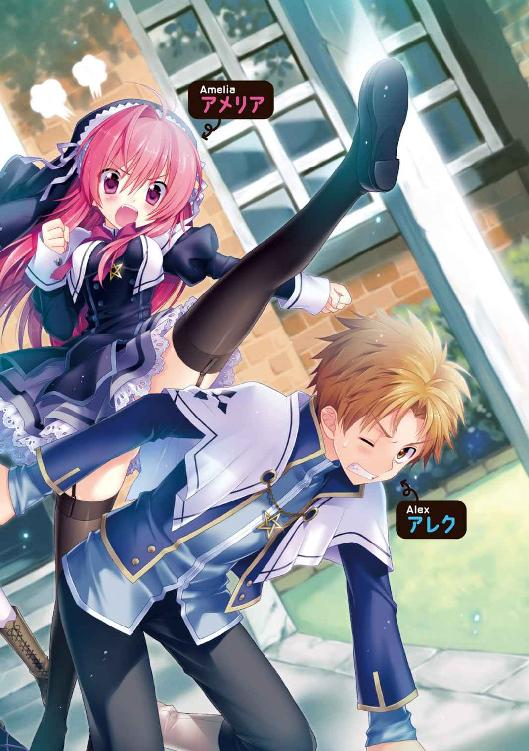
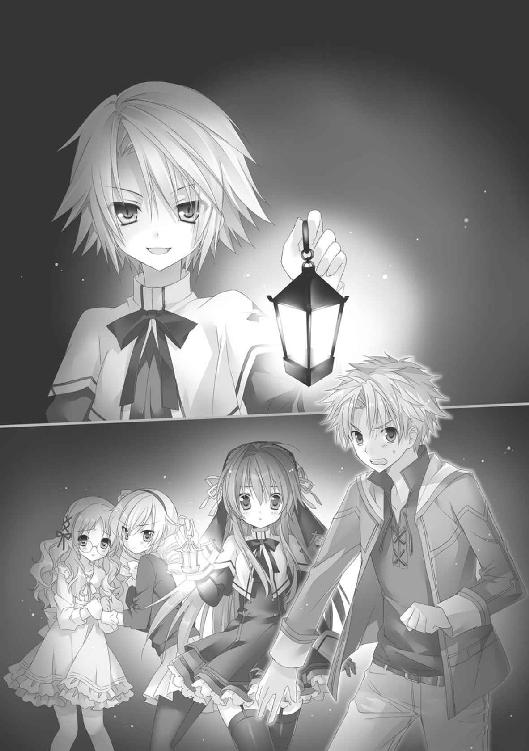

| 恋人にしようと生徒会長そっくりの女の子を錬成してみたら、オレが下僕になっていました: 1 (一迅社文庫) | |
| 月見 草平 | |
| (2012) | |

挿画：さくらねこ
デザイン：塚原麻衣子・百足屋ユウコ
（ムシカゴグラフィクス）
薄暗い部屋である。
梁が剥き出しの三角屋根に、板を張られただけの質素な壁、すすけた黒い床。部屋に一つあるベッド脇の小さな窓には分厚いカーテンが閉められていて、外の様子を窺い知ることはできない。
部屋の中央の床にチョークで大きく描かれた幾何学文様。オレはその前に座禅を組んでいる。
「終わりにするんだ、そう、オレの今までの人生に終止符を打つのさ」
魔方陣に置かれた蝋燭の炎がユラユラと揺れた。橙色に照らされた顔に、オレはニヤリッとヒールな笑いを浮かべる。誰に見られているわけでもないのに敢えてやってみた。なんとなく雰囲気が出る気がするから。
「じゃ、始めるか......。まずは水だな」
立ち上がり、横を向く。食卓の上にいくつも置かれた桶や木製の容器。桶は岩塩でできていて、中は水で満たされている。オレは五つある桶を全て幾何学文様、つまり錬成陣の中へと移動させていく。
「あと、大さじ三十杯の炭の粉、硫黄十杯、一杯の鉄分............」
岩塩の桶の水に、木製容器に入った多種多様な粉末を次々と溶かしていく。まるで、料理でも作っている気持ちになってくる。無論、違うが。
「あ――、こんなもんか？ 意外と少ないな」
錬成陣の内側に移動した全ての〝材料〟を外から俯瞰する。噂には聞いたことがあったがほとんどが水だな。それからオレは床に置かれた一冊の書物を拾い上げる。装丁がボロボロで今にも崩れ落ちそうな書物。二百年以上前に書かれたものだ。表紙に金糸で刺繍された辛うじて読むことができる文字。「最大禁忌・人体錬成研究篇」とある。
最大禁忌――。なんという危険な香りのするフレーズだろう。しかも、表紙を一枚めくると、そこにはビッシリと注意書きが記されている。
「巫女錬金術師による人体錬成は危険であり禁止されています。錬成した場合、成否に関わらず異端審問されることがあります」云々かんぬん。
分かっとる。そんなことはよーく分かっとる。異端審問を受けた者の末路は、大体決まっている。死刑は当然、しかも楽には殺してくれない。火あぶりとか、磔とか、長々といたぶられるヤツと相場が決まっていることも。
重々承知だが、オレはそんなリスクを取ろうとしている。どうしてもしないといけないのだ、人体錬成ってヤツを。
こういうことを人に話すとなにか事情でもあるのだろう、と変に想像して同情されるかもしれない。幼い頃に亡くした親の顔を一目見ようとしているとか、自分の過ちで亡くした友人や恋人を復活させようとしているとか、或いは失った右腕と弟の体を取り戻そうと、ゲフンゲフン――。
でも、違う。全然違う。そんな高尚な理由でやろうとしてるわけじゃない。オレが人体錬成をしようとしている理由はもっと俗物的だ。
理想の彼女を作りたい――！
つまり、そういうことだ。
とある事情があって、オレは女の子しかいないにも関わらず恋愛がほぼ不可能な学校に通っている。クラスメイトに声をかけるだけで、白い目で見られるような状況である。はっきり言って辛い。心身共に充実した十六歳の男子には拷問のような環境なんだ。
そこでオレは、学校とは関係ないところに彼女を作ることにした。錬金術によって。
「可愛い彼女を作るんだ。優しくて、なんでも言うことを聞いてくれて、毎朝美味しい朝ごはんを作ってくれる......、そう、生徒会長そっくりの！」
胸のポケットから一枚のポートレートを取り出す。
リアルなタッチの、巫女衣装を着た一人の女の子のバストアップ。ショートカット、形のよい大きな瞳の超可愛い顔。そして清楚そうな巫女衣装の常識を破る、大きな胸。
「パメラ、可愛いよ、パメラ！」
思わずポートレートを胸に抱きしめた。この子はマーサ学院の生徒会長パメラ・レイノルズ。オレの理想の女の子である。
オレはポートレートを岩塩の容器の隙間に挟む。最大禁忌書とやらに、こうしろと書いてあるからだ。
「やべっ、名前書くの忘れてた」
ポートレートに錬成陣を書くのに使ったチョークで文字を書きこむ。〝アメリア〟と。オレの彼女となる女の子の名。三日考えて決めた。可愛いんじゃないかと思う。
「さてと......。じゃあ、始めるか......」
錬成陣を外から見下ろしながら、ゴクリと生唾を呑みこむ。さすがに緊張してきた。なにしろ、やろうとしているのは最大禁忌だ。
ス――と深呼吸すると、錬成陣の前に再び座禅を組んだ。禁忌の書を目の前に掲げ、じっくりと錬成方法を読む。
魔方陣に正しい材料を置き、錬成しようとする対象をしっかり頭の中にイメージし、母なる神マーサに祈りを捧げる――。人体錬成とはいえ、書かれていることは学院で習ってきた巫女錬金術と違わない。
「通常の〝巫女錬金術師〟が錬成しても、人の形をした人形のみができることが多い......」
欄外に書かれた注意事項を読むたびに、ちょいやる気が萎える。パメラそっくりの冷たい、魂のない女の子ができたらどうするよ？ 人の形をしていればまだいいが、もっと全然違う生物、それも生々しいのが生まれでもしたら？ 〝巫女錬金〟の成績がイマイチなオレにできるのか？
「いや、なんとかなるだろう」
彼女が欲しいという強い意思があればきっと成功する。いや成功させる。失敗を恐れるな。ただ、恋人のいる生活だけを考えろ。常に楽観的であれ、というのがオレのモットー。
「よし、やるぞ」
両手を組み、目を閉じた。
書かれている通り錬成したい対象〝パメラ〟の姿を思い描こうとする。
二つ年上。ブロンドの髪。蒼い美しい瞳。超整った顔。巫女服のスカートからスラッと伸びる、黒いガーターストッキングに覆われた長い足、肉づきのよい太もも......。パメラの完璧すぎる姿がくっきりと、閉じられたオレの瞼の裏側に映し出される。
パメラ、可愛いよパメラ......。あんな彼女がマジ欲しい。
次第に高鳴る胸。得体の知れない力のようなものが、体中に満たされてくる。
来てる、来てるよ！ オレの体の中にある、なけなしの〝マーサの分身〟が、ビンビンに反応してる。
「偉大なる母なる神に望む。この手の質量を新たなる姿に変化させ給え！」
祈りの言葉を唱え、胸の高鳴りが最高潮に達した時、
ピカッ――。
閉じた瞼の裏から分かるほどの強烈な光が、目の前から発せられた。
オレはすぐに目を開く。
錬成陣の中央、材料が置かれた場所が、神々しい透明のヴェールに包まれている。強すぎてなにが起きているか分からないくらいの光を放っている。
次の刹那――、
バンッと爆発音が上がり、強い衝撃波に襲われオレの体は後方に飛んだ。玄関の扉に体をしたたかに打ちつけ、尻餅をついて床に落ちる。
その体勢のまま、錬成陣の方を見やる。光は消え、煙だけが立ち昇っていた。
「成功したか!?」
目を凝らす。くゆる錬成陣の中に、なにかある気がする。
オレは息を呑みこんで立ち上がる。おそるおそる近づいていく。
錬成陣の前に立つ。ゆっくりと煙が消え、中が見えてくる。
「！」
脈が跳ね上がった。錬成陣の中に女の子がいる。真っ裸だ。魔方陣の中に三角座りをして、手で足を抱えこむような格好をしている。
蝋燭の橙の炎に照らされて、透き通るような白い柔らかそうな肌が輝いていた。瞳の閉じられた顔は明らかに可愛い。よく見るとパメラに似ているが、本人より少し幼い印象。また、髪もパメラの金髪に対し明るい色の長い髪、体型は少し華奢に見えた。でも、それでも、かなり可愛い女の子である。女の子ばかりが通うマーサ学院においても、こんな可愛い子はそういない。
「い、生きてるのか？」
緊張しながら錬成陣に入っていこうとする。
パチッと、女の子の瞳が開く。
「動いたっ！」
黒い瞳。これもパメラの碧眼とは違う。でも、大きくて、形がよくて、長い睫毛に縁取られていて可愛い。
女の子の顔がこちらに向く。その拍子に、透き通るような美しい体もこちらに向けられた。胸がポロリと露になる。ちょっと小ぶりのような気がするが、それは今後に期待すればいいだろう。
「やった！」
ガッツポーズを決める。オレは人体錬成に成功したんだ。
「アメリア――――！ 可愛いよ――――――！ 彼女になってくれ――――」
魔方陣に飛びこみ、近づいていく。すると、アメリアの、その黒い瞳が鋭利に吊り上がった。握りしめた堅牢そうな拳を、弓を射るように大きく後方に引く。
「えっ？」
アメリアに接近しながら、彼女の異変に気がつき目を瞬かせるオレ。その顔面に――、アメリアは拳を思いっきり振り抜いた。
ドカッ――。
鋼鉄のハンマーが顔にめりこんだような衝撃が、脳天をグラングランと揺らす。フワッとした浮遊感と共に、体が宙を舞う。直後、グシャリと椅子を破壊する音。オレは板間の床に頭部をしたたかに打ちつけた。
（な、なんだ？ なにが起きたんだ？）
混乱する。起きたことを理解できないまま目の前が真っ白にフェードアウトしていく。意識も遠ざかる。
霞んでいく三角屋根を見つめながらオレは目を閉じていく。そして、かかる事態になった経緯を、思い返そうとする。
☆
マーサ学院という名の学校がある。
グレドノス大陸の中央。山にいだかれた大地のへそとも呼ばれる盆地にある都市国家マーサ。全世界に展開するマーサ教会の中枢がある街。マーサ学院はその街に存在する巫女を養成する女子高だ。
ただしマーサ学院が養成するのはただの巫女ではない。〝巫女錬金術師〟と呼ばれる、特別な巫女だ。〝巫女錬金術師〟は大陸中の全ての国において、政治、軍事、経済を担うエリート。で、そんな学校にオレは通っている......。
オレはアレク・マッカーシ、一六才。身長は平均より少し高め。体重は平均的。前をアップにした小麦の色の髪に真っ白な歯。自分で言うのもなんだけど、爽やかでそこそこ整った容姿、ただしイケメンというほどでもなく、まあどこにでもいそうな普通の男子だ。
あ――、とりあえず、ツッコまないで欲しい。
マーサ学院は巫女を養成する女子高だと説明した。そこになぜ、男が通っているのか、と不思議に思うだろう。だが、その理由はオレ自身、よく分かっていない。恐らく、知っているのは今、オレの目の前にいる人物だけだと思われる。
「最近、どうだい、アレク」
校長のゲルダはジロリとオレを見る。硬そうな木でできた机に顎肘を突き、薄紫色の口元には小さな笑みが浮かんでいる。女性にしては肩幅のある体を包むシルクの巫女衣装。頭には薄い紫色のシルクのヴェール。学院に通う人間ならそれだけで彼女が〝聖女〟と呼ばれる高位の巫女であることが分かる。というか、ゲルダは学院の校長だ。
「まあまあです」
できるだけゲルダと目線を合わせまいと視線を逸らす。
校長室である。学院の顔とも言える大聖堂の最上階にある特別な部屋だ。日当たりの悪いオレの下宿とは違って四方の壁に巨大な窓がはめられ、太陽の光が注ぎこみ、マーサの橙屋根の街並みを一望できる。
「まあまあ、か」
ゲルダが満足とも不満足とも取れる表情をした。
大聖堂の横にある鐘楼の鐘がカランカランと鳴り始める。窓の向こうで鳩の群が街の空に白いアーチを描いていた。
「ええ。特に体調も悪くないし、成績も変わらずです」
「そうか......」
「ええ」
オレは妙にそわそわして背中を掻いた。
「実は、お前に訊きたいことがある」
ゲルダが目を糸のように細める。
「学院で唯一にして、歴史的にも初である男子生徒であるお前に対し、クレームが来ている。今に始まった話じゃないが......」
「クレーム？ どこからですか？」
「多方面からだ」
「多方面！」
「お前、学校内で見知らぬ女子生徒に話しかけまくっているらしいな」
指でトントンと机を叩きながら、オレの表情を窺う。
「いや、別にまくってるわけでも......。それに話しかけるくらいいいじゃないですか。同じ学校の生徒なんだし」
「話しかけるだけならいいが、名前を尋ねることもあるとか」
「会話の流れから、そういうこともあるわけで」
「クラスやら下宿先まで訊こうとするとも聞いたが」
「......まあ、美しい女の子を前に、思わず尋ねてしまうこともあるかもしれません。オレも年頃の男子ですし、通過儀礼というかなんというか。むしろ訊かない方が失礼というか......」
「自分のことを年頃とか言うなっ！」
いきなり怒鳴られた。
「お前も知っているはずだ。ここはそういう行為が許されない学校だということを」
ゲルダは立ち上がると、窓の向こうに目を向けて静かに言う。
「はあ......」
「巫女は穢れがあってはいけない......。本気で〝巫女錬金術師〟を目指している生徒たちは必死なんだぞ」
「分かってますって。......でも話しかけるくらい、いいのでは」
「ほう。話しかけるくらい......な」
ゲルダは振り返り、オレを睨みつけてきた。
「じゃあ覗きは？ それも年頃の男子の通過儀礼か？」
「の、覗きですと？？」
「更衣室に侵入してきた、という話を聞いた。というか、コスタ・グラハム・ニューウエイから、毎日のように抗議が来ているぞ。酷い辱めを受けた。お前を即刻退学にしろ、と」
「コ、コスタ？ あ、ああ、あれですね」
コメカミに汗を浮かべながら、手を振った。
「あれは事故なんです。体育の授業で、講堂の部屋の扉をなんの気なしに開けたら、みんなが着替えていて......」
「ほう、なんの気なしな」
「鍵がかかっていればあんな事故もなかったのですが、ここの生徒はみんな無防備ですからね」
「あのな......」
ジロッと睨むと、
「私はそういうラッキーな事故を起こさせたり、ナンパさせたりするために、お前を学院へ通わせているわけじゃないいいい！！！！」
両手でバンと机を叩く。窓ガラスがビリビリと揺れる。
「ハッ、おっしゃる通りであります」
背筋をピンと伸ばして敬礼ポーズをすると、ゲルダが疲れたように首を振った。
「お前に期待しているからこそ......、男子であるにも関わらず〝特例〟として通わせているんじゃないか」
「はあ......」
「そうでなければ、男が神聖なる〝マーサの聖地〟に足を踏み入れられるわけがない。女子でお前程度の実力の持ち主はいくらでもいる。でも、それでも、〝特例〟として通わせているのは、私がお前に期待しているからだ」
超真面目な目で見られた。
「......」
「何度も何度も言っているように、お前の母親は本当の天才だった。お前にはその血が流れている。男子という弱点を補って余りある才能があるかもしれないんだ。だからわざわざ孤児院から探し出したりもした」
「......」
「いいか、女子生徒にむやみに話しかけるな、名前を訊くな、住所も訊くな、覗きなどもってのほかだ」
「......へい」
適当に答えながら、オレは、内心、ありえないと思っていた。事情はどうあれ女の子ばかりの学校に通っているんだ。言わばハーレム状態なのだ。だというのに女の子と話すこともできなければ生殺しじゃないか。
「言っておくが、これ以上は本当に庇えなくなるかもしれないんだぞ。今までだって、教会上層部の特例措置に対する不満は大きい」
「はあ......」
つまり、下手をすると退学させられるかもしれない、ということか。冗談じゃないね。こんな夢のような環境から放り出されるのだけは避けたい。かといって、生殺しも勘弁だけど。
「お前の母さんはな......」
ゲルダは再び、窓の方を向いて、母親の話を始める。親友だったかなんだか知らないが、これが始まると決まって長い。くどくどくどくど......。たぶん、目を細めて懐かしげな顔をしながら話しているに違いない。すごく優秀で、ゲルダの学生時代のライバルで、聖母クラスになるのは間違いなかったのに突然街を去り巫女を辞めてしまった云々......。ここに連れてこられた時に何度も聞いた。正直、見たこともない母親の話など、一度聞けば十分だと思う。
オレは話を右から左へスルーしながら、ボケーと辺りへ視線を向ける。
と――、
壁際の本棚の中にある、古ぼけた一冊の書物に目が留まる。
〈最大禁忌......人体錬成研究篇〉
と書かれてあった。
ふ――ん、人体錬成ね......。ってか、人体錬成!?
なんという魅惑の響きか。つまり、巫女錬金術を使って、自由に人を錬成できるということか？ そんなの聞いたことがないぞ。
でも、もしそんなことができるってことは......、もしかして、いや、まさか......。例えば可愛い女の子とかも錬成できたりするのか？
でもって、錬成した女の子を、自分の恋人にしたりすることも......。
ゴクリと生唾を呑みこんだ。
いい、すごくいいかもしれない、恋人錬成。人体錬成から恋人錬成にダイレクトにパスを繋いだ発想力に我ながら感服する。
オレはゲルダの方を見ながら、チラチラとさりげなく本棚に目をやる。なんとしてもアレが欲しい。読んでみたい。あれさえあれば、オレの生殺し状態に終止符を打てるかもしれない。
背中を向けてとうとうと話し続けるゲルダに注意を払いながら、さりげなく、カニ歩きで壁の棚へ向かって歩いていく。目当ての本棚の前まで無事たどりつく。背中で隠すように立ち、後手で目当ての書を掴んだ。よしっ。
「アレク！ お前、ちゃんと反省しているのか!?」
突然、窓の方を見ていたゲルダが、こっちを振り返った。
「えっ？ は、はい。大丈夫です」
元いた場所にちゃっかり戻っていたオレはしれっと答える。後手で掴んだ本を、バッチリ背中に忍ばせた。さりげなく後方の書棚を見やる。手にした時に適当に隣の本を寄せて隙間を埋めたので、違和感はない。
背中に隠した本を服の上からナデナデと愛撫する。やった。これがあれば、理想の恋人を作れるかもしれないんだぜ？
その時、
「失礼します」
凛とした声がして、背後の扉が開いた。
開かれた扉の向こうから、神々しい光が差しこんだ。その光は、扉から入ってくる、一人の女の子から発せられていた。
ブロンドのショートカットに、森の湖のように澄んだ蒼い大きな瞳。作り物のように整った顔立ち。活動的で芯の強そうな外見にも関わらず、透き通るような巫女衣装が本当によく似合っている。マーサ学院百八十二代生徒会長パメラ・レイノルズ！
「お呼びということで参りました」
パメラは口に微笑みを浮かべる。
「ああ、待っていたよ」
ゲルダが手招きすると、扉を閉めて中へと進む。パメラが近づくに連れて、かび臭い校長室が花の香りに包まれてくるような気がする。そのフローラルな香りを、オレはス―――と吸いこむ。なんて幸運だ。パメラを、こんな近くから拝めるなんて。今日はラッキーデー。記念日にして毎年祝おう。
パメラがオレの横に立つと、ゲルダがこっちに目配せした。深い失望に満ちた目が、「もういいから帰れ」と言っている。
「じゃあ、オレは失礼します」
「ああ。今日言ったこと、肝に命じておくように」
「へい」
適当に答えながら回れ右した時、パメラが小さくオレに会釈した。オレ、感激。今まで会話をしたことがなかったから。こんな彼女が欲しい。マジで――。
扉に向かって歩きながら、オレは真剣に考える。
女の子しかいない学校。女の子ばっかりの閉じられた街。そんな環境にも関わらず、女の子に声をかけることも許されない年頃のオレ。どう考えても可哀想だ。そんなオレにパメラのような恋人ができたなら、学校生活は薔薇色になるに違いない。
だが、事実上、パメラを彼女にすることは無理だ。接点がなさすぎる。向こうは上級生。しかも、未来の〝聖女〟と期待されるスーパーエリート。それに引き換え、オレは校長ごり押しの〝特例〟でなんとか落ちこぼれクラスに通っている身分。しかも、学校内の恋愛は厳禁。どう考えても無理......。
「だが、その答えがこれだ」
校長室を出て扉を閉めたオレは、背中に入れてあった書物を取り出す。「最大禁忌・人体錬成研究篇」である。
「できないなら作ってしまえ！ パメラそっくりの女の子!! フフ、フフフフ」
ウキウキしながら、スキップでもするような軽い足取りで大聖堂の螺旋階段を下りていったのだ。
――以上、オレが本当に人体錬成をやっちまった、三日前のことだ。
ボ――ッとしていた頭が少しずつ晴れてくる。はっきりしてくる意識。気絶する前の状況を思い出そうとする。ここはオレの下宿。仰向けになって倒れている。こうなったのは、オレが禁忌の技を使って可愛い女の子を錬成し、えっとそれから、それから......。
ゆっくりと目を開ける。鮮明になっていく視界。すぐ目の前に、大きな瞳があった。可愛い女の子がオレの横に立って体を折り曲げて、至近距離から見下ろしている。
「......パメラ？」
寸前まで見ていた記憶のフラッシュバックのために、思わずそんな言葉が出てしまったが、いや、パメラじゃない。パメラの髪の色はブロンドだし、目の色は蒼のはず。でも目の前にいるのは明るい色の髪に黒い瞳の少女だ。
「なに寝ぼけてんのよ！」
女の子は強い口調で言うと、上体を起こして腕を組んだ。その生意気な言葉遣いを聞いて、ようやく全てを思い出す。
この子はアメリア。オレが錬成した女の子。で、オレはこの子の強烈なカウンターストレートを顔面に食らって、気絶していたのだった。
「いや、でも......」
気絶する前と、アメリアはちょっと違っていた。
具体的には服を着ていた。さっきまではすっぽんぽん。文字通り、生まれたままの姿だった。ところが今は、マーサ学院の制服である巫女衣装を着ている。オレが錬成した女の子に着せようと、食卓の上に用意していたものだ。薄いシルクのワンピースにヴェール、黒いガーターストッキングがうちの学校の制服。パメラの体型を想像していたので、少しゆったりめ。でも、ものすごく似合っている。オレはこの制服を気に入っているんだ。
ところで、アメリアはストッキングを穿いていない。面倒臭かったからかもしれない。真っ白な肌の生足が目の前にスラッと伸びている。それを見ているだけで、ドキドキしてくるが、あまつさえ、この制服は黒ストッキングの着用を前提に作られているのでスカートの丈が短いのだ。このアングルで足の上流をたどっていくとスカートの奥側が......。
ハッ――。
そういえば制服は各種テーブルの上に用意していたが、パンツは様々な都合で買うのを忘れていた。ってことは、今、アメリアは〝パンツ穿いてない！〟。
オレは目を血走らせ、武者震いしながら、秘密の花園を一目見ようと、足の付け根を凝視すると......、
「ど、どこ見てるのよっ!?」
頭部を強烈に蹴っ飛ばされた。食卓の足に後頭部がぶつかった。
頬を朱に染めて、短いスカートの裾を押さえる彼女の仕草は可愛いが、頭部の痛みが酷すぎてそれどころじゃない。ついでに言うと秘密の花園は暗くてよく見えなかった。
「......意識を取り戻したばかりの人間に暴力を振るうなよ。もうちょっとでまた気を失いかけたじゃないか」
「変なところを覗こうとしたアンタが悪いんでしょ！」
アメリアは真っ赤な顔のまま腕を組んで横を向く。
しょっぱなからアンタ呼ばわりか......。どうやら、オレの作り出した女の子はかなり生意気かつ暴力的な性格をしているらしい。見た目はパメラによく似ていて超可愛いのに、性格はいつも冷静で丁寧な彼女とは全然違ってしまったらしい。なぜだ......。
オレは痛む頭を押さえながら、ゆっくりと立ち上がる。
フラフラとおぼつかない足取りで歩いていき、ベッドに腰を下ろす。サイドボードに置かれた大き目のランタンに火を灯すと部屋が一気に明るくなる。
それからようやくアメリアに目をやった。彼女の大きな黒い瞳と目が合う。
「確認したいんだけど」
「確認したいんだが」
台詞がかぶった。
「こっちが先でいいわよね？」
アメリアは有無を言わせない様子で、キッと目を尖らせた。
「別にいいけど......」
「アンタが気絶している間に、色々、部屋の中とか、窓から外を見させてもらったわ」
「部屋の外には出てないだろうな。裸で」
「で、出てないわよ！」
いちいち赤面するところは、まだウブっぽい。
「ここってアンタの家？」
「ああ。アパートの下宿だけどな」
「ああ、そう。じゃあ、この街はどこなの？」
「マーサ。知ってるのか？」
「知らない。そう、マーサっていうんだ」
ベッド横の薄暗い窓から外を覗いていた。〝家〟とか〝下宿〟とか、一般的な単語の意味は理解してそうだが、固有名詞の知識はないらしい。
「で、アンタはどういう立場の人間なの？ 学生？」
「そうだよ、学生。この街にある学校に通う生徒」
「それが巫女錬金術師の学校なわけ？ 生徒手帳に、そんなことが書いてあったけど」
机の上にチラッと目配りする。
「ああ、その通り」
「やっぱりそうなんだ......。じゃあ、最後の質問よ」
アメリアは真剣な顔になった。
「アンタが、私を、作ったの？」
強張った表情で、テーブルの上に置かれた「最大禁忌・人体錬成研究篇」の書を、親指で差した。
「......その前に、オレの質問に答えて欲しい」
オレも真面目な顔でアメリアを見返す。
「キミは本当に錬成されて、魔方陣から出てきたんだよな？」
「そのはずよ。なんで？」
「生まれてきたばかりの錬成種にしては、なんというか、馴染みすぎじゃね？ 実はドッキリだったりしないのか？」
「違うわよ！ 気がついたら、あそこに裸で座っていたの！」
「そうか。まあ、そうだよな......。あの光は、錬成術でしか発生しないよな」
オレは肩をすくめる。
「......だとしたら......、さっきの質問への答えはイエスだ。キミを作ったのはオレ」
「ガ――――ン。やっぱそうなんだ......」
アメリアは見るからにショックを受けた表情になった。
「なんで、ガ――ンなんだよ。なんか不都合でもあんの？」
「大あり！ あ――あ、なんでよりにもよってアンタみたいな男に......最悪」
頭を両手で押さえた。
「ちょっ、なんでまだ会って間もないのに、オレそんなに評価低いわけ!? 言っておくけど、オレだって似たような気持ちなんだからな。オレは、生まれた直後にカウンターストレートを放ってきたり、ダウン中の相手の頭部を躊躇なく蹴ったりするような娘を作るつもりで人体錬成したわけじゃない。もっと素直で優しい女の子のつもりで――」
「素直じゃなくて悪かったわね！」
こっちの台詞が終わらない間に、脛をしたたかに蹴られる。
「じゃあ、また訊かせてもらうけど！」
アメリアはフンと鼻を鳴らす。
「私を作った理由はなぜ？ 素直で優しい女の子を、どうして作ろうとしたの？ 目的はなに？」
「そ、それは」
オレは顔を引き攣らせ、アメリアから視線を逸らす。
「なんで？ どうして？ なんとなく分かる気もするけど......」
アメリアはムスッとした顔で、怯んだオレの方へ近づいてきた。腰に手を当て目の前に仁王立ちになる。
「アンタは私を作った人間として、事情を説明するべきよ。そうじゃない？」
「まあ、そうかもしれん」
「じゃあ、教えなさい。どうして私を作ったのか！」
眉根をギュッと寄せて睨んできた。やべえ。この錬成種、創造主にメンチ切ってるよ。
「あ―――、えっと、なんだ」
オレは耳の後ろを掻きながら、顔を上げた。
「オレがお前を錬成したのはな」
「うん」
「可愛い女の子を錬成して、オレの言うことをなんでも聞いてくれる恋人にしたかったからだ！！！」
やけくそ気味に、叫んで。
..................一瞬の間。
で、
「こここここここここここ、こ――――の――――、へ――――――んた――――いいいいい!!」
アメリアは怒りの表情を浮かべた顔をブルブル震わせながら、オレを指差してきた。
「まさか、本当にそうだったなんて！ 彼女が欲しいから女の子を錬成するなんて、本当に変態じゃないっ！ ホントもう、最悪！」
さ・い・あ・く、と一文字ずつ区切りながら叫ぶ。
「アンタ変態よ！ 変態の中の変態、変態キングよ！」
「変態キング!? 生まれてきたばかりなのに、新語を創出するなんて語彙が豊かすぎるだろっ！」
「じゃあこの服は、恋人に着せようと思って用意してたの？ こういう服が好きなわけ？ 趣味なの？ マニアなの？ 特殊な嗜好なの？」
アメリアは巫女衣装の胸の部分を押さえる。
「特殊じゃない！ 好きなのは確かだが、この街の女の子はみんなそういう格好をしているんだ」
「言っておくけどっ！」
再びビシッと指差してくる。
「アンタの恋人になんて、絶対に、死んでもならないんだからあっ！！！！！！」
啖呵を切られた。
「......オレだって、お前みたいな生意気な性格の女の子は願い下げだけどな......」
「なによ、この性格だってアンタが作ったんじゃない」
そう叫ぶとプイッと横を向いてしまう。なんというキツイ性格。言ってることが間違ってない分、なおさらカチンと来る。
「で、変態の創造主さん」
アメリアはボソボソと口を開いた。
「その呼び方は止めにしてくれ。オレにはアレクって名前がある」
「じゃあ、変態のアレク」
「枕詞が余計だ」
「呼び方なんかどうでもいいわ。それより、これからどうするつもり？」
ジッと睨まれる。
「どうするというと？」
「私の処遇。どうするつもりなの？ どう責任取るの？」
「せ、責任......？」
語尾が上がる。即答できない。ただ恋人を作ることだけを考えていた。その後のことなんか、全然、決めていなかった。ましてや、こんな女の子が錬成されるとは思ってなかったし、断られるとか考えてもなかった。
「まさか、なにも考えてなかったの？」
アメリアは眉間に皺を寄せてこっちを睨む。
「いや、そういうわけじゃないが......」
「ホント、アンタ最低最悪の創造主ねっ！」
「......」
悔しいが、言い返せない。
「人一人作り出しといて、どうするか考えてなかったの？」
「だから、恋人にするつもりだったんだ」
消えそうな声でなんとか答える。
「恋人にしてどうすんの？ 一年後も恋人？ 十年後は？ 二十年後は？」
「知るかっ。愛さえあればなんとかなる、と思ってた。さっきまでは......」
「そういうのを〝無責任〟というのよっ！」
またまたビシッと指差される。どうやら指差すのが癖らしい、生まれつき。
「あ――あ、どうすればいいのよ。もう、最悪」
アメリアはオレの目の前を行ったり来たりする。それをオレはなにも言わずに見ている。下手なことを言ったらまた、集中放火を浴びそうだ。
「でも仕方ないわ」
アメリアが立ち止まり。
「作られたからには仕方がない。生きていくしかない」
ギュッと拳を握りしめていた。
「うむ、その意気だ」
「うっさい！」
すごく怖い顔で睨まれた。
「でも、だからってこんな暗い汚い部屋に、変態のアンタと住んでいかないといけないなんて......」
「い、一緒に住むつもりなのか？」
「そうだけど？」
「そうなのか。なんだかんだ言って、お前、創造主であるオレのことが......」
「キモイこと言わないでって言ってるでしょ！」
また蹴られそうになる。
「身寄りもない、つてもない、コネもない、この世界のことも分かっていない。生まれてきたばかりなのに、家もなしで生きていけるわけないじゃない。それとも追い出すつもりだったの？」
「い、いやそんなことはない。そりゃ、そうだよな。ここに住んで当然だ」
カクカクと首を縦に振る。だんだんと、オレもことの重大さに気がつきつつある。単純に彼女が欲しいと思っていただけだが、作った女の子がどうやって生きていくのか。そういうことも、考えないといけなかった。......なんだか十字架を背負わされたような気がする。人体錬成が禁忌な理由の片鱗が理解できた。
「少なくともしばらくの間、この世界のこととか、生活の方法とか、一人で生きていけるようになるまでここにいるわよ。甚だ不本意だけどね！ 文句ないわよね？」
アメリアは唇を尖らせる。
「......ああ、異論ない」
「で、共同生活を始めるに当たって、一つ、約束して欲しいんだけど」
「なんすか？」
「今後、創造主であるアレクは、私の言うことをなんでも聞くこと」
「はっ？ なんで？ ちょっと待て、普通逆じゃないか？ 普通、創造された方が創造主の言うことを聞くもんだろ？」
「なに言ってんのよ！ 創造主は作り出した私を〝幸せにする義務〟があるでしょ!?」
「し、幸せにする義務!?」
背中の十字架がさらに重くなった。
「アレクはその義務を果たさないといけないのよ！」
アメリアは険しい表情で腕を組む。
「だ、大丈夫だ」
オレは立ち上がって、優しい笑みを浮かべた。
「心配しなくていい。きっとオレが君を幸せにするから」
「キモイ！ 触んな！」
肩に触れようとしたら、股間を蹴り上げられた。
「ゲハッ」
オレはその場に、座りこんだ。ものすごく痛い、痛すぎる。悶絶するオレを、アメリアは汚いものでも見るような視線で見下ろす。
「なんで、すぐに暴力振るうんだよ......。ググググ」
局部の痛みに耐えながら見上げる。
「アンタが気持ちの悪いことを言うからでしょう？」
「ちょっと雰囲気を和やかにしようとしただけだろ？」
「ちっとも和やかにならなかったわよ。キモイだけ」
「キモくても、すぐに暴力を振るうの止めた方がいい」
「変態を調教するには暴力が一番適切だわ」
「創造主に向かって調教とか言うのは、もっと止めた方がいい」
「ふ―――んだ」
鼻を鳴らす。こいつ、創造主に対する尊敬の念とか、そういうものが全くない。
「とにかく、約束しなさいよ。私の言うことはなんでも聞くって」
「......まあ、善処する」
「善処じゃないの。なんでも聞かないとダメッ！」
「へい」
オレは肩を落として、尻餅状態から立ち上がる。小さくため息を吐くと、アメリアに手を差し出した。「なによ」みたいな目で見られる。
「いや、なんにせよ、一緒に暮らしていくんだからさあ。一応、握手くらいはしないか？」
アメリアはその手をジッと見つめる。
「......その手、綺麗でしょうね？」
「だ、大丈夫だ。トイレの後はいつも綺麗に洗ってる」
「......」
アメリアは小さな躊躇いを見せた後、しかめっ面でオレの手を握りしめる。
すべっとしていて生温かい。それで、オレは改めて人を一人、錬成したという実感が湧いてくる。
「よろしくな」
アメリアも尖らせた口でボソボソと「よろしく」と答える。
「ちなみに一緒に住んでいる内にオレの恋人になる、という展開はないのか？」
「そういう奇跡的な展開はありえないわ」
乱暴に手を放された。
「恋人がいないから作ろうとした、とかそんな変態を好きになれるわけないじゃない」
「うぐっ」
またまた返す言葉もねえよ。
再びため息を吐きながらオレは窓の外に目をやる。いつの間にか夜の帳が落ちて、空には星が出ていた。すっかり夜になっている。
「とりあえず、今日のところはどうすっか？ 生活に必要なものを揃えたいところだけど、もう遅いし」
「そうねえ......」
アメリアがなにか言おうとした時、
――グウッ。
派手な音が部屋に鳴り響いた。オレは怪訝な顔で、音源であるアメリアのお腹に視線を向ける。アメリアの顔が赤くなる。一応こういうシチュエーションで、恥ずかしがるくらいの常識はあるらしい。
「し、仕方がないじゃない。ずっとなにも食べてなかったんだから」
「ずっと、っていつからだよ」
「ざ、材料でいる時から？」
「前世かよ」
「そんなのどうだっていいの。お腹が空いた。なにか食べさせて！」
アメリアはまた不機嫌そうに睨んできた。
「オレが食べさせるの？」
「私の言うことはなんでも聞くって約束した！ 創造主は錬成種を......」
「幸せにする義務があるんだろ？ 分かってるよ。でも、お前、飯も作れないわけ？」
「その辺の知識、ごっそり抜け落ちてるの」
「なんでそう知識が中途半端なんだよ。でもまあ、......かったよ。今、用意する」
オレは部屋の端にある小さなキッチンへ行くと、戸棚から、パンと干し肉とラードの入った容器を取り出す。
「恋人に飯を作ってもらう予定が、なんでこんなことに......」
ブツブツ言いながらパンにラードと肉を挟む。その間、アメリアはテーブルの椅子に座って、期待するように目を輝かせて、こっちを見ている。食い意地だけは素直だ。
「ほらよ。味に文句は言うなよ」
干し肉とラードのサンドが二つ載った大皿を、テーブルの上に置いた。
「これ、食べられるんでしょうね？」
アメリアはチラッと、不安げな視線を正面の椅子に座ったオレに向けた。
「いつも食べてるよ。ってか、オレも食べる」
「あ、そう」
言いながら、アメリアはサンドイッチを手に取り、カプッとかぶりついた。
目の色が変わった。どっちかと言えば、好意的な感じに。そのまま無言でバクバクと食べ続け、すぐに平らげてしまう。
「どう、美味しかったか？」
「まあ、アンタが作ったにしては美味しいんじゃない？」
「誉め方が上から目線だなあ」
首を振りながらオレが自分の分のサンドを手に取ろうとしていると、
ジ―――――ッ。
アメリアが真剣な眼差しでオレのサンドを見ていた。
「なんなの？ まさか貪欲にもこれまで食べたいわけ？」
「ち、違うわよ。アレクがなんだか食欲なさそうだから、食べるのを手伝ってあげようかな、という親心！」
「錬成種が親心出さなくていいよ！ ってか、普通に腹減ってるよ」
「そう。だったらいいのよ」
と言いつつも、アメリアの視線はまだ、ジ―――ッとサンドに釘づけだ。
「......分かった。じゃあ、半分だけな」
「ホント!?」
嬉しそうに目を輝かせた。
「なんだよ。やっぱり欲しいんじゃないか」
「そ、そんなことないわよ。じゃあ、いらない」
アメリアはプーと頬を風船のように膨らませる。
「なにへそを曲げてんだよ。もっと素直になれよ」
「別に。素直だけど」
「分かったよ。......じゃあ、手伝ってくれるか？」
「本当に、手伝って欲しいだけ？」
チラッと目線だけオレに向ける。
「ああ。昼、食べすぎたし、錬成とかしてたら食欲がなくなったみたいだ」
「そ、そう。そういうことなら」
機嫌を戻したように、ニッコリと笑う。
なんというへそ曲がりなヤツ。最初から食べたい、と言えばいいのに。ホント、共同生活の先が思いやられる。
パンナイフで半分に切ると、アメリアはしっかりちょっと大きい方へ手を伸ばした。残りも食べられては勘弁と、オレも急いで手にする。
「ふう。ようやくお腹が落ちついた」
一口で食べ終わると、アメリアは幸せそうな顔をしていた。
「そうか。それはよかったな」
お陰でこっちはちょっと物足りないけどな。
「アレク」
「なんだよ」
「この調子で私を幸せにするのよ。創造主として」
テーブルの反対側の椅子で、アメリアは機嫌よさそうにニッコリ笑う。
ウザッと思いつつも、その顔を正面からバッチリ見てしまったオレは、ドキッと心臓を高鳴らせた。悔しいが、やっぱり可愛い。顔だけはものすごくよくできている。さすがパメラをイメージして錬成しただけのことはある。
「へいへい」
オレは適当に返事しながら、「これだけ可愛いのに、どうして性格はああなんだ？」と、胸の中でブツブツ言っていた。
「もちろん、私がベッドで寝るのよね」
「ちょっと待て。なにがもちろんだって？」
アメリアとオレはベッドの前で睨み合っていた。
食後、歯も磨いて、後は寝るだけだ。アメリアに街のことや、この世界のことなど、抜け落ちている知識についてレクチャーしたかったが、なにも見えない夜だと説明もし辛い。しかも、アメリアは錬成種であるにも関わらず一丁前に夜になれば睡眠欲があるらしい。とりあえず寝て、今後のことはまた明日にでも考えよう、という意見で一致した。で、問題はその後に起きたのだ。
問題を説明する前に、オレの下宿について説明しておこう。二階の広めのワンルーム。ほぼ正方形に近い部屋に、鉄製の炭で煮炊きするミニキッチン、食卓、机とベッド、それにワードローブが一つ、というマーサの下宿ではよくある構成。つまりなにが言いたいかというと、ベッドを使えるのは一人だけということだ。
「ここはオレの部屋だ。オレがベッドに寝る優先権があるんじゃないか？」
「ない」
即答。アメリアはブンブンと首を振る。長い髪が左右に揺れた。
「お前が貸せって言うから、パジャマは提供しただろう？」
「それは当然よ。一張羅が皺になったら、外に出られなくなっちゃうじゃない」
アメリアはブカブカのパジャマの袖を振ってみせる。オレのパジャマだ。ちなみに着替え中は、しっかり外に出された。
「オレからパジャマを取り上げた上に、ベッドまで奪おうというのか？」
「その通り」
「なぜ？ もしかしてあれか？ それも創造主の義務なのか？」
「呑みこみの悪いアレクも、ようやく分かってきたようね」
「なんだよ、その上から目線」
「私はアレクに作られたんだから、アレクより立場的に上なのよ」
「どういう理論だよ。何度も言うが普通、逆だから。錬成種は自分を作ってくれた創造主の言うことを聞くのが筋じゃないか」
「誰も作ってくれと頼んだ覚えはないわ」
「お前は反抗期の息子か！」
うんざりしながらオレは首を振る。アメリアは不機嫌そうな面をこっちに向けたまま。あっちは絶対に譲りそうにない。しゃあないか......。
「分かった。今日は初日だから、ベッドはアメリアが使うがいい」
「明日からもずっとよ」
せっかく優しさを見せたのに、感謝の気持ちが微塵もない。
「まあ、それは明日以降考えるとして、オレはどこで寝ればいいんだ？」
「その辺？」
なんの躊躇いもなく食卓の下を指す。大した錬成種だよ。
「ダメ元で訊くけど、ベッドに一緒に寝る......、という選択肢はないか？」
「ない！ 寝ている間、アレクはここから近づいたらダメだからね！」
アメリアは床に境界線を引くように足を動かした。
「それが創造主に向かって言う言葉かよ」
「その創造主の人格に問題があるんだから、仕方がないでしょ！」
「人を人格破綻者のように言うなよ」
ブツブツ言いつつも、ワードローブから寝袋を取り出してきて、テーブルの下に敷いた。上着だけ抜いで寝袋の上に腰を下ろすと、アメリアが眉根を寄せた。
「その格好で寝るの？」
「仕方ないだろ。パジャマは一着しかないんだから」
「その内、私専用のパジャマも用意してよ。あ、あと......下着も！ 直接、穿くの、ちょっと抵抗あるんだからね！」
少し恥ずかしそうに叫ぶ。オレは不思議そうにアメリアのパジャマの下をしげしげと眺める。
「生まれたばかりでも、そういうのってあるのか」
「あるわよ！ あと、ジロジロ見るな！ 変態！」
キッと睨まれる。
「とにかく、下着とかそういうのは全部明日以降だな。たぶん、学校の売店にもあるから、そこで買えばいい」
「......うん。分かった」
「じゃあ、今日のところは寝るか」
寝袋に潜りこみ、ランタンに手を伸ばす。
「明かり、消すぞ」
「ちょ、ちょっと待って」
慌てた様子でアメリアはベッドに横になって、蒲団に潜りこむ。
「う―――ん。なんだか、男っぽい匂いがする」
「仕方ないだろ。オレが使ってたんだから。ってか、生まれたばかりの癖に、なんでそんな匂いが分かんの？」
「知らないわよ。生まれた時からそういう知識があるんだから。アンタが敢えて植えつけたんじゃないの？」
「人を匂いフェチみたいに呼ぶなっ！」
「はいはい、もういいから。明かり消して」
「へいへい」
オレはランタンの火を消す。
唯一の光源を失い、下宿の部屋は暗闇に包まれる。静寂に支配された部屋。窓から入る明かりもほとんどない。マーサの街は学校と同じで禁欲的だ。日が落ちれば早々に店は閉まってしまう。
「......」
寝袋に包まれ、目を閉じてはみたが、中々眠れそうにない。同じ部屋のすぐ近くのベッドで、超可愛い子が寝ているから......、というわけでもない。いや、正直に言うとそれもあるが、それよりもアメリアを作ったことに改めて動揺している。
（確かに......。作った後のこと、考えてなかったな）
パメラそっくりの彼女を作る。それだけを考えていた。作った後のことなんて、よく考えていなかった。女の子一人を作り出したことへの責任というか、そういうものを、今更ながらに感じていたわけだ。例えそれが、超生意気な女の子だったとしても。
ス――、ス――。
アメリアの寝息が聞こえる。さっき生まれてきたばかりの癖に寝つきがいい。
ハアとため息を吐くと、オレも本格的に寝ようとする。頭の中を空っぽにしようとする。と、
「ねえ、アレク......」
ベッドから声。寝てたんじゃなかったのか。
「もう寝た？」
「......」
「寝ててもいいんだけどさ......」
「......起きてる」
「やっぱり起きてるんじゃない」
「どうした？ 添い寝か？ オレに添い寝してもらいたいのか？」
「アンタバカなの？ それともバカなフリをしているの？」
「お前、どんどん口が悪くなってないか？」
「別に」
フンと鼻を鳴らしていた。
「で、なんの用だよ」
「別に用があるわけじゃないんだけど......」
「じゃあなんだよ」
「う―――ん、やっぱ止めた」
「んだよ。気になるだろ」
オレはゴロンと、寝袋ごと寝返りを打ち、ベッドの方を向く。
「だって、アレクに相談しても、あんまご利益なさそうだし」
「なに？ 相談？」
ゴロゴロと寝袋をベッドの方向へ転がしていき、ベッドのすぐ脇まで行った。
「ちょっと、さっきの線より近づいてくんなって言ったでしょ」
頭上のベッドの上から怒鳴られる。
「話を聞いたら戻るって。で、なんだ？」
「う――――。なんかますます話したくなくなってきた」
「創造主であるオレの他に、どこに相談相手として最適なヤツがいるんだ？」
「まあ、それはそうかもしれないけど......」
アメリアはベッドの中でしばらく「う――――」とか「どうしよう」とかブツブツ呟いた後、ハアとため息を吐いた。
「あのね。......私、これからどうすればいいのか、って思ってたのよ。なにを目標に生きていけばいいのかなって」
そんなことを言う。ものすごくあっさりと吐露した台詞だったが、オレには結構、重い内容だ。
「なんかね。生まれた時から漠然としたこの世界の仕組みについての知識はあるのよ。王様がいて、貴族がいて、商人がいて、街の人がいて、農業の人がいて、みんなが働くことで、世界が動いているんでしょ？」
「お、おう。なんか壮大なことを知っているんだな」
「意外そうに言うけど、アンタが作ったんじゃない」
「ああ、そうだったな」
そんなこと、オレは普段から考えてないんだが。
「でね。そういう仕組みの中で、私はどうすればいいのかなって。なにをすればいいのかなって。なんかポンと世界に出てきちゃったから、よく分からないのよね。なんというか生活の軸みたいなもの？」
「お前......生まれてきたばかりの癖に、やけに哲学的だな」
「むう。茶化さないでよ」
「茶化したわけじゃないけどさ」
オレはふうと鼻から息を吐き出す。
「まだアメリア、お前は、この世界のこと、あんま見てないだろ？ よく知らないだろ？」
「う、うん」
「明日になったら、もっと色々見せてやるからさ。明日がダメでも、明後日もその次の日もあるぜ。いくらでも時間はある。沢山見て、色々知って、それから決めても遅くないんじゃないか？ なんだっけ、その生活の軸ってヤツ」
「......」
しばらく、沈黙の時間が流れた後、
「確かにそうね。アンタの言う通りかも。私、まだこの部屋から一歩も外に出てないもんね。今から悩んでいても仕方なかったかも」
「珍しく素直じゃないか」
「悪かったわね。いつも素直じゃなくて」
言いつつ、声が笑ってた。
「そういえばさ。私、これからアンタのことなんて呼べばいいと思う？」
アメリアはベッドの端から顔を伸ばして、ベッド横に転がるオレを見下ろしてきた。漆黒の暗闇の中でも、その顔を見ることができる。見るたびにハッとするくらい可愛い。そして、パメラにちょっと似ている。
「今のまま、でいいんじゃないか？ アンタとアレクの混合」
「それじゃあツマラナイでしょ。創造主だからパパとか？」
「止めてくれ。アレクでいいよ、アレクで」
「え―――」
不満そうな声を上げながら、アメリアは首を引っこめる。
「じゃあ、そっちも保留ね。明日以降に決めるわ」
「それでいいと思う」
「じゃあそういうことで。おやすみなさい」
「へいへい。おやすみ」
オレが返事をすると、間もなく寝息が聞こえてきた。
「オレ、まだ境界線よりこっち側にいるんだが......」
ブツブツ呟きながら、オレは寝袋をゴロゴロ転がして、再びテーブルの下に戻っていく。そして、しばらくボーッとアメリアの吐息を耳に響かせながら天井を見つめていると、意識が遠のいていった。
結構、寝たと思う。
深夜、熟睡していたオレは、ガツンと頭に衝撃を感じて目を覚ました。
「はぐ？」
寝ぼけたまま、目を開いた。テーブルの上から、真っ黒な人影が見下ろしている。ドキッとしたが、すぐにアメリアと気がついたので、悲鳴を上げずに済んだ。
「......どうしたんだよ」
テーブルの下から顔を出す。
「えっと、その......」
アメリアがそわそわした様子で、オレを見下ろしていた。
「なに？」
「......」
「どうした？」
「だからその......」
「なんだよ。はっきり言えよ」
「............トイレ」
「はい？ ああ、場所、教えてなかったか」
オレは目を擦りながら、扉の方を向く。
「廊下に出て、左に行って。一番突き当たり」
「......」
場所を教えても、アメリアは立ったまま、ジッとオレを見下ろしている。口を小さく開けて、ボソボソと聞き取れないような小さな声でなにか言う。
「はあ？」
「......行けない」
「はあ？ なにが？」
「だから、一人じゃトイレに行けないって言ってるのっ!!」
急に大きな声を出してきた。
「なんでだよ」
「なんでって言われても......」
アメリアはむくれてみせた。
「いいから、トイレまで連れていってよ！」
「ええ、なんで？ マジ、近いよ」
「いいから！ 私の言うことはなんでも聞くって約束したじゃない！」
「約束したつもりはないんだけどな......まあ、分かったよ」
もぞもぞと、オレは寝袋から這い出し立ち上がった。まだ寝ボケているせいか、足がもつれてこけそうになる。
「じゃあ行くぞ」
手でパタパタやって促すが、アメリアは石像のようにピクリとも動かない。
「どうしたんだよ。トイレ、行きたくないのか？」
「アレクが私の前を歩いて」
「はあ？ まあ、いいけどさあ」
オレが歩き始めると、ようやく、後をアメリアがついてくる。
扉を開ける。廊下はいつものように薄暗い。廊下の両端の窓から差しこむ月と星の明かりだけが光源だ。
「トイレはあっちな」
「う、うん」
廊下を歩き始めると、アメリアがオレの服の裾を掴んできた。
「どうした？」
「よ、よく前が見えないから持たせてよ」
「はあ、いいけどさ」
「あ、あと、あんまり速く歩かないで」
肩を小さく震わせながら言う。
「へいへい」
オレは前を向き直ると、言われた通りゆっくりと廊下を進み出す。チラッと振り返ると、アメリアは肩を縮こまらせ、眉根を寄せてキョロキョロと左右の壁を見ていた。よく分からないが、ものすごく怖がっているのは確かだ。
（もしや、暗いのが苦手とか？ そういえば、明かりを消す時もそわそわしていたよな）
生意気な女の子にも弱点というものがあったらしい。それが分かると、むくむくとイタズラ心が頭をもたげてくる。創造主であるオレを足蹴にするこの娘に、ちょっとした復讐をしてやろうと思ったのだ。
黙って廊下を歩いていき、窓からの月光でボンヤリと明るい一番端のトイレの前まで来た時、
「わっ！」
いきなり振り返って、大きな声を出した。幸いここのアパートは大家である一階のパブに夫婦が住んでいるだけで、二階はオレしかいない。
「!!」
オレの突然の叫びにアメリアは絶句すると、元々大きな瞳をさらに大きくして、尻餅をついてしまった。座りこんだまま動けなくなる。
オレはプッと噴き出し、そして、ハハハと笑ってしまった。我、復讐に成功せり。
ところがだ。
しばらく笑っていると、なんだか不思議な匂いが漂ってきた。なんというか、端的に表現するならば、新鮮なアンモニアの匂いだ。そして、ちょろちょろと、なにやら水が流れるような小さな音がする。
笑いが止まる。
「ア、アメリア......」
「............」
月明かりに照らされたアメリアが、顔を真っ赤にしてプルプルと震えていた。
どうやら想像通りの事態になっているらしい。もう笑えなくなってきた。むしろ引く。
「あの、えっとさ。いや、まさかこんなことになるとは......」
「......」
アメリアが下を向いた顔を戦慄かせながら、無言で立ち上がる。グッと拳を握りしめていた。
「あんま気にすんなよ。アメリアはさっき生まれてきたばかりだしさ。小さい時にはみんなやることだぜ」
「......なにを？」
「だから、......お漏らし？」
次の瞬間、アメリアから拳が飛んできた。
「ぐはっ」
顔面にまともに受けて、オレの体は一瞬宙に舞い上がり、廊下をゴロゴロと転がった。岩の塊で殴られたような衝撃だった。
「てえ......」
「最低！」
頬を押さえるオレの前に、アメリアが仁王立ちになった。
「やっぱりアンタは最悪の男だわ！ ちょっとでもいいヤツと思った私がバカだった。絶対に絶対にぜ――――ったいに、アンタの恋人になんか、ならないんだからっ！」
そう言い放つと、オレの脇腹を蹴り飛ばして、肩を怒らせながら部屋に戻っていく。
「つ―――」
軽く蹴ったようで、なんつー威力だ。
「ってか、どうすんだよ。これ」
ビッショリと濡れて芳香を放つ床に目をやる。部屋に戻ったアメリアから沙汰はない。
「しゃあないか」
オレはトイレからモップを取ってくると、それでゴシゴシ拭いた。汚れたモップはとりあえずトイレに戻しておく。明日、洗えばいいだろう。
「これも創造主の義務なのか？」
情けない気持ちになりながら部屋に戻ると、アメリアが着ていたパジャマが入れられたバケツが、玄関近くに置かれていた。アメリアは巫女衣装に戻ってベッドに入っている。
「オレのパジャマが......」
「知らない！ アンタとはもう口をきかないんだから！」
アメリアはプイッと顔を反対側に向ける。
「やれやれ」
オレはホンワカと刺激臭のするバケツを部屋の端に追いやると、再び寝袋に入った。
窓から差しこむ朝陽が、年季の入ったダークブラウンの床を照らしている。傍の街路樹から聞こえる小鳥のさえずり。朝を迎えたオレの下宿。
「いい加減、許してくれてもいいんじゃないか？」
オレは上目遣いで反対側のアメリアを見る。二人の間の食卓には湯気の立ち昇る紅茶にミルク、焼き目のついたパンに秘蔵のジャムが置いてある。全てオレが用意した。
「フンだ」
アメリアはプイッと横を向く。朝からずっとこんな感じ。オレとは口をきかないどころか、目も合わさない。
「そう怒んなよ」
「......」
アメリアはオレの言葉を無視して、黙々とパンを食べている。自分のを食べ終わると、皿に置かれたオレが食べようとしていたパンにも手を出した。
「ちょっ、それはオレの......」
そんなオレの主張を無視して、手にしたパンにジャムをたっぷりかけて口に運ぶ。そして、やはり黙々と食べる。
「昨晩のはオレが悪かった。まさか、あんなことになるとは予想してなかった。ついでに言うと、ちゃんと廊下はオレが拭いたぜ。あと、汚れたパジャマも洗濯済みだ」
「当然でしょ！」
バンとテーブルを叩く。大きな瞳をキッと上げて睨みつけてきた。お腹が満たされて機嫌が幾分回復したのか、初めてまともに口をきいた。
「あんな酷い仕打ち、絶対に許せないっ！ アンタはしばらく、人間と見なさないわ。至上最悪最低上級変態人間よ！」
「人間じゃないか」
「うっさい！」
皿を投げつけられそうになる。
「とにかく、やっぱりアンタはどうしようもない最低の創造主だってことは分かった。この屈辱は絶対に、一生、忘れないんだから」
頬を膨らませて、フ――フ――と荒い鼻息を吐く姿はまるで鬼のようだ。まあ昨晩のはオレに非があるんで弁解できないけどさ。
「さてと......」
一つだけ残ったパンを食べ終えて紅茶を飲み干すと、オレは立ち上がる。
「じゃあ、ちょっと行ってくるから」
腕を組んでそっぽを向くアメリアを見た。
「......どこに？」
不機嫌そうな声が返ってくる。
「今日はミサがあんだよ。すぐ帰ってくるから、部屋で待ってな」
「ミサ？」
「学院の生徒は、休息日の午前中、ミサに出席しないといけないの。ほら、鐘が鳴ってるだろう」
大聖堂の鐘楼が、カランカランと鳴っていた。
「へえ」
アメリアがベッドに乗って小さな窓を開ける。橙色の街並みの向こうに、鐘を鳴らす大聖堂の尖塔が望める。
「ってか、鐘が鳴ったのに、まだここにいるのはヤバイじゃないか」
オレはワードローブの前に急ぐと、礼拝服を中から出した。
「ねえねえ、そのミサって......」
パンツ一枚になっていたら、外を見ていたアメリアがこっちを向いた。
「ちょっと!!」
真っ赤にした顔を背ける。
「なに裸になってるのよ！ アンタ、変態な上に露出趣味まであるわけ!?」
「仕方がないだろ。着替えないといけないんだから」
「廊下で着替えればいいじゃない」
「無茶を言うな！」
「だったら目隠しかなにか、作ってよ!!」
「分かった分かった」
んなことより、今はミサに遅刻しないことが重要だ。
礼服を着て、ワードローブの鏡で髪に櫛を通していると、アメリアが気持ちの悪い微笑を浮かべて近づいてきた。オレは眉間に皺を寄せた。
「ねえ、アレク......」
「なんだよ。今、忙しいんだけど」
「私も行っていいわよね？」
「どこに」
「ミサ」
「はいいい？」
ものすごくネガティブな声を出してやる。
「なんなのその反応？ 私が行っちゃダメなの？」
アメリアは眉の端をキュッと鋭利に上げた。
「いや、ダメってことはないんだけどさ。ミサには巫女錬金術師が大量に集まっているだろう。先生もいれば校長もいる」
「だからなに？」
「その分、お前が錬成種だってバレる可能性が高まる」
「だったらなに？ 私の正体がバレたらダメなの？」
「ダメに決まってんだろ。ってか、そんなことになったら、オレは異端審問の上、磔にされて死刑。人体錬成は最大禁忌なんだぜ？」
「へえ、そうなんだあ」
アメリアがニヤッと小悪魔的な笑みを浮かべた。やべえ。もしかして、今オレ、かなり余計なこと言っちまったか。
「ってことは、私がアレクに作られた錬成種ってことを他人に話したら、アレクは破滅なんだ。ふ――ん」
「あ、ああ」
「そ～なんだあ」
アメリアは目を糸のように細めて腕を組む。
「じゃあ、ますます行きたくなった」
「なんでそうなんだよ！」
「バレっこないわよ。私、どう見ても普通の人間じゃない」
両手を広げてみせる。
「その慢心が逆に危険なんだ」
「でも、どうせいつまでも私をこんなところへ監禁しておけるわけないんだから」
「そりゃそうかもしれないけど......」
オレは腕を組むと、アメリアの下半身に目を向ける。
「な、なによ」
警戒する目つきをする。
「いや、なんつーか、お前さ」
「だからなに？」
「......今、パンツ、穿いてないだろ？」
「!?」
アメリアはハッとしたようにスカートを押さえた。
「だったらなんだって言うのよ」
「いいのか？ スカートの丈は短いんだぞ。そのまま外出してこけでもしたら、大事なところが露になるんだぞ」
真顔で言ってやる。
「こ、こけなきゃいいんでしょ！」
「こけなくても、イタズラな風がスカートを巻き上げるかもしれない。街に住む悪ガキが、スカートめくりをしようとするかもしれないんだぞ」
「そんなことをするのは、アンタぐらいでしょ!?」
スカートを押さえながら睨んでくる。その仕草にオレは思わずグッと来た。
「連れていってくれないなら、今すぐ、窓から叫ぶわよ。私は錬成種で――――すって！」
「ちょっ、それ本気で言ってんの？」
「本気よ」
アメリアは窓に向かっていこうとする。この娘ならやりかねない。
「ちょっと待てって。いや、だがしかしなあ......」
悩んでいると二回目の鐘の音が聞こえた。次の鐘で大聖堂の扉が閉められる。サボれば、明日は長い反省文を提出させられることになる。
「分かった。じゃあ、一緒に行こうぜ。でも、あんまり目立つなよ」
「分かってる」
今日、初めてアメリアがニコッと笑った。初めて自然光の下で見た笑顔は、悔しいことに可愛い。
「私の格好はこれでいいんでしょ？」
皺だらけになった巫女衣装を確認する。その姿はどう見ても、学院の生徒だ。
「それにヴェールをかぶってストッキングを穿いて、ガーターベルトで留めれば完璧だ。あと、本来はパンツも必要だ」
「うるさいっ！」
「とにかく、急ごうぜ。かなりギリなんだ」
「へえ――、へえ――」
下宿から外の通りに出ると、アメリアは石畳の上に立ち辺りを見回した。通り沿いに立つ、橙煉瓦の背の高い建物を物珍しそうに見ている。
「生まれて初めて部屋から出て、感激しているのは分かるが、今は急いでくれ。後でいくらでも見せるから」
「うん」
と答えつつも中々動こうとしないアメリアを放って、オレは通りを早足で歩いていく。
「ちょっと待ってよ！」
怒った声と一緒に、アメリアも追いかけてきた。
下宿前の通りを少し行って大きな通りに出る。マーサの街を中央の大聖堂から八方向へ放射状に延びる大通り。特にオレの住む〝熊猫亭〟の近くを南北に延びるここは、街一番の目抜き通りだ。通りの左右には飲食店などの店舗や下宿が立ち並んでいる。オレは基本、この道を使って学院に通っている。
通りを巫女衣装の女の子たちが何人も必死の形相で駆け抜けている。中には服装が乱れたまま、涙目になって走る子もいる。ガーターベルトが取れて、ストッキングがずり落ちている子もいる。たぶん寝坊だろう。ってかオレも冷静に生足を観察してる場合じゃない。
「走るぞ」
「分かった」
女子生徒たちに混じってオレも駆ける。前方にはマーサ学院の正門とその奥に大聖堂が見える。巫女姿の女の子たちや町の一般人たちが続々と中へ入ろうとしていた。
「いつものことながらなんという女率だ......」
走りながら、思わず口にする。
なにしろ視界に映る人物が九十九対一くらいの割合で女性。街の人口の大半が学院の関係者というから仕方がないが、初めて見た時はカルチャーショックを受けた。平日の朝とか、この辺は女の子たちの甲高い声で溢れている。
「なんだか、同じ格好をしてる人が一杯いる」
横を走りながら、アメリアがそんなことを言った。
「初めて娑婆に出て、最初の感想がそれかよ」
「別にいいじゃん。なんだって」
「まあ、いい。とにかく、今は走れ。遅刻したら面倒なんだ」
「分かってるわよ」
その時、鐘の音が街に一際大きく鳴り響いた。街に五箇所ある鐘楼の鐘が一斉に打たれたのだ。左右の建物の屋根にいた鳩が一斉に飛び立った。
「す、すごい」
アメリアが上空を飛び交うマーサの象徴である白い鳩に、感激の声を上げる。オレも最初は感動したけどな。でも後で糞害がすごいことを知って最近は感動も薄れてきたけど。
「ってか、感銘を受けてる場合じゃないって。アメリア、ネジ巻いて走れ」
「えっ？」
「ミサがマジで始まる」
通りをダラダラ駆けていた女の子たちも、一気に大聖堂目指してダッシュを始める。大通りが巫女さんたちの運動会会場にでもなったかのようだ。オレも彼女たちに混じって、猛烈に走る。
「この制服のスカートの丈が短いのって、走りやすいからなのね」
オレの横を並走しつつ、ハアハアと息を吐きながらアメリアがそんなことを言う。いや、たぶんそんなことはないと思うぞ。
「なんとか間に合った......」
オレは膝に手を突き、肩で息をしていた。扉を閉められる寸前に、ギリギリに大聖堂に滑りこむことができた。周りには同じようにヘトヘトの顔の生徒たちで一杯だ。大聖堂の入口の近くは、女の子たちの汗と熱気により、ドキドキするようなフェロモンで溢れている。しかも、汗でピッタリと体に張りついた巫女衣装に思わず目が行き、ただでさえ速いオレの脈を加速させる。
「綺麗......」
すぐ横では、アメリアが感心の声を上げながらキョロキョロと、大聖堂の豪華絢爛な内装に目を奪われていた。昨日生まれたばかりの癖に随分と体力はあるらしく、息は上がってないし、汗も引いている。
「目立つから、あんまキョロキョロするなよ。おのぼりさんみたいじゃないか」
耳打ちする。
「すごいね、ここ」
「まあな」
同時に千人が入れる巨大なホール。超背の高い天井。一面に金箔が貼られ、ステンドグラスにタイル絵。一番奥の聖台には真っ赤な絹と金糸の絨毯が敷き詰められ、そこから大理石製の長椅子が何十も置かれている。
来た者全員を圧倒させる贅沢さ。これを見たら、マーサ教会の規模の大きさってヤツをイヤでも知ることになるだろう。
パイプオルガンの音が鳴り響き、内部に満ちてたザワつきが急速に静まる。入口付近で呼吸を整えていた不真面目な生徒たちも、後方の長椅子に移動していく。オレとアメリアもついていく。
やがてオルガンが鳴り止み、一番奥の演台の上に一人の巫女が現れた。その時、ちょっとしたため息が辺りに響く。オレも、思わず「おっ」と呟いた。演台に現れたのが、生徒会長のパメラだったのだ。ミサでの説法は、基本教会上層部である〝聖母〟が執り行う。だが、今日は生徒会長であるパメラがすることになったのだろう。サボらなくてよかった、と心から思う。
パメラは聖典の〝伝書〟を開き、説法を始める。オレはパメラの可愛いご尊顔をジッと眺める。演台で喋っているパメラの姿は、遠くからでもよく見えた。可愛くて、綺麗で、凜としていて、声もよく通っている。中身については、さっぱり理解する気もなかったが、その顔をボ――ッと眺めていた。
やっぱ、パメラ可愛い、萌えだ、理想だ......。
そんなことを考えていたオレは、突然、横で不穏な気配のようなものを感じた。一年中温暖な気候のこの街にあって、寒気のようなものを覚える。体毛が総毛立つ。
おそるおそる気配の方を見る。思わず「コワッ」と思った。アメリアがものすごく険しい表情で、壇上のパメラを睨みつけていた。黒い目を三角にして、眉を鋭利に上げて、まるで親の仇でも見るような目つきだ。
しかも、今度はその視線をオレに向けてくる。からんでくるゴロツキのように、ガンを飛ばしてきた。「ちょっと顔貸しな」と目が言っている。
どうやら彼女は気がついたらしい。
自分にモデルがいるということを。
☆
「どういうことか教えなさい」
睨みつけるアメリアに、オレはピクピクとコメカミを動かした。
ミサの終了後、オレたちはマーサ学院のキャンパスの中庭を歩いていた。大聖堂のすぐ裏にある、芝生や白樺の林、ベンチが配された生徒にとって憩いの場所。この中庭を囲むように、マーサ学院の薄い橙色の壁の校舎が立ち並んでいる。
「さっき、前に立っていた人は誰？ 私とはどういう関係なの!?」
「あんま大きな声を出すなよ」
オレは唇に指を当てる。中庭には、同じくミサに来ていた生徒たちがグループになって、中央の芝生の上やベンチに座って話している。それでなくてもオレは目立つ存在なのに、言い争いでもしていたらなおさらだ。
「だったら、事情を説明して」
「分かった、分かったから......」
「説明しないなら、ここで叫ぶから。私はアレクに作られた錬成......」
「ちょっ！」
オレは咄嗟にアメリアの口を押さえようとした。で、その手を思いっきり噛まれた。
「グハッ！」
「なにするのよ！ 変態！」
「非常にヤバイ発言をしようとしていたから、止めようとしただけじゃないか。ってか、歯形ついたぞ。すぐに物理的な反撃に出るその性格、今の内に直した方がいい」
「ふんだ」
アメリアは鼻息を荒くする。
「で、どうなの？ 正直に言ってよ」
「......」
「あの子が私のモデルなわけ？」
一応、声を潜めた。
「......そうだ」
「やっぱり、そうなんだ！ ブゥゥゥゥ」
アメリアは頬を最大級に膨らませる。
「なんでそんなに不満そうなんだ？」
「そりゃそうよ。なんか自分が誰かに真似て作られたとか、イヤに決まってるでしょっ！」
「そうか？ そういうもんか？」
「当たり前よ！ そんな気持ちも分からないの!?」
ゲシゲシと地面を踏みつける。
「でも、どうしてあの人に似せたわけ？ あの娘がアンタの好みなの？」
細めた目で見られる。
「いや、なんというか、まあ。端的に言うと、そうだな」
「やっぱりそうなんだ。ホント、本当にアンタ、変態ねっ！」
昨晩と同じように、汚いものでも見るような目で睨まれる。
「好きなら、あの娘に告白でもなんでもすればいいじゃない。それがどう間違ったら、人体錬成に繋がるのよ」
「あのな......。告白とか、そんなことはできないんだよ。ここじゃあ」
辺りを気にしながら、オレはアメリアを見る。
「ここの学校が巫女錬金術師を養成する学校ってことは、もう分かってるよな？」
アメリアは無言で頷く。
「お前は巫女錬金術師がどういう存在か、知ってる？」
「錬金術を使えるんでしょ」
「やっぱり知識が中途半端だなあ」
頭をゆっくりと振った。
「確かに、巫女錬金術師は錬金術が使える。でも、錬金術師である前に、巫女であることが重要なんだ」
「？？」
「錬金術は女神マーサの力を借りるんだよ。だから、マーサに身を捧げる巫女でなければ、錬金術は使えない。そしてマーサに仕える巫女は、穢れのない乙女であるべし。それが学院の生徒であることの条件だ」
「穢れのない乙女？」
アメリアは不信げな顔をする。
「アレクは乙女でない上に、穢れまくっているじゃない！」
「そのツッコミはもう聞き飽きてるんだよ。だから、オレは〝特例〟なの！」
両手を広げて首を振った。
「ええっと、でな。あの聖壇に立っていた彼女......、パメラっていうんだが、彼女は上級生でしかもプレミアグランドっていうエリートクラスの生徒で、なおかつ学院の生徒会長だ。生徒たちにも慕われている」
「で？」
「しかも、学校からも将来、教会の重鎮の〝聖母〟になることが期待されている。そもそも彼女に限らずこの学校にいる女子の大半は巫女になりたいから、男との恋愛には興味ない。だから、彼女に告白するなんて、できるはずがないんだ」
「ふむ......。なるほどね」
アメリアは冷たい目でオレを見る。
「それで私を作ったと。恋人にしたいと。彼女の代用品として......」
「トゲのある言い方だな。でも、そういうことだ。オレの心の叫びが分かってもらえただろうか」
「分かったけど、変態であることに変わりないわね」
「評価変わってない――！」
「告白できないからって、作ろうとする。その発想が変態なのよっ！」
「ぐっ」
反論したいところだが、客観的に見るとまあそうかもしれない。
「ところで、あのパメラって娘......」
アメリアは不機嫌そうに尖らせた口をボソボソと動かす。
「そんなにスゴイわけ？ 成績優秀なわけ？」
「巫女錬金術の腕はとにかくすごい。十年に一人の逸材だって」
「巫女錬金術の腕がすごいってなに？ 錬金術って錬成できればいいんじゃないの？ なにがすごいの？」
「色々あるんだよ。速さとか、錬成率の高さとか......」
「そもそも、巫女錬金術がどういうものなのか、よく分からないのよ。材料から違うものを作るだけじゃないの？」
「オレもここに入るまでは、その程度の知識しかなかったけどな。......知りたいか？」
アメリアの顔色を窺う。
「知りたい。私もそれで作られたんでしょ？」
「......分かったよ。まずは論より証拠だな......」
立ち止まると、小路から近くの芝生に移動して腰を下ろした。
「言っておくけど、オレは下っ端だからな。錬成率も速度も学院内では底辺だ。まあ、男だから仕方がないんだけど」
「男は巫女錬金術、巧くできないの？」
アメリアもオレの正面に座る。オレはギョッと眉間に皺を寄せて目線を背けた。
「お、お前、しゃがむなよ。足を折って座ってくれ！」
「うるさいわね、なんでよ」
「だってお前、その、穿いてないだろ！ そんな風に座ると具が見えそう......」
「なっ!!」
顔を真っ赤にすると、スカートの裾を押さえてデルタ地帯を隠す。
「み、見たんでしょ！」
「だ、大丈夫だ。見ようとはしたが、よく見えなかった」
「見ようとするなっ！」
首まで赤くして唇を結びながら、みんながやってるように足を斜めに折った。
「そ、それはともかくさっきの質問への答えだが、マーサは女の神だからな。基本、巫女錬金術は女性にしかできないんだ。〝マーサの分身〟っていう、女神さまの力の欠片が、女性に受け継がれやすいからなんだけど。たまに男でもオレみたいにできるヤツもいるが、錬成率は基本的に低い」
言いながら、オレは礼服のポケットから、折り畳まれた羊皮紙を出し、芝生の上に広げる。正方形の紙の上には、幾何学文様と女神が描かれている。
「これが携帯用の錬成陣。これに材料を載せる」
さらにポケットから出した小さな麻袋から、鉄粉をサラサラと錬成陣の上に振りかける。
「じゃあ、よく見てろよ」
アメリアに目配せすると、錬成陣に手を突く。学校内は一応どこでも、巫女錬金術の練習をやっていいことになっている。恥ずかしいからあんまやりたくないんだが。
目を閉じ、祈りの言葉を告げる。
「偉大なる母なる神に望む。この手の質量を新たなる姿に変化させ給え！」
直後、錬成陣がピカッと小さな光を発し、白い煙が立ち昇る。
やがて光と煙が消えた時、錬成陣から鉄粉が消え、代わりに一本の釘が現れていた。
「すごいっ」
アメリアが釘を手に取った。
「錬成直後は熱を持ってるから、気をつけろよ」
「うん」
手の上で釘を転がしたりする。
「今のは巫女錬金術の中でも基本中の基本。１レベル錬金術なんて言われている。鉄粉から鉄の釘を作る。これは別に術を使わなくても、鍛冶屋でも作れる。慣れた連中は、もっと複雑なものを錬成陣なしで、一瞬で作ってしまう。でも、そのためには高い錬成率がいる。それが錬金術の才能なんだ」
「へえ」
アメリアは真面目な表情で腕を組む。
「創世の歴史によると、この世界は母神マーサが超膨大な〝質量〟を作り、父神エンタが〝仕事〟を作ったことから始まったんだ。この世界の全ての〝質量〟は、その姿を変えながらも、その合計量は連綿と保存されている。巫女錬金術は、神の力を借りることで、ある形の〝質量〟を別の形に変換することを言うんだよ」
「なるほどね。なんとなく分かってきた」
「桶十杯の水、大さじ十杯の塩、その他諸々......」
「？？」
「それらの質量がお前の材料だった」
アメリアは複雑な表情をする。
「なんだか、そう言われるとバカにされたような気がする......」
「どんな被害妄想だよ。オレも分解すれば材料は同じようなもんだぜ」
肩をすくめる。
「でもお陰でなんとなく、巫女錬金術がどういうものか、分かった。で、あのパメラって子は、速度とかなんとか率とかが高いわけね」
「そういうこと」
「もう一つ、疑問なんだけど......」
アメリアは口の下に指を当てる。
「巫女錬金術師になると、なんかいいことあるわけ？ 別に錬金術が使えるだけなら、学校に通わなくていいんじゃないの？」
「そういうことを、この場所で言うなよ」
思わずキョロキョロと周りを見てしまう。学院に通う連中の中には、巫女錬金術師になることに命を賭けているような女の子も多い。そういう子に聞かれたら、どんな反応をされるか。
「あのな。この学校を卒業して、正式に巫女錬金術師として認められたら、それはそれは名誉なことなんだよ。言ってしまえばエリートなんだ。国に重用されるし、社会的ステータスも高い。だから、ここに来てる子は貴族や富豪の娘ばかりなんだよ」
「ふ―――ん」
アメリアはあまり納得できないような顔をする。まあ、そういう社会の共通認識みたいなのは、しばらく生活しないと分からないだろう。
「でも、この学校の雰囲気はいいわね」
アメリアが中庭の女の子たちを眺めながら、目を細める。橙色の壁や屋根の学び舎や、大聖堂、尖塔、鐘楼が続く学校。それを羨望の眼差しで眺めている。確かに膨大な資金力を持つ教会が運営するマーサ学院は大陸屈指の学校だ。設備も環境も教師の質もトップレベルらしいし。
「あっ、猫だ」
アメリアが、近くのベンチの下で丸くなり気持ちよさそうに寝ている黒猫を指差した。
「ああ、あいつの他にも何匹もいるぜ。生徒が餌をやるから、住みついてるんだ」
「へえ。ますますいいところじゃん」
しゃがむと、猫の頭をほっこりとした顔で撫でる。
「ねえ」
アメリアは上目遣いでオレを見る。......いやな予感がした。
「巫女錬金術......、私も使えると思う？」
「えっ？」
「だって、私の元になった娘は、超優秀なんでしょう？ だったら私だって」
「いや、それはそういうものかどうか......」
オレは眉根を寄せる。
「ってか、巫女錬金術が使えたらどうすんだ？」
「もちろん。私もこの学校に通うのよ」
アメリアは胸を押さえる。
「やっぱり！ そんなのダメに決まってるだろ？ ここは巫女錬金術師の本拠地だぞ？ 巣窟なんだぞ？ こんなところにいたら、お前の正体、絶対にばれるって」
オレは首を振った。
「大丈夫でしょ。今日だって誰にも気づかれなかったし」
「その楽天さを見習いたいよ。ミサと毎日キャンパスに通うんじゃ全然違うぞ」
「そんなの通ってみなければ分からない」
「分かった時は、手遅れだけどな！」
オレは頭を抱える。絶対に無理。そんな危ない橋は渡れない。
「でもね、学校に通えば私がこれからなにをすればいいのか、分かるような気がするのよ」
アメリアは遠い目をする。
「......」
それを言われると、彼女を作り出した立場としては反論し辛い。確かにアメリアは年頃だし、学校に通うのは悪くないとは思う。だが、それが学院というのは......。
「ジ――――」
アメリアは立ち上がると、オレを見つめてくる。
「そんな目で見んなよ。お前の気持ちは分かる、分かるけどさ」
「なによ、偉そうに」
眉間に皺を寄せた。
「でもな。この学校には入学試験というものがある。それが一年に一回、春だ。でもって、今は夏。あと半年ほど経たないと試験はない」
「え――――」
「季節に文句言うな。それに誰でも入学できるわけじゃない。ある程度の〝錬成率〟が認められないと許可されない。いくらお前のモデルがパメラでも、優秀な巫女錬金術師である保証はない」
「ぶう。それはやってみないと分からないじゃない」
アメリアは納得いかなさそうに口をすぼめる。
本音を言えば、オレ的には勘弁して欲しい。こんなところにいたら、いつ正体がばれるか分かったもんじゃない。バレたらオレは学院から放り出されるだけでなく死刑。アメリアだってどうなるか分かったもんじゃない。
なんとか来年までに学院以外に興味を向けなければ......、
と、そんなことを考えていると。
「おはよう、アレク」
しゃがれた声が背後でした。振り返ったオレは、口を思いっきり引き攣らせた。
校長のゲルダだった。機嫌よさそうな顔で手を挙げている。しかもその横には、司祭服姿の巫女が控えていた。
「おはようございます」
巫女がオレに向かって会釈する。オレの体がワナワナと震えた。
（パパパパパ、パメラ!?）
司祭服の美少女は生徒会長のパメラだ。
やばい......。
思わず心臓を押さえる。鼓動が二つの理由で高鳴っている。一つは最悪のタイミングにゲルダに遭遇してしまったから。もう一つは、再びパメラと至近距離で会えたからだ。
「お、おはようございます、校長」
顔を強張らせながら、オレはアメリアをさりげなく隠すように立ち上がる。
「珍しいな。お前がミサにちゃんと来るなんて」
「そ、そんなことないですよ。最近は毎週来てます」
「ほう、それは感心感心」
ゲルダは微笑を浮かべて頷いた。
「今日のパメラの説法はどうだった？」
「それはもう。完璧でした」
パメラをチラチラと見ながら言う。
「ありがとう」
ニコリと笑う。さすが上級生、余裕の笑みである。ちょっとトキめいて、ニヤケてしまう。直後、後ろから脹ら脛を蹴られる。フンと鼻を鳴らすのが聞こえた。
「ところでそっちの子は誰だ？ 見かけない顔だが」
ゲルダがアメリアに目をやった。さすが、全校生徒の顔を覚えている、と言われている校長。ここは、用意していた言い訳を使うしかない。
「ああ、えっと、この子はアメリアといいます。孤児院時代にオレと同じ街に住んでいた友達です」
「ほう」
ゲルダが興味深そうに目を細めた。
「観光でマーサに来ているんですが、学院に憧れているって言うんで、制服を買ってあげました」
「ふむ」
ゲルダは頷くと、アメリアをジッと見つめた。アメリアも状況を理解しているのか、それとも素なのかは不明だが、緊張した面持ちで「アメリアです」と会釈した。
「ほう、美人だな。お前にこんなガールフレンドがいたとは知らなかった」
「いや、ガールフレンドというか、ただの幼馴染です」
「幼馴染ねえ......」
ゲルダはじいっとアメリアを見る。それから「うん？」と首を傾げて、パメラを振り返った。
「誰かに似ている、と思ったらパメラにそっくりじゃないか」
背筋が凍りつく。愛想笑いを浮かべて、コメカミをピクピクと動かした。
「そ、そうですかね？ 髪の色も違いますし、目の色も......」
汗の浮かんだ顔を戦慄かせながら、上目遣いでゲルダを見る。
「まあ、確かにそうだな」
ゲルダはなにやら不思議そうに、アメリアを眺める。心拍数がさらに跳ね上がる。もしアメリアが錬成種であることがばれたら、この場で異端審問。激しい拷問の後に磔獄門。ロード・トゥ・破滅をひた走ることになる。
「学院に興味があるのかい？」
「は、はい」
コクコクと首を振るアメリアを、オレは祈るような気持ちで見つめる。頼むから尻尾は出すな、と。ゲルダはアメリアを値踏みするように見た後、優しげに微笑んだ。
「じゃあ、来年、願書を出すがいい。そして、お前にマーサの巫女に相応しい実力があるようなら、通わせてあげよう」
こっそり胸を撫で下ろした。助かった......。
「分かりました。是非」
アメリアも嬉しそうな顔をする。
やれやれ......。これは来年、確実に入学試験を受けることにはなるだろう。アメリアに巫女錬金術の才能がないことを祈るばかりだ。毎日、こんな風に緊張するのはゴメンだからな。
「じゃあ、また」
そう言って、ゲルダはパメラを連れて歩き出す。別れ際にパメラがチラッとアメリアを見ていたのがなんとなく怖かった。
「ふう」
二人の姿が小さくなると、オレは安堵のため息を吐く。
「なんとかばれずに済んだぜ」
アメリアの方を見る。「ぶう―――――」とまたぶーたれていた。
「なんで不満そうなんだよ。なんかイヤなことでもあったか？」
「パメラ......」
ボソボソッと言う。
「生徒会長がどうかしたか？」
「私よりオリジナルの方が......」
「なんだよ。オリジナルの方が美人とか言うのか？」
「顔は別に似たようなもんでしょ！」
「じゃあ、なにが劣るって言うんだ」
「別に......」
口を尖らせながら、さりげなく胸元を押さえている。
「......お前まさか」
「な、なによ」
「生徒会長より胸が小さいことを気にしてるのか？」
「なっ！」
ハッと顔が赤くなる。
「......どうやら図星のようだな」
「ち、違うわよっ！」
強烈なローキックをお見舞いされた。
「気にすんなよ。貧乳にも需要はあるんだぜ」
「気にしてなんかないわよ！ というか、どうしてアンタが私の胸のサイズを知っているわけ？」
「どうしてもなにも、お前、生まれた時、すっぽんぽんだったじゃないか」
「なななっ！」
アメリアはさらに顔を真っ赤に染めると、蹴りを入れようとしてくる。足の軌道を予測してオレは避ける。
「そう何度も同じわざが通用すると......」
ドガッ――。言い終わらぬ前に、顔面を思いっきり殴られた。
「この世に生を受けて二日目にして、フェイントを使うとは......」
「そんなことよりも！」
アメリアは鼻を押さえるオレに向かって、口を尖らせた。
「やっぱり来年までは入学できないわけね。なんだかつまんない」
「まあ、でも、その準備期間に一般常識を身につけつつ、錬金術の腕を磨けばいいんじゃないか？」
「......そうね」
納得いかなさそうな顔で言う。
オレはそんなアメリアの横顔を見つめながら、ふと考えこむ。とりあえず学院への入学を諦めさせたとして、代わりにこいつが昨晩言っていた目標とか生きがいとか、そういうものをオレは与えられるのか......。創造した人間として、その辺、ちゃんと考えないといけないのかな、と。
その時――、
中庭に絹を裂くような悲鳴が響き渡った。
反射的に声の方向を見る。
中庭から東の通りに直接出られる門の近くに、二頭立ての馬車が侵入していた。黒毛の馬はなにかに興奮している。近くの女子生徒たちを威嚇するように前足を上げて、何度も嘶いている。御者の姿はない。静寂であるべき神聖なる学院の中庭が騒然としていた。
「御者はどこだ？」
近くにそれらしき人物はいない。
再び馬が前足を上げて嘶くのに合わせて、近くに集まっていた女の子たちが蜘蛛の子を散らすように逃げ出す。それに反応するように、馬車が走り出した。
「やべえな」
ゲルダとパメラが駆けつけようとしているのを横目で確認する。だが距離がある。間に合いそうにない。
「校舎の近くまで逃げるぞ！」
アメリアに叫ぶ。だが、オレの横でアメリアは呆然と走ってくる馬車を凝視して固まっていた。正確には馬車の進行方向にいる生き物を......。馬車の進路の芝生で先ほどの黒猫が、体をすくませていた。
「アメリア！」
腕を掴もうとするオレ。だがその手を振り払い、アメリアが駆け出した。震える黒猫の傍まで走っていくと、馬車の進路に立ち塞がるように両手を広げる。
「ア、アメリア！」
もう一度叫ぶと、オレもアメリアに向かって走ろうとする。だが、体が動かない。金縛りにあっているかのように、足が震えて前に進まない。
馬車は勢いを衰えることなく、立ち塞がるアメリアの目の前に迫っている。
芝生をえぐる車輪、馬の嘶き、交錯する悲鳴――。
届かないことを分かっていながら、オレはその場でアメリアに向かって手を伸ばそうとする。
刹那――、
アメリアの足下の芝生が光を発した。
地鳴りと揺れが起き、ズズズズと音を上げながら地面が隆起する。隆起した地面が、うず高い土の壁となり馬車の進路を遮った。
二頭の馬は突如として現れた壁に驚き急制動をかけ、一頭は後ろ足で立ち、一頭が転倒する。その弾みで派手な音を上げて車もひっくり返った。そのまま芝生を削りながら転がっていき、隆起した壁に激突したところでようやく停止する。
木製のフレームが割れ、外れたタイヤが転がっていく。二頭の馬に怪我はなかったようで、すぐに立ち上がると、壁の横で呆然としていた。
「い、今のは巫女錬金術!?」
これほどの巨大なものを、超速でやってのけた。
駆けつけようとしていたゲルダとパメラの方を見やる。二人とも呆然とした表情でこちらへ向かってきていた。二人の仕業ではないらしい。
「やっぱり、今のは......」
オレは土壁の反対側で、愛しげに猫を抱っこするアメリアを見やる。
まさかそうなのか？
アメリアが巫女錬金術をやってのけたのか？
ゴクッと生唾を呑みこむ。地面から土壁を錬成する１レベル錬成とはいえ、これだけの大きさのものを瞬間的に行った。しかも、生まれて初めての巫女錬金術でだ。
「おいっ」
口をパカッと開けて言葉を失っていると、背後から肩を叩かれる。
ゆっくりと振り返る。神妙な顔をしたゲルダとパメラがいた。
「あの子に伝えてくれ」
「はっ？」
「入学を許可する。あの子とあの子の親が許すなら、明日からでも学院に通ってもいい。入学金、授業料も心配しなくていい、とな」
「マ、マジですか？」
「あの場であれだけ錬金術を使えれば、入学試験はいらないだろう。来年まで待つのは時間の無駄というものだ。なに、男子で通っているヤツがいるんだ。夏入学する生徒がいても問題ないだろう」
ニヤリと笑うと、パメラに中庭の修復を命じて去っていく。
呆然とゲルダの背中を見守っていると、
「久しぶりに面白そうな生徒に出会った......」
残されたパメラがポツリとそんなことを言う。
「へっ？」
「いえ、さっき、校長が言っていました」
パメラは細めた目でアメリアを見つめている。
「そ、そうっすか。ハハハ」
乾いた笑いを上げながら、オレはかなりのショックを受けていた。
アメリアは本当にマーサ学院に通うことになりそうだ。半年ほど猶予期間があったはずなのに、思い留まらせる余裕もなくなった。
無事、学校生活を送ることができるのか？ 錬成種ということがバレたらどうすんだ？
朝日が燦燦と降り注いでいるというのに、不安感でオレの胸は漆黒の霧に包まれたかのように暗く重い。ただ一つ明らかなのは、アメリアのあのすぐに手が出る性格に錬金術が加わって、オレ、大ピンチということくらいだ。
そんなオレの不安をよそに、翌日、アメリアは正式にマーサ学院への入学が認められ、高等部一年の生徒になった。
「アメリアです。よろしくお願いいたします」
黒板の前でアメリアが頭を下げる。頭にチョコンと載ったヴェールが小さく揺れ、長い黒髪がフワリと広がる。
ザワザワと、教室の色んなところから上がる小さな歓声。「可愛い」とか「綺麗」とかだ。女子たちが口々にアメリアへ高い評価を与える中、オレは一番後ろの一番端の席で頬杖を突いている。
「ついにこの日が来てしまったか」
ハア、とため息を吐く。分かっていたことだが、教壇に立つアメリアを見ると、改めて動揺する。結局、校長が入学を許可して、たった三日で通うことになってしまった。
「ってか、なんでヒラクラスなのかね？」
アメリアが転入してきたのは高等部一年〝ヒラ〟クラス。オレと同じクラスだ。
マーサ学院には成績順に〝プレミアグランド〟、〝グランド〟、〝プレミア〟、〝ヒラ〟の四クラスある。ここはヒエラルキーの最下層。教室だって、一年生校舎の一番下層の一階。すぐ横の窓からは木立と、数日前に馬車の暴走騒ぎのあった中庭が見える。休憩時間になると、教師の目を盗んでこの窓から直接中庭に出る女の子もいたりする。アメリアが入らされたのはそんなクラス。校長もアメリアに期待しているっぽかったが、下積み期間を省くつもりはないらしい。
「可愛いよね！」
「綺麗―――」
アメリアを見るクラスメイトの女の子たちが、隣の生徒と口々に囁き合っている。しばらくこの雑談は収まることはないだろう。オレが言うのもなんだけど、こういうところが〝ヒラ〟クラスだな、と。授業中の私語も多い。前に見学した時に知ったが、上のクラスの授業はもっと張り詰めたような緊張感がある。まあ、このちょっとユルい感じが、オレは嫌いじゃないけどさ。
「はいはい、みなさん。静かにして」
担任のドロテー先生までがユルい注意をする。二十四歳、独身（巫女だから当然だが）。学院教師陣では最年少。ポニーテールの美人だ。細身な体に不釣り合いに大きい胸。男子もいる学校なら、間違いなく大人気になれる。
「アメリアさんはアレクくんと同郷なんです」
そんないらない情報を展開する。
「え――――」
そんな声が飛ぶ。冷たい視線をオレに向ける女子もいた。
「ちょっと待て。な、なんで、え―――、なんだよ」
思わずツッコミを入れた。一部を除いて、このクラスの女共の多くがオレに冷たい。覗きやナンパの件などで、やはり勘違いされているんじゃないか、とオレは思っている。
「じゃあ、席はあそこへ」
「はい」
注目を浴びながら、アメリアはドロテー先生に指示された席へ向かう。
「可愛い方ですね、アメリアさん」
小さな声で横から話しかけられた。タンポポの綿毛のような、フワフワの髪を持つ可愛い女の子である。ピンクの眼鏡がチャームポイントだ。
彼女の名はエマ。〝ヒラ〟クラスの中で数少ない、オレに話しかけてくれる女の子。オレにとっては天使のような存在だ。
「そう？ まあ、可愛いとは思うけど......」
「可愛いし、綺麗です。ちょっとパメラさんに似てますね」
「そ、そう？」
若干、顔が引き攣る。やっぱ......、やっぱそう思われるか。エマだけじゃなくて、口にしなくてもそう思った子は多いだろう。
でも、それだけでアメリアは錬成種だって思うヤツはいないはずだ。先日、校長のゲルダだって気がつかなかったし、入学審査でも不審に思う先生はいなかったみたいだからな。
ボロを出さなければなんとかなるんじゃないか？ と、楽観的に考えつつも、オレは不安な表情でアメリアの横顔を見た。
「ふう。疲れたあ」
一限目を終えて次の授業のある教室へ廊下を移動していると、アメリアが横に並んできた。その言葉通り、ちょっと眠そうな顔をしている。
「先が思いやられるな。まだ、今日は五限あんだぞ」
「やっぱり、座学はつまんない。早く錬金したいなあ」
「じゃあ、次は頑張るんだな」
次の授業は『巫女錬金基礎１』。実技の授業なのだ。
「うん。楽しみにしてる」
微笑むアメリアを、オレは眉根を寄せて見つめる。
アメリアに錬金術の才能があるのは確かだが、授業でもそんなに巧く行くか疑問だ。中庭でやった錬金術は咄嗟に、感覚的にやった感じだった。決まった課題にしたがって行うのは、また違った難しさがあるだろう。
「あのお......」
並んで歩いていると、エマがおそるおそるという感じで話しかけてきた。
「はい？」
アメリアが不思議そうな表情で立ち止まる。
「あの、私、エマといいます」
「はあ。アメリアだけど」
アメリアが首を傾げると、エマは下を向いてブツブツとなにか呟いていた。両手に拳を作って顔を上げると、
「お、教えてください！ ア、アメリアさんは、その、アレクさんの許婚、なんですか？」
「「はあ!?」」
オレたちの声が見事にシンクロする。
「ど、どうしてそういうことになるのよ？」
全く同意見である。
「でも、みんな、そんなことを話しています」
「マジ!?」
「一緒に暮らしているって」
「既にばれてるっ！」
さすが女子集団。噂の伝播速度が半端ない。
「い、一緒に暮らしているのは本当だけど、許婚なんてことは絶対にないわ！」
「そうそう。そうだ。根も葉もない噂だ」
オレとアメリアはブンブンと首を横に振った。
「じゃあ、どうして一緒に暮らしているのですか？」
エマは上目遣いで不安そうな表情をする。
「そ、それは、アメリアの実家が貧しくて、ルームシェアするしかないからなんだ」
「シェア......。あの狭い部屋をですか？」
「そこをなんとかしてるんだよ」
「そうよ。とにかく、アレクが許婚なんてことは絶対にないんだから」
アメリアは激しく首を振る。
「そうですかあ」
エマはホッとしたようにため息を吐いた。
「じゃあ......、アレクさんにお願いしちゃっても、いいのかな」
「お願いって、なにを？」
「実はですね。休息日、買い物に行くのですが、一緒に来てくれませんか？」
「一緒に？ オレと？」
オレは自分の顔を指差す。エマとは学校ではたまに話すが、約束して外であったことはない。一緒に帰ったことくらいはあるけど。
「ええ。父へのプレゼントを買うのですが、男性物を選ぶので男の人に来てもらった方がよいかな、と」
「ああ、なるほど。そういうことなら協力できるかな」
「ちょ、ちょっと」
アメリアが横から睨んできた。なにが不愉快なのかムッと眉根を寄せている。
「週末はダメでしょ。その日は、私の生活品を買いに行くんだから」
「えっ？ そんな約束あったか？」
「約束はなかったけど、週末に行かずにいつ行くの？ 私のパジャマも普段着だってないのよ？ パンツはようやく何枚か確保したけど......」
「別に買い物はオレがいなくても......」
いいんじゃないか、と言おうとしたが、メチャクチャ怖い目でメンチを切られて、最後まで言えなかった。
「そ、そうですよね。アメリアさんはまだ、入学して間もないですし。アレクさんがいないと、色々大変ですもんね。分かりました。プレゼント探しは一人でやります。変なことを頼んで、すみませんでした」
エマは明らかに引いた表情になって、小走りで去っていく。ああ、オレの天使が去っていく。
「なんであんな言い方すんだよ。明らかにエマ、怖がってたぞ。お前も買い物したいんなら、三人で行ってもよかったじゃないか」
「だって......。アンタは創造主なんだから、私を優先するべきでしょ？」
不満そうに口を尖らせる。
「ちょっ、だから学校でそういうこと言うなよ......」
「誰も聞いちゃいないわよ。大体なんなの、あの子？ アンタの部屋の広さも知ってたし」
また睨まれる。
「エマは、あの子は、オレにとって天使みたいな存在なんだよ」
「天使？」
アメリアはますます険しい表情になる。
「天使ってなに？ もしかして、好きなわけ？」
「そういうのと違うんだよ。エマはこの厳しい学校において、心のオアシスなんだよ。そんな子に手を出そうとして、もし嫌われでもしたら、オレは拠り所を完全になくしてしまうんだ......」
「なによ、それっ！ 意味が分からない」
アメリアは頬を大きくする。
「ってかなに、プンプンしてるんだよ。もしかしてお前......、妬いているのか？」
「な、なわけないでしょ！」
「なんだ、そういうことか。そんな妬かなくてもいいんだぞ。今のところオレとエマはそういう関係じゃないんゲハッ――!?」
鼻頭を平手で殴られて、オレは大理石の床に尻餅をつく。鼻、いてえ。こいつ最近、急所を的確についてくるようになってきた。
「気持ちの悪い勘違いは止めてよね。ただ、アンタは私を第一優先にしないといけないってことを、分からせたいだけよ」
それだけ言うとスカートを翻し、肩を怒らせながら廊下を行ってしまう。
「つーか、十分優先してるだろう？」
オレは熱を帯びた鼻を押さえて彼女の背中を見送りながら呟いた。
☆
二限目の授業が行われるのは、〝第一巫女錬金実験教室〟である。すり鉢の形をした階段教室になっていて、一番底の中央に立つ先生を見下ろす感じだ。生徒たちが座った机の上には、各自の錬成陣が置かれている。
オレは定位置である後ろから三番目の席に座り、机に顎肘を突いてアメリアを探す。アメリアはオレの二つほど前の席について、熱心に教壇のドロテー先生を見つめていた。
「さて、今日の巫女錬金の課題はこれです」
ドロテー先生は一つの金属製の短剣を持つ。
「課題は各自のテーブルの上に置いてあります。同じものを教卓に置かれた材料を使って錬成してください」
先生の横の教卓には様々な材料が置かれている。鉄粉や銅、その外の金属、色んな種類の木材などである。
「では、錬成が終わったら持ってきてください。私が確認して完成していれば、できた順に休憩です。では、始め」
先生の合図と共に、一斉に生徒たちは課題の短剣を手に取り、課題のチェックを始める。
『巫女錬金基礎１』の授業は毎回こんな感じだ。材料を使って、目的のものを作る。早い者から順に休憩できて優越感に浸れる。課題ができた順に、ちょっとしたヒエラルキーが構築されるのが特徴。ちなみにオレはドベではないが下位だ。
「今回も面倒臭そうだぜ......」
短剣を手に取りながら、分銅秤を机に置いていると、
「ねえ、なにすればいいの？」
いつの間にか横の席にアメリアが来ていた。
「先生の言ってたこと聞いていただろう？ 必要な材料を取ってきて、課題物を錬成する。以上」
さっき殴られたことへの仕返しというわけじゃないが、突き離すように言ってやる。
「材料ってどうやったら分かるの？」
アメリアはキョトンと首を傾げる。
「参考書物、または勘。材料の分量は比重から判断」
「分量？？ 比重？？」
クエスチョンマークを浮かべて、唇の下に指を当てる。
「あ――、分かった。全部説明してやっから」
オレはため息を吐いた。
「あのな。オレたちのような下っ端は、巫女錬金の錬成率があんま高くない。そういう場合は、目標物の成分を正確な質量として準備しないと正確な対象物を錬成できないんだよ。錬金術を行った時、光とか煙が出るだろう」
「うん」
「あれは余剰質量があるからなんだ。余りの質量が多すぎると、下っ端は処理できなくなる。逆に、錬成率の高い生徒は、多少、材料の量が違っていても、〝質量保存〟を保ちながら目標物を錬成してしまう」
「へ―――え。そうなんだ」
アメリアはそう言いながらもしっくり来てない風に首を傾げる。
「オレが思うに、なんつーか巫女錬金は料理に近いと思う。オレみたいに料理がそれほど得意じゃなくても、決まった量の材料と調味料が分かっていれば、多少、完成度に差があってもそれなりに食べられるものができる。ところが、適正な量が分かってないと、味が薄かったり逆に濃かったり、火が通ってなかったり、不味いものになっちまう。でも腕のいい料理人なら、適量の材料が準備されてなくても美味しいものを作り上げる。しかも、素早くな」
「なるほどね。まあ、なんとなくイメージはできたかも」
アメリアは肩をすくめる。たぶん、あんまよく分かってない。
「でだ。腕の悪い料理人であるオレは、短剣の正確な成分量を調べるところから始めるわけだ。刀身の材料に鉄とその他の金属が混ぜられていることは、分かるだろ？ これを文献、全体の大きさと質量から割り出した密度などにより、比率を出す」
「......なんか地味ね」
「そんなもんだ。エリートの上級生たちは感覚でそれが掴めているけどな。下積みはみんな地味にコツコツやってるんだよ」
「ふ―――ん」
アメリアはつまらなそうな顔をする。これでイヤになって学校を辞めるとか言い出せば、オレにとってはラッキーなんだけどな。
「じゃあ、これから、分量の出し方を教えてやるから。見てな」
分銅秤に短剣を置いていると、
「ちょっとそこの鞄を退けてくださる？」
横の通路から声がした。
振り返ると口を扇子で隠した女子が、冷たい目でこっちを見ていた。
美人である。可愛いというより美人。大きな瞳に桃色のルージュの塗られた唇。皺一つない制服。胸の部分が大きく膨らみ、腰はキュッと引きしまったナイスバディ。ブロンドのドリルヘアが、ブルルンと震える。
「へいへい」
通路に置かれた鞄を、大人しく横によけると、彼女は礼の一つも言わずに階段を下りていった。
「今の誰？」
アメリアが訊いてくる。
「コスタ・グラハム・ニューウエイだ」
「なんだか偉そうだったけど？」
「レイナードの大貴族さまだから、仕方がない」
「へ―――え」
アメリアは不満そうに細めた目で、コスタの背中を追っている。
「なにガン飛ばしてんだよ」
「別に......」
「もしかして、またしても体つきにコンプレックスを感じてるのか？ 諦めろ。あの子には逆立ちしても勝てない」
ゆっさゆっさと揺れるコスタの胸元に目を向ける。
「ち、違うわよ！ そんなの、全然、気にしてないんだから」
顔を少し赤らめる。
コスタは優雅な足取りで階段を下りると、そのまま教卓へ向かった。その後を、同じく同級生の女の子が追いかけていく。同郷の下級貴族で、コスタの腰ぎんちゃく。オレは〝トリ〟と〝マキ〟と呼んでいる。
「さすがコスタさんですね。もう準備が整いましたか？」
「はい、大丈夫です」
コスタは自信たっぷりに教卓に置かれた材料を、腰ぎんちゃく二人に持たせてドロテー先生の横にある魔方陣に置いた。
教室中の生徒が、一番で課題を達成しようとしているコスタに注目する。
激しい視線に晒されながら、コスタは母なる神マーサに祈りを唱え、巫女錬金術を発動する。
魔方陣から光が伸び、シュウッと小さな煙が上がった。やがて煙が消え、中から短剣が現れる。が、
教室内が静まり返る。
魔方陣に現れたのは、短剣ではなかった。先端が少し曲がって曲刀のような形をしており、また刀身も課題に比べてやや少し横に広い。しかも、コスタが手に取った瞬間、ポロッと刀身の一部が欠けた。
静まり返った教室の中、プッと笑いが漏れる。オレの横からだ。アメリアが口を押さえていた。
コスタがキッとこっちを睨んできた。オレじゃねえよ。
「コスタさん。残念ながら、これでは課題失敗です。もう一度、よく準備してから来ましょう」
「は、はい」
コスタは白い顔を真っ赤にして、肩をプルプル震わせながら戻ってくる。
オレの横に立ち止まり、ジッと睨まれた。
「あなた、笑いましたわね」
「オレじゃないって」
「あの事件といい、ニューウエイ家の人間を辱めたこと、いつか後悔させますわよ！」
「だから、違うって......」
オレが否定するのを無視して、コスタは取り巻き二人を連れて自席に戻っていく。
「なんかアレク、あの子に極端に嫌われてない？」
アメリアが不思議そうな顔をする。
「い、いや。それほどでもないんじゃないか？」
「あの事件ってなに？」
「いや、大したことじゃないって」
ハハハと笑う。
事件というのは、ちょっと前にあった覗き事件のことだ。教室を開けてみたら、思いっきり着替え中だったという、ゲルダにも叱られたアレ。扉を開けた時に、すぐ目の前で上半身裸になっていたのが、なにを隠そうコスタだったのだ。
その時の光景が、未だにオレの脳裏には焼きついている。たぶん、一生忘れることはないだろう。態度と胸は比例するんじゃないか？ それくらい立派な胸がプルンと揺れていたのだ。今でも時々夢に出てくるくらい強烈なインパクトだった。ただし、あの事件以来、オレはコスタに目をつけられているが。
「それよりもアメリア、今ので分かっただろ。錬成率が比較的高くても質量を無視するとああいうことになるんだ。コスタはあれでもうちのクラスではトップなんだけどな」
錬成率が下手に高いために、成分分析を疎かにしすぎたのだろう。
「私、行ってこようかなあ」
「ハア？ オレの話、ちゃんと聞いてたか？」
「今ので、大体の分量、分かったもん」
「だから大体じゃダメだ......って、おい」
オレの止めるのを無視して、アメリアは階段を下りていく。オレも心配になったのでついていった。
アメリアは教壇の上に置かれた材料を、さじを使って皿に移していく。それを見守るドロテー先生や生徒たちの視線が熱い。入学の時の経緯をみんな知っているからだ。
「えっと、鉄とオークとあと、なんだっけ？」
「モリブデンだろ。やっぱり分かってないじゃないか」
「ああ、それだった」
大さじ一杯をサラサラと鉄粉の上に加える。
「......お前、それで錬成するつもりか？」
心配げに皿を覗きこんだ。どう見ても比率がおかしい。これがカレーの材料だとすると、できるのは明太ポテトサラダ十人前、というくらいおかしい。
「いいの。とりあえずやってみる」
「......」
まあ一度錬成してみて、失敗するのもいいかもしれない。
ドロテー先生も皿を見て一瞬、顔をしかめたが、
「アメリアさんは初めてですね。まあ、いいでしょう。物は試しでやってみて」
そんなことを言った。
アメリアは錬成陣の中に材料を適当に置くと、こっちを振り返った。
「この後どうするんだっけ？」
「目を閉じて、錬成対象を頭に浮かべて、祈りを捧げる」
「あ、そうだった」
アメリアは手を組んだ。
クラス中が転入生であるアメリアに注目していた。中庭での噂を聞いた子もいるのだろう。みんな興味津々な様子で見守っている。
「ええっと、母なる神マーサよ。......この手の質量......」
途中で止まる。胸の中で「この手の質量を新たなる姿に変化させ給え」と呟くオレ。
「ええっと、変化させ給え！」
思いっきり省略した！
と、たぶん、教室にいた全員が思った瞬間、錬成陣から強烈な光と煙が起きた。普通、こんな小さいものの錬成で起きるはずがないくらいの量。
「えっ？」
オレはキョトンと煙を見つめた。クラスメイトの女子たちも凝視する。
そして、煙の中から現れたのは――、短刀である。課題と見まごうほど、そっくりの。
ドロテー先生は目を点にしながら、魔方陣の中に生まれた短剣を手に取る。それからひっくり返したり横にしたりして確認すると、
「よくできました。アメリアさんは課題終了です」
コクリと頷いた。
教室内に女の子たちの小さな歓声が上がった。「すごいね」「かっこいい」とかそんな声だ。近くで見ていなくても分かったのだろう。アメリアは明らかに分量の合っていない材料で課題を錬成した。
「休憩時間までの間、学校内の見学に行ってもいいですか？」
「問題ありません」
ドロテー先生は通信簿に点数を書きながら頷いた。
「じゃあ、行ってくるから。後はよろしくね」
オレにニッコリ笑いかけると、アメリアは教室を出ていった。
「すごいね、アメリアさん」
「もしかして、クラスナンバー１かも？」
アメリアが消えた後も、教室の中には女の子たちのそんな囁きが響いていた。正直、オレも驚いている。
自席に戻ろうとするオレ。ギクッと、背筋が凍りつく。コスタが真っ赤な顔をブルブル戦慄かせて、オレを睨んでいた。
クラスのエースの座を奪われそうで内心穏やかでないのは分かるが、なんでオレを睨むんだ？ 心の中で叫びながら、オレは俯いて自席に逃げ帰る。
『巫女錬金基礎１』が終わり、教室に戻ったオレが自席に腰かけると、
「どうだった、私の巫女錬金？」
得意げな顔のアメリアが現れた。結局、途中退出したまま、帰ってこなかった。まあ、別にルールに反してるわけじゃないが。
「ああ、すごかった、すごかった」
「アレクもちゃんと課題できた？」
「できたよ。ギリギリだったけどな」
「ふ―――ん」
アメリアは嬉しそうに笑う。オレも娘がテストで満点を取ったようで、まあ嬉しくなくはない。
「ただお前、それだけ錬成率が高いと......」
オレの台詞は「アメリアさん！」という甲高い声によって遮られた。
ドリルヘアがバネのように跳ねていた。咽せるような香水の香り。コスタが二人の取り巻きを連れて立っていた。鳥の羽の扇子で口を隠し、アメリアを睨みつけている。
相変わらず立派なもの、持ってやがる......。
至近距離からコスタのこんもりと盛り上がった胸を凝視する。毎度、制服の中にメロンが二つ入っているみたいだと思う。
「は、はい。なにか？」
「私はコスタといいます」
「はあ......」
「私はとても喜んでいます。ようやく、このクラスで私と張り合える存在と出会えましたから」
「はあ......。ええっと、コスタさんはちゃんと練成できたの？」
「できましたわよ！ あなたの後、すぐに！」
コスタは大きなおデコを真っ赤にして、〝すぐに〟の部分を強調する。なにをもってすぐというのか不明だが、割と早い時間に授業から解放されたのは本当だ。
「今回は負けを認めます。でも、次は遅れを取りませんから！」
そう言い残すと、コスタはプリプリしながら腰ぎんちゃくを引き連れて去っていく。
「なにあれ？」
アメリアが親指で指差す。
「お前、面倒臭いやつを敵に回したぞ」
オレはやれやれと首を横に振った。
☆
「あのさあ。あんま目立たない方がいいぜ」
その日の夕刻、下宿の部屋の厨房に立ちながらオレはポツリと言った。オレの手には木の調理用ボール。中には甘い牛乳とパンが漬けてある。夕飯のしこみだ。
「目立つって？」
ベッドに腹這いで足をバタバタさせながら、アメリアが答える。丈の短いスカートのままなので、時折、太ももの奥の白い布地が見えそうになる。共同生活しているというのにこの無警戒さはけしからん、とか思いつつ、オレは視線をチラチラとそちらへ向けてしまう。
「コスタのことだ」
「ああ、あの人ね」
「何度も言ってるが、コスタは名門貴族出身だ。プライドも高い。落ちこぼれクラスにいることに、納得していない。実際、次のクラス替えで上級のクラスに行けそうだったんだ」
「プレミア？」
「そう。うちの学校に通うのには二種類いるんだよ。金持ちの子女が、ただの学校代わりに、嫁入り前に箔をつけるために来るタイプ。貴族の娘が本当に巫女錬金術師になるために通うケース」
「はあ」
「コスタはたぶん、後者なんだな」
「あっ、そう」
「でも、アメリアの登場で、コスタの昇級は厳しくなるかもしれない」
「だからなに？ 私に授業で手を抜けって言ってるの？」
不機嫌そうな顔でこっちを見てくる。
「そうは言ってないだろ。ただ、気をつけろって言ってんの。たぶん、あいつら色々やってくると思うぜ。本人にはその気がなくても、取り巻きは無駄にえげつないからな」
脳裏にいつもコスタの後についている取り巻きの女の子たちの顔が思い浮かぶ。
「大丈夫よ。それより、夕飯の準備、終わった？」
「一応な。後は、しばらく置いて焼くだけだ」
「そう、じゃあ、ちょっとこっち来てよ」
「はあ？」
訝りながらも、オレはベッドに向かう。アメリアは仰向けで制服姿のまま、ストッキングを脱いだ足をバタバタさせていた。
「で、なに？」
「私ね、なんだか初めて学校行ったせいで、疲れちゃったのよ」
「はあ。それで？」
「マッサージして」
「オレはお前の召し使いじゃないぞ」
「創造主なんだから、肩くらい揉んでくれたっていいじゃない。というか、揉んで当然」
「全然、当然じゃない。そんなサービス心旺盛な創造主、聞いたことねえ」
「ふ――ん。そんなこと、言ってもいいんだ」
アメリアは目を糸のように細めて、冷たい表情をする。
「そういうこと言うなら、私が錬成種だって、今、ここから叫ぶから」
そう言ってベッド横の窓を開けようとする。
「ちょっ、止めろって」
「止めない」
「分かった。揉むから。肩から腰まで揉みしだいてやっから」
「そう？ じゃあお願いね」
ニッコリ笑って腹這いになる。こ、この女、生まれて数日で交渉の駆け引きまでラーニングしてやがる。
「言っておくけど、変なことをしたらブチ殺すからね」
「変なことってなんだよ」
「アンタがやりそうなことよ」
「ああ、ちょっと脱線して、違うところを揉んじゃうとかか？」
「そ、そうよ。そういうヤツよ！ とにかく変なことしたら許さないから！」
アメリアは耳を真っ赤にしながら叫ぶ。
「へいへい。じゃあ、揉むぞ」
オレはベッドの横に立ち、肩の辺りを、両手を重ねるようにして揉んだ。
「んん―――――」
オレが圧迫するたびに、アメリアは気持ちよさそうな声を上げる。
自分で言うのもなんだが、肩揉みは慣れている。この街に連れてこられてすぐの頃、まだ一緒に住んでいたゲルダにしこまれたからだ。
しばらく、肩を集中的に時間をかけて揉む。絹の巫女衣装の上から感じるアメリアの体は柔らかそうで、なんだか力を入れすぎると壊れてしまうんじゃないかと思えるくらい華奢で繊細に感じる。これをオレが作り出したとは、と思ってしまう。
「ちょっと。力が弱まってるわよ」
「へい」
体つきとは裏腹に、性格はやっぱりキツイ。
「肩はもういいから。次は腰をやって」
「へいへい」
手を肩から腰へ動かそうとした時、
「キャッ」
アメリアが悲鳴を上げた。
「ちょっと、くすぐったいじゃない」
紅潮した顔を横へ向けて抗議してくる。
「くすぐったい？」
オレはなにもやってない。ちょっと指が脇に当たったかもしれないが。もしかして、アメリア......。
オレはアメリアの脇を、指でツンと軽く押した。
「キャッ！」
さっきよりも大きな悲鳴を上げる。さらに、
ツンツン。
「ひゃあっ、らめえ！」
アメリアは顔を真っ赤にして、息を切らしていた。
「お前、もしかして、脇がものすごっく弱い？」
「さ、さあ。そんなこと知らないわよ」
「ふっふっふ」
オレは不敵に笑う。
「創造主としては、アメリアが肩こりに困る姿は真に不憫でならない」
「だからなによ」
アメリアは不審げな顔をする。
「体のコリを一度に治す、特別揉みメニューをしてしんぜよう」
「ちょっ、なにをする気よ」
逃げようとするアメリアの脇に手を伸ばす。
コチョコチョコチョ。
「あうううぅ。ちょっ、止めなさっ、んんん、いやあああああああ」
アメリアは悶えながら、逃げようとする。だけどオレの手はそれを執拗に追いかけて、脇をくすぐった。
ツンツンツンツン。
「あううう！ う、んんううううんんん。らめったら......！」
ベッドの上をアメリアはゴロゴロと転がろうとする。暴れるせいで、次第に制服が乱れてくる。スカートがまくれ上がりパンツが見えたり、真っ白な肩や胸元がはだけて中身が露になっていた。それでも、オレの指は追跡を止めないのだ。
コチョコチョコチョ、ツンツンツンツン。
「らめええええええええぇぇぇぇぇぇ」
アメリアの悲鳴が下宿の部屋に響いていた。
「さて、これでコリは治ったかな」
散々くすぐった後、オレは手を止めた。
「はあはあはあはあ――」
アメリアは荒い息を吐きながら、真っ赤な顔で目は虚ろ、涙目になりながら乱れた制服を直していた。
もしかして、やりすぎたか？ ちょっと心配になって見ていると、アメリアの泣き顔が険しいものに変わった。眉がキュッと跳ね上がる。
「アレク～～～～......」
上体を起こすとオレを睨みつけ、墓場に現れたゾンビのような声を出す。その顔と声に、オレは顔を引き攣らせた。
「そ、その、悪かったよ。あんまりくすぐりに弱いのが面白くて、いや、ものすごくこっていたからつい......」
「私がなにもできないことをいいことに、よくも......、よくもやってくれたわね」
握りしめた拳をプルプルと震わせる。
「く、くすぐりは、腰痛の治療に効果的なんだよ」
「ドサクサに紛れて、胸に触ったクセにっ！」
「ちょ、ちょっとだけだろ!?」
「やっぱり、そうだったの？ この変態！」
アメリアは真っ赤な顔で指差してきた。
「しまった、誘導尋問か！」
「変態、変態、痴漢、変態！」
「一つ違うのが混じっていた気がするが......」
「二度とこんなことができないように......」
アメリアは肩をブルブルと震わせながら、下を向いた。
「天誅!!」
身の危険を感じて後方に飛ぶ。
直後、板の床から鋭利な木製のスピアが、急速で隆起した。鋭そうな先端がオレの鼻先をかすめる。
「こんなところで巫女錬金使うなよ！ ってか、今の避けなかったら、股の下から串刺しだったよ？」
「チッ、外した」
「狙ってたのかよ!!」
「言っておくけど、次、またこんなことをしたら、本当に串刺しなんだから！」
目に涙を浮かべながら、アメリアは腕を組んだ。
「へ、へい」
コクコクと頷くしかなかった。非接触、かつあの速度で巫女錬金術をやられたら、避ける術はない。
「......あ、あとオレからも一応、言っておくけど、授業以外の決められた場所以外で、私的な理由で巫女錬金術を使うのは校則違反で退学なんだぞ」
オレは情けない顔をする。
「そんなの分かってるわよ。あ――、それよりくすぐられたら、お腹空いた。早く夕飯作りなさいよ」
「へいへい」
オレは慌てて厨房に走っていく。
やべえ。巫女錬金術のせいで、次からイタズラする時は死を覚悟しないといけないみたいだ。
☆
「今日は課外授業です」
翌日の学校の一時限目は昨日もあった『巫女錬金基礎１』。オレたちはドロテー先生と共に、学院の隣にあるマーサの中央公園の森に来ていた。
「今日の課題はこれです」
ドロテー先生は素焼きの器、木製のフォークとナイフ、石でできたお盆をクラスの全員へ見せる。屋外で使う食器セットのようだ。
「実際に一人前の〝巫女錬金術師〟になると、錬成のために材料を自分で集めなくてはいけません。実際、これは私がこの森の中のものだけを使って錬成しました。今日の課題はこの森の中で必要な材料を探し、それから錬成してください。同じ機能を果たしていれば、これと全く同じである必要はありません。仲間同士で協力し合うのも問題ありません。では、スタート」
ドロテー先生が笛を吹くと、生徒たちは友達同士で集団を作って、森の中へと入っていく。友達のいないぼっちのオレは一人でダラダラとかったるい歩き方をしながら森へ向かう。アメリアはオレのことなんか完全に無視して、一人で行ってしまった。昨日のくすぐり事件以来、関係が冷えこんでいる。
「一緒に材料を探しませんか？」
森の中を歩いていると、エマが話しかけてきた。
「おう、いいよ」
一人でいるオレを心配して声をかけてくれるなんて、なんて優しい子だろう。やっぱりエマはオレの天使だ。
「アレクくんは、どんなのを作りますか？」
「いや、まだ決まってないな」
「実は私もです」
エマはニコリと微笑む。眼鏡の奥の目が可愛く細くなり、桃色の唇が綻んだ。う―――む、なんという可愛さ。オレのオアシス。
「......アメリアさんってすごいんですね」
歩いていると、急にエマがそんなことを言う。
「転入してきて間もないのに、コスタさんと張り合うなんて」
感嘆するようにため息を吐く。
「正直言うと、オレも驚いた。あいつがあんなに巫女錬金術を使えるとは思わなかった」
「アレクさんもですか？」
「一緒に暮らしているけど、あいつのこと、オレ、よく知らないんだよなあ」
「そうなんですか？」
「巫女錬金の腕だけじゃなくて他のことも......。好きな食べ物とか、苦手なものとか、イマイチ掴めていないんだよな」
「へえ」
顎に手を当てて、「そっか。そうなんだ」とブツブツと独り言を呟く。
「でも、ああいう才能を見ると、私がこの学校にいるのは場違いなんだなって思ってしまいます」
エマは急に遠い目をする。
「え？ なんで？」
「私は元々巫女錬金術師になるつもりないですからね。両親の勧めで通っているだけです」
「ああ......。そういえば、エマの家はレイナードの塩問屋さんだっけ？」
「ええ。よく、ご存知ですね」
嬉しそうに口を綻ばせる。
「私は一人っ子ですから。卒業したら実家に戻らなくてはいけません」
「いいところから、養子を迎えるとか？」
「ええ......。両親はそういうつもりみたいですね」
寂しげに笑った。
「ごめんなさい。なんか陰気な話をしちゃいましたね。私、根が暗くてダメです」
舌を出しておどけてみせると、自分の頭をコツンと叩いた。
「じゃあ、材料探しに行きましょう」
エマはなんだか無理に明るい声を出すと、オレの腕を掴んで引こうとした。
「お、おい」
そのグッドだかバッドだか分からないタイミングで、近くの木の陰からアメリアが出てきた。
「あっ」
エマがパッとオレの腕を放す。でもってバツの悪そうな顔でオレから離れる。アメリアはオレたちに気がつくと、むむうっと眉根を寄せる。
「アレク、アンタこんなところでなにをやってるのよ」
「なにをやってるって、課題の材料探しを......って。お前!?」
アメリアの手には、お盆と器、フォークとナイフがある。一見して超完成度が高いことが分かる。
「もう、課題終わったのか？」
「そうだけど......」
不機嫌そうな表情のまま腕を組む。
「このフォークとかすげえな。柄は木で先端は金属？ そんなのどこにあったんだ？」
金属は今、できたばかりのようにピカピカ輝いている。
「なんかその辺の砂を材料にしてみたらできた」
「砂跌かよ！ かなり量がいるし、あれって真っ黒な酸化鉄だぞ。どうやって還元したんだよ。そんな高度なこと......」
「知らないわよ。やったらできた」
ますます機嫌を悪くしたように、口を尖らせる。エマが「すごい......」と驚きの声を上げる。
「私、これ出してくるから」
アメリアはプイッと回れ右をする。
「ああ、行ってきな」
「提出したらすぐに戻ってくるから」
「はあ？ どうして？」
「監視するの......。アレクがなんか悪さしそうだから」
首だけ振り返って、オレとエマを見る。
「しなくていいよ！ なんだよ、悪さって......」
「とにかく帰ってくるから」
そう言い残すとプリプリしながら課題を提出しに行ってしまう。
「なんだよ、あいつ。監視って......」
「やっぱりアメリアさんは、アレクさんのことが気になるみたいですね」
エマがハアとため息を吐く。
「それにしても、もう課題を終わらせちゃうなんて......。しかもあの完成度。すぐに昇級しちゃうかもしれませんね」
「どうかなあ」
と言いつつも、オレも十分ありえると思ってた。あの巫女錬金術の才能は、天賦の才だ。作った本人が言うのもアレだけどな。
「ただ、仮に昇級できるとして、あいつはそれを望むかな」
「えっ？」
「......」
生まれてきたばかりのアメリアは、目標みたいなものが欲しくてこの学校に入学したような気がする。〝巫女錬金術師〟に心からなりたいとまでは思ってない感じだ。
それに、オレとしても、すぐに昇級して目立たれるのも困る。アメリアが錬成種だって発覚するリスクも増えるわけだから。
「さて、どうしましょう？ アメリアさんが帰ってくるのを待ちますか？」
「そうだな。逃げたりしたら、後で酷い目に遭わされる」
オレが肩をすくめていると、遠くからなにかをひっくり返したような音が聞こえた。文字で表現するなら、ドッカーンとかドンガラガッシャーンとかそんな感じの、派手になにかやらかした音。アメリアが向かった方向からだ。
オレはエマと顔を見合わせると、音がした方向へ向かう。
藪を抜けると、柊の木が疎らに生える緩やかな坂になっていた。その途中に、アメリアが転倒していた。頭から思いっきり転げて、パンツが丸見えになっている。コントのように見事なひっくり返り方だ。課題の器が地面に落下して二つに割れていた。
倒れたアメリアのすぐ傍には、コスタの腰ぎんちゃくの女の子二人が、お腹を押さえて笑っている。二人のすぐ後ろにはコスタの姿もある。
やばそうな雰囲気......。オレが慌てて小走りで向かうと、ちょうど、アメリアが立ち上がっていた。
「今のわざと!?」
アメリアはブロックする腰ぎんちゃくを振り払うと、眉を尖らせてコスタの前に立つ。コスタの方が背が高いので見上げるような感じだ。
「なんのことかしら？」
コスタは扇子で口元を隠す。
「ふざけないで。二人に足を引っかけさせたんでしょっ！」
「変な言いがかりをつけるのは止めてくださる？ 私には一人で勝手に転がったように見えましたわ」
トリとマキもうんうん、と頷いている。
「こんなところでコケるわけないでしょ」
アメリアがコメカミに青筋を浮かべてピクピクさせる。
「そんな大きなものを持って走っていれば、転ぶこともあるでしょう。それに、課題が巧くできてなかったからワザと転倒して壊した、ということもあるのではないですか？」
「ハア!?」
アメリアは顔を真っ赤にして肩を戦慄かせた。
「アメリア。あんま、熱くなるなよ」
オレはアメリアに近づき、声をかける。だがアメリアは無言でコスタを睨みつけたままだ。ヤベエ、かなり怒ってるよ。
「いいか、早まんなよ。いつもの調子で巫女錬金、使ったらダメだ。昨日も言っただろ？ 私闘で巫女錬金を使えば退学だぞ」
アメリアの耳元で囁く。もっとも、オレの声がこいつに届いているか微妙なところだが。
いつの間にか、オレたちの周囲には沢山の生徒が集まってきていた。みんなハラハラしたような顔で、コスタとアメリアを見守っている。
「アメリアさん」
コスタは余裕たっぷりの上から目線で（実際、身長的に上からだが）アメリアを見る。
「錬金術の実力があるのでしたら、変な言いがかりをつける前にもう一度錬成した方がよろしいのではないですか？」
「......」
「聞けばあなた、そこの男と一緒に暮らしているんですって？」
ゲッ。オレに飛び火した。
「それがなによっ!?」
「汚らわしい。清らかでなければいけないマーサの巫女が、そんなことをしてよいとでも？ 緩んだ気持ちで誉れ高き〝巫女錬金術師〟になろうとしているなんて、学院の生徒として恥ずかしくないのですか？ こんな穢れが服を着ているような男と同棲なんて！」
穢れが服を着てるって......。やれやれ、裸を見られたからってそこまで言うか？
「そんな心がけでは、どんなに錬金術の実力があっても私のライバルにはなりえませんわ！」
コスタはそう言うと、ホホホと高笑いを上げながらその場を去っていこうとする。
その時、オレの横でアメリアの体がブルッと震えた。
「私がどうのこうの言われるのはいいけど......」
下を向いて、震える声で呟く。
「でも、アレクのことを悪く言うのは許さないんだからっ！」
顔を上げる。黒い瞳がギラッと光った。
「ア、アメリア？」
制止しようとしたが、間に合わない。アメリアはコスタに向かって駆け出した。オレは慌てて追いかける。
「アレクをボロクソに言えるのは、私だけなんだからっ！」
アメリアが地面に手を突こうとする。振り返り、驚愕の表情を浮かべるコスタ。彼女の足下で、枯れ葉に覆われた地面が光り輝く。
「あのバカッ！」
オレは猛ダッシュでアメリアを追い抜き、コスタの前に両手を広げて立つ。
と、ほとんど同時に。
ドガガガガガッ！
輝く地面から、太い丸太のように巨大な土色の拳が音を立てて隆起した。
「ヒッ」
コスタが悲鳴を上げるのと同時に、土くれの拳はオレの腹を下からピンポイントで突き上げた。
「グハアッ――――――!?」
悲鳴と胃液を撒き散らしながら、オレの体は宙を舞った。九九の二の段を全部唱えられるくらいの時間滑空した後、木の幹に激突する。
「うぐあっ！」
背骨と頭部に激しい痛みが走る。全身から力が抜けて、腐葉土の上へ顔から落下する。そのままバタンと倒れた。
「ア、アレク!?」
アメリアの声が近づいてくる。ゆっくりと目を開けた。霞む視界に、慌てた表情のアメリアが映る。アメリアの後ろには、コスタが狼狽した様子で立っていた。
「な、なにしてるのよっ！」
アメリアが今にも泣き出しそうな情けない顔になって、傍にしゃがむ。
「......錬金術を使っての私闘は厳禁。即刻、退学処分」
オレは弱々しい声を出す。なんか口の中に血の味が広がる。
「学校、入ったばかりで辞めたくないだろ？ 学校、楽しいって言ってただろ？ だったら喧嘩は止めようぜ。ってか、なんか声出すと肺が痛え......」
「......」
アメリアはバツが悪そうに唇を噛む。
「悪かったわよ......」
そんなことを言った。
「......め、珍しいな。お前が謝るなんて」
「うっさいわね。私だって反省くらいできるわよ」
「......ますます驚いた。お前の口から反省なんて言葉が出てくるなんて」
「もう！ せっかく謝ってるんだから、茶化さないでよ」
アメリアはムスッとしながら立つと、オレに手を差し出した。オレはその手に引いてもらって起き上がった。
「とりあえず課題は錬成し直してきな。すぐできるだろ？」
「......うん」
「じゃあ、行けって。ここはオレに任せてくれればいいから」
「......分かった」
アメリアは眉間に皺を寄せたまま頷くと、壊れた課題の器を拾って森の中に消えていく。やれやれ......。これで少しは大人しくなってくれればいいんだけどな。
「コスタ」
オレは呆然と口を開けているドリルヘアのクラスメイトを見る。
「面倒に巻きこんで悪かった。でもまあ、怪我しなかったってことで、今回のことは穏便に済ませてくれよ」
「えっ？」
コスタはパチパチッと蒼い瞳を瞬かせる。
「えっ？ ええっ、わっ、分かりました。こちらに非がないわけではありませんから」
サッと赤く染めた白い頬を扇子で隠し、クルッと回れ右をした。取り巻きを連れて足早にどこかに行ってしまう。
「なんだ、あいつまで素直になったじゃないか」
もっとボロクソに言われるかと思っていた。オレは首を傾げる。
アメリアとコスタがいなくなり、ギャラリーたちもホッとした様子で散っていく中、
「大丈夫ですか？」
心配そうな顔のエマがやってきた。
「ああ、なんとか」
「汚れてますよ」
腰を下ろして、ハンカチで顔の汚れを払ってくれる。
「あ、ありがとう」
さすがオレの天使。優しい。気がきくなあ。
エマが服の葉を払いながら、チラリとオレの顔を見上げた。
「やっぱり......、アレクさんはアメリアさんのことを大事にされているんですね」
「そ、そうか？」
「ええ」
頷くと、寂しげに目を細める。
「......」
「さあ、これで綺麗になりました。私たちも材料探しを始めましょう。時間、厳しくなってますから」
「そ、そうだね」
立ち上がり、気を取り直したように微笑んだエマ。オレはなぜか動揺しつつもホッと安堵のため息を吐いた。
「う――――。なんか、食欲がないなあ」
昼休憩の鐘が鳴り響く教室。オレは自分の席でお腹を押さえながら、調子悪そうな顔をしていた。一時限目の授業で強烈すぎるパンチを受けて以来、どうも胃の調子が芳しくない。
「とはいえ、なにも食べないと午後、死にそうだからな。軽めに食べておくか」
立ち上がって、食堂に一緒に行く相手、つまりアメリアかエマを探そうとしていると、
「ちょっと、いいかしら」
コスタが席の横にやってきた。例によって扇で口を隠してオレを見下ろす。取り巻き二人の女子も一緒だ。
「な、なに？」
やや緊張しながら答えた。また以前の覗き事件のことを蒸し返されるのか、それとも今朝のことへの抗議か？
「実は......」
「はあ」
「私は毎朝メイドに作らせたお弁当を、毎日持ってきているのです」
「はあ？？？」
意味は分からないが、どうやら抗議ではないようだ。
「うちのメイドは料理の腕がよくて気もききますが、食事の量は不足してはいけないと必ず多めに作る癖がありますの」
ドンと巨大な風呂敷に入った、三段重ねのお弁当箱を机の上に置いた。
「仕方なく毎日、食べ残しているのですが、それはそれで美しくないと思うんですの」
「はあ」
全く話の流れが分からない。
「それで......」
コスタは少し戸惑うような表情をすると、
「...............」
聞き取れないような小声でなにか言った。
「はあ？ 聞こえないんだけど」
「...............くださる？」
「だから、聞こえないんだけど」
耳に手を当てる。
「だから！ 私と一緒に食べてくださる？ と言ってますの！」
顔を真っ赤にして、突然、大きな声で叫んだ。
「へっ？ な、なんでオレ？」
オレは自分を指差した。
「勘違いしないでいただきたいのですけど」
コスタはほんの少し怖い顔をする。
「決して、あなたがやったことを許したとか、そういうことではありませんわ」
「やったことと言うと？」
「だ、だから、着替え中の私の、その......」
赤らめた顔をプルプルと震わせる。
「ああ、そっちか。でも、じゃあ、なんで一緒に弁当を......？」
「あ、あなたのやったことは許されることではありません。だとしても、一族を救った者には報いなくてはいけない。それがニューウエイ家のしきたりです」
「オレ、なんか助けたっけ？」
「一時限目の時！」
ちょっと気分を害したようにコスタは叫ぶ。
「あなたは私を助けましたわ。もしも、あの強烈な一撃を脆弱な私の体が受けていれば、間違いなく重体......。打ち所が悪ければ、体がバラバラになって死んでいました」
「そんな大袈裟な」
「いいえ、死んでましたっ!! とにかく、私と一緒にお弁当を食べるのか、食べないのか、どっちかハッキリしなさい！」
ドンと机を叩かれる。
「いや、食べる。食べるよ。食べさせていただきますとも！」
コクコクと頷くと、コスタは「よろしい」と機嫌を直した。
オレが目を瞬かせながら、トリとマキが大きなお弁当を机の上に広げていくのを見守っていると、
「ア――レ――ク―――」
地獄の底に響くようなおどろおどろしい声と共に、怖い顔をしたアメリアがやってきた。チラリとコスタを一瞥。二人の間でバチバチッと火花が飛ぶ。
「まさかアレク、アンタ、この女とお弁当を食べるつもり？」
「お、おう。なんか食わせてくれるって言うから。別に断る理由もないだろ？」
「ふ―――――――――ん」
アメリアは目を糸のように細めると、コスタの方を向く。
「あなたもあれだけアレクのことを悪く言っていたくせに、どうして？」
「あなたには関係ないことですわ」
コスタが隠すように両腕をお弁当に回す。アメリアはますます「ムッ」と顔をしかめていたが、すぐに首を振った。
「まあ、そうね。確かに関係ないわ。私は、一人で食堂に行ってくるから。じゃあね」
そんなことを言うと、トンとコスタの肩を叩いて去っていく。ついでに、取り巻きの女の子二人の肩も叩いた。
「イヤな予感......」
教室から出ていくアメリアの背中を見送りながら、オレは眉根を寄せる。アメリアにしては素直すぎる。いくら反省していたとはいえ。
「もう、なんですの、あの子」
コスタはアメリアに触れられた肩を忌々しそうに手で払った後、気を取り直したように両手を広げた。
「さて、ではいただきましょう」
トリとマキがお弁当の蓋を開ける。オレは目を見張る。学校の食堂や街のレストランでは見たこともないような、高級そうな食材を使った豪華な料理が現れた。すげえ、貴族ってヤツは、毎日こんなものを食べてるのか。
「本当にこんなの食べていいのか？」
「もちろんですとも。さあ、好きなだけ召し上がれ」
「――それじゃあ、いただきます!!」
渡された木製フォークで、弁当の中の肉を突き刺す。そのまま口に持っていく。
「う、旨い！」
思わず叫ぶほど美味しかった。口の中に肉の旨味と香辛料の香りが広がる。普段食べているワニの皮のような硬い肉とは全然違う。これが本来の肉の味か。
「お口に合いまして？」
オレはコクコク頷きながら、無心にフォークをお弁当に伸ばす。
「よかったですわ」
コスタがニコリと笑った口を、扇子で隠そうとする。
その時、突然、オレの目の前でなにかが輝いた。
光を放っているのはコスタたちの制服。そして次の瞬間......、その光に包まれた衣服が消えた。文字通り綺麗さっぱり消えた。同時に制服と同じ色をした一枚の大きな布が、ハラリと床に落ちる。
「............」
肉の刺さったフォークを口に入れたまま、オレは目を瞬かせる。お弁当の向こうに全裸のコスタがいる。なにが起きたのか分かっていないように唖然としている顔の下では、ぽよよんと、真っ白で立派な胸が露になっている。よく熟れた大きな果実のような双丘に、思わず視線が釘づけになる。デカイ、デカすぎる――！ この年齢にしてこのボリューム感、反則気味じゃないだろうか。そして、
「キャ―――――!!」
ようやく状況を理解したコスタが黄色い悲鳴を上げて、両手で胸を隠した。雪のように白い顔を真っ赤に染めると、悲鳴を上げながら教室から出ていく。同じく全裸のトリとマキもコスタを追いかけていく。
オレは開け放たれた教室の扉を見つめながら、
「時間差錬金か......」
とポツリと呟く。いつの間に、そんな高度なテクニックを......。
「これなら私闘の証拠は残らないからいいけど......。アメリアのヤツ、また面倒なことを」
やれやれと首を振りながら、内心「グッジョブ」と思っていた。そして、目の前のお弁当を食べてよいものか、しばし考えた。
ところで、最近のオレの朝は最悪の目覚めから始まる。
なにしろ寝袋だ。下は硬い板間。寝袋の布地のクッションがあっても、朝になると肩はこるわ腰は痛いわで全身が不調を訴える。寝ても疲れが取れた気がしない。むしろ、寝るたびに疲労が蓄積しているかのような感覚を覚えるのだ。
その日も、オレは寝袋で目が覚めた。寝袋からは部屋に一つしかないベッドが見える。カーテンの隙間から差しこむ朝日は、フワフワのベッドでスヤスヤと眠る錬成種さまを照らしている。なんとも気持ちよさそうな寝顔。週に一度はベッドと寝袋を交換しよう、と何度か提案したが、ことごとく拒否されている。その根拠は例によって「創造主は私を幸せにする義務がある」、という理論だ。
「オレももうちょっと寝るか......」
今日は休日。新月の週の最休息日なのでミサもない。二度寝してもバチは当たらない。例え硬い寝袋だとしても、もう少し休みたかった。
ところがオレが再び目を閉じようとしていると、アメリアがモゾモゾとベッドから下りてきた。オレは寝ているフリをして、アメリアを観察する。
アメリアは丈がちょっと余っているオレのパジャマ姿で、ふあ～～あと欠伸をしながら伸びをする。こっちを怖い目で一瞥。オレがビクッとしつつも狸寝入りを続けていると、奥のワードローブの方へ歩いていった。
アメリアは鏡の前に立つと、おもむろにパジャマのズボンを脱ぐ。露出する木綿のパンツにドキンと胸が脈打つ。狭い部屋に一緒に住んでいるので、こういうことはよくある。パンツを見る機会も格段に増えた。でも、何回見てもドキッとしてしまうのは、オレの若さゆえかもしれない。
アメリアは続いて、パジャマの上着を脱ぎ捨てる。背中側だが、美しい肩甲骨が、ちょっとしたくびれが、引きしまった形のよいお尻が見えた。
アメリアのヤツ、立派に成長しおって......、と思いながら観察を続ける。このまま後ろから近づいていって、抱きしめたくなる。そして、「もう......、ダメでしょ」とか軽口を叩かれて手をペチンとされたい。現実には、その手を錬成した鋭いジャベリンで貫かれることになるけど。
それから、すぐにアメリアは制服の巫女衣装を着てしまう。長くてほっそりとした足を黒タイツで覆い、頭にはヴェールもかぶる。
あいつ、今日が休みだって分かってるのか？ 半眼で見ていると、制服姿になったアメリアがスタスタとこちらへ近づいてきた。
頭をコツンと蹴られる。
「......いてえな。なにすんだよ」
今、初めて起きたかのように目を開けた。
「いつまで寝てんのよ」
キツイ言葉とは裏腹に、機嫌はよさそうに見える。どうやら、覗きに気づかれてはないらしい。
「いつまでって、今日は休みだぜ。そんな格好でどこに行くんだ？」
「なに言ってんの？ 今日は買い物に行く日でしょ？」
「は？ 買い物？」
よーく考える。そして、思い出す。今日はエマに誘われたんだが、アメリアのせいで断るはめになった日だ。
「お前、本当に今日、買い物に行くつもりだったの？」
「当ったり前でしょ！ もう全然服がないんだから。このタイツだって、一週間同じのを使ってるのよ。ハードローテーションなんだから」
「タイツ？」
思わず目の前の、ほっそりと伸びる黒タイツに覆われた足に目を向けてしまう。ああ、太ももはいい。このまま頬にスリスリしたい。
「ちょっと、なにを見てんのよ！ 変態！」
今度は思いっきり頭を蹴られた。
「悪いが金はあまりないんだ。どうしても必要な、優先順位の高いものから買っていくことになるぞ」
「そんなの分かってるわよ。ちゃんと、買い物メモを作ってきたから」
そう言って、アメリアはペッタンコな胸を張ってみせた。
軽めの朝食を取った後、オレたちは下宿の前の通りに立っていた。頭上は雲一つない青空。散歩日和だ。
下宿前の細い通りは、既に人の往来が始まっている。大半が学院の生徒らしき女の子。恐らく、友人と待ち合わせて、遊びや買い物にでも行くのだろう。夜が早い分、マーサの朝は早い。ガッシャガッシャと甲冑から音を立てながら歩く、男たちの姿も見える。街が雇っている衛兵だ。
「で、とりあえずなにから買う？ さっき言ってたストッキングか？」
「それも必要だけど、私はどうしても欲しいものがあるのよ」
「愛か？ 愛情に餓えているのか？」
「ば――か」
「じゃあ、パンツか？」
「ち、違うわよ！」
「なるほどなあ。お漏らしするから、枚数が必要......ギャッ」
足を力一杯蹴られた。向こう脛をピンポイントで。
「次、それを言ったら、こんなんじゃ済ませないんだから！」
顔を真っ赤にして叫ぶ。
「私が欲しいのは服なの！」
アメリアは巫女衣装の制服を両手で押さえた。
「服ぅ？ ってか、持ってるじゃないか、制服」
「あのね！ 私、外行きの服、これしか持ってないの」
「可愛くていいじゃん。オレがこの学校で唯一評価してるのが制服だ」
超真剣に言いながら、改めて制服姿のアメリアを観察する。
「素晴らしい！ スラッとした足を可愛く見せる黒ストッキング、動きやすさを優先したというミニなスカート、体型がはっきりと分かるピタッとしたトップ......控え目な体の娘には悲劇かもしれないが......」
「私は標準よ！」
アメリアはプンプンしながら平らな胸を押さえる。ちなみにブレスト・マエストロを自称するオレに言わせれば標準以下だ。
「まあ、それは置いておいて、女の子の奥ゆかしさを演出するヴェールも加わり完璧すぎる。オレが知る限り大陸一の制服だぜ」
「だから、私にコスプレさせようと思って買っておいたんでしょ？」
「お前、読心術の能力まであんのか!?」
目を見開いた顔を、小刻みに振るわせた。
「ばか、自分でそう言ってたでしょ？ とにかく、私もこの制服は可愛いと思うし、嫌いじゃないんだけど......、でも、これ一枚だけじゃイヤなの。私もオシャレくらいはしたいもの」
そう言って、もう一度、慎ましい胸を押さえる。
「その気持ちは分からないでもないけどさ」
「だったら、生まれてきたばかりの私に服を買ってあげるのが創造主の責任ってもんでしょ」
「威張んなよ、そして生まれたばかりとか大声で言うなって」
キョロキョロと辺りを見てしまう。これ以上、ここで叫ばれても困る。
「分かったよ。とにかく、まず、服屋に行こうぜ」
「やった」
アメリアは嬉しそうな声を上げて、笑顔を浮かべる。
うっ......。
オレに作られた癖に、超反抗的な性格をしているが、アメリアの笑った顔はヤバイくらい可愛い。思わず固まって思考停止するくらいに。やっぱ自分の理想を具現化した女の子なだけはあるなあ。
「アレク、なに、ボケッとしてんの。さあ、行くわよっ！」
いつもの生意気な声でオレは我に返る。アメリアがこっちを振り返っていた。
「――――しょうがねえなあ」
オレは思わず火照った顔を隠すように下に向けながら、彼女の背中を追う。
「買うとは言ったけどさあ......」
大通りを歩きながら、オレは前を歩くアメリアに言う。
「これは買いすぎじゃないか？」
オレの腕にはうず高く積まれた箱がある。服や下着、靴など。アメリアが通りの衣服店に入るたびに、オレの持つ箱の山が高くなる。そして、ゲルダから貰った生活費をコツコツと貯めた金がどんどん飛んでいく......。
アメリアはピタリと立ち止まり、振り返った。
「これくらいいいじゃない。今まで一着もなかったんだから、まだ少ないくらいよ」
「そうかもしれないが、一気に買わなくてもいいだろ？」
「あ、あの服、可愛い！」
オレの言葉を無視して、アメリアは近くの衣料店のマネキンに駆け寄った。
オレは眉根を寄せる。確かにその服は可愛く、仕立てもすごくよい感じだ。だが、どう見ても高そうなのだ。店構えも豪華で、富裕層向けの店に違いない。店名も〝ラグジュアリーなお召し物のお店・ランティス〟とある。お召し物と来たか。
「アメリア、ちょっとこの店は......」
「試着してくる」
「お、おいっ」
制止も聞かずアメリアは店の中に駆けていく。仕方なく、オレも入っていった。
店に入ると、既にアメリアは細顔で髭面の店員と一緒に服を選んでいた。は、早いっ！
「お客さまによくお似合いだと思いますよ」
「ふっふっふ、そうかも」
アメリアは嬉しそうな顔でそのまま試着室に吸いこまれていく。
「店主......」
オレは手で口を隠して、小声で話しかけた。
「はいなんざんしょ？」
「今の服、ちなみに値段はいくらするの？」
「あれはよいものですよお。西の大陸から特別に取り寄せました、上等なシルクを使っております」
「口上はいい。して、値段は......」
ゴニョゴニョと囁かれた。眼球と鼻血と脳漿がリアルで飛び出ると思った。オレの一年分の生活費よりも遥かに高い。
「そんな値段の服を買うヤツがいるのか......」
「確かに値は張りますが、それだけの価値がありますよ」
「売る側はみんなそう言うんだよ......」
「分割で買うという方法もありますが」
「余計なことを言わなくていいから」
オレはハラハラしながら、試着室のカーテンを見る。もし、アメリアがどうしても欲しいって言ったら......、創造主として買うのは当然でしょ......、とか言われたら、どうやって諦めさせればいい？
やがて、「ジャ―――ン」というアメリアの声と共に、カーテンが開いた。
シルクのドレスを着たアメリアが立っていた。まさに貴族が着るようなパーティドレスで、スカートが広がっていて胸の谷間を強調するようなものだ。
「どう？」
アメリアは手を上げてポーズを取ってみせるが、
「う―――ん」
はっきり言うと、オレの評価はイマイチだ。
正直、似合っていない。そもそも豪華な感じの衣装が、アメリアのスラッとした小柄な体型に似合ってない。言っておくが、高いからそう思ったわけじゃないからな。
「あんましだな」
「ええ、そう？」
アメリアは鏡の前でクルリと回る。
「なんか服が歩いているみたいだ。お前に似合っていない。しかも、なんだよ、そのブカブカの胸。本来は胸の大きさを強調するところなのに、余りまくって隙間が空いてるじゃないか。グーが入りそうなくらい」
「むっ。そんなに小さくないわよ！」
アメリアはブスッとしつつも、本当に拳を胸の谷間に入れる。スポッと入った。拳一つどころか、メロンが丸々入りそうだ。
「ガガ――――ン」
コメカミに縦筋を浮かべてショックを受けていた。
「そういうところは、パットを入れればよいですから」
店主がフォローしても、アメリアのテンションは回復しない。オレは密かに安堵しながら、口を尖らせるアメリアの背中をトンと叩く。
「諦めようぜ。その服は色んな意味で、お前には相応しくない」
「ぶう」
「いいか。こういう服は、貴族かお金持ちのナイスバディな生徒が買うものだ。例えば、コスタとかさあ」
「――あら、こんなところで会うなんて、奇遇ですわね」
横から甲高い声が聞こえた。振り向いたオレはゲッとなった。なんというタイミングなのか。当のコスタ・グラハム・ニューウエイが立っていたのだ。しかも、コスタの横にはエマの姿まである。
「おはようございます。アレクさん」
眼鏡の奥の大きな瞳を優しげに細めて、ニッコリと笑う。オレに優しくない学院に咲く一輪の花、殺伐とした戦場に舞い降りた天使......。
「あなたがこんな店に来るなんて、珍しいですわね」
コスタが不思議そうな顔で、オレに近づいてくる。フワッと高そうな香水の香りが辺りに広がった。クルルンとバネのように揺れるドリルヘア。仕立てのよいワンピース。コスタはオレたちとは違って、この店によくマッチしている。
「むむむ......」
試着室のアメリアが眉間に皺を寄せると、コスタは、「あら、あなたもいたの」と、敵意丸出しで顔をしかめた。
「人並みに服を買ったりなさるのね」
「悪い？ 私はあなたみたいに裸で学校を歩いたりできないのよ」
「なっ！ 裸にした張本人が、よくそんなことが言えますわね！」
コスタは顔を怒りと羞恥で赤らめる。今にも取っ組み合いが始まりそうな二人を放っておいて、オレはエマの方を向く。
「今日は買い物？ ああ、そっか。お父さんへのプレゼントだっけ」
「ええ」
「結局、コスタと一緒に来ることになったんだ」
「話したら、色々アドバイスしてくれると言うので」
二人は同郷ということもあって、割と仲がよかったりする。
「アレクさんは、アメリアさんの？」
「イエス。荷物運び係」
傍に置いた箱の山を指す。
「......優しいんですね」
「実はここだけの話、あいつには弱みを握られてるんだ」
「また、そんな冗談ばっかり」
エマは口に手を当てて笑う。こういう普通の仕草が可愛いよなって思う。でも、弱みを握られているのは本当なんだぜ？ しかもバレたら死刑というハードなヤツ。
と、
「ちょっと、なにするの！」
突然、アメリアが大きな声を上げた。見ると、アメリアとコスタがかなり至近距離で睨み合っていた。
「こんなところで喧嘩するなよ。見ろよ、店の人がハラハラしてるだろ」
仕方なく、オレは二人の間に入る。
「コスタがこの服を買うから、脱げって言うの！」
「私が買いたいと言っただけですわ。あなたには似合わないですから」
「そんなことないわよ。私だって、十分似合ってるわよ」
「そうかしら。それが証拠に......」
言いながら、コスタはアメリアに近づくと、胸の隙間に手を入れた。
「キャアッ！」
「ほら、こんなに余ってますわ」
「止めてよ」
コスタの手を叩こうとするアメリア。コスタはパッと隙間から手を引っこめる。
「あなたのような貧弱な体に、ドレスは無理みたいですわね」
扇子で口を隠して高笑いする。
「貧弱で悪かったわね。だからって、あなたみたいな牛にはなりたくないわ」
「誰が牛ですって！」
バチバチバチと火花が飛んだ。
「なあ、アメリア。別にいいじゃねえか。この服がお前に似合ってないのは事実だし、そもそも買える値段じゃない」
「この甲斐性なし！ 最初に見つけたのは私なのよ！」
「未発見の細菌とか新大陸を探してるわけじゃないんだぞ。最初に見つけても、ゲットできるわけじゃないんだ」
「ぶううう」
アメリアは反論できず、頭から湯気を出していた。コスタが勝ち誇ったように、扇子で口を隠してホホホホと笑う。
「分かったわよ！」
バシャッと強烈な勢いで試着室のカーテンを閉めて、引っこんだ。
ホッとしていると、
「アレク、私にはあの服がよく似合うと思うんですの」
「そ、そうだろうね」
「今度、私の家でパーティをしたら招待しますから。その時、お披露目いたしますわ」
コスタはニコリと笑う。
「パーティ？ 招待？」
首を傾げるオレ。なぜオレがコスタん家のパーティに？ 今までだって一度も呼ばれてないんだが、はて。
「アレクはまだ買い物ですの？」
コスタはチラリとオレの顔を覗きこんでくる。
「あ――、いや、もう大体、必要なものは揃えたから、そろそろ帰ろうかと思ってた」
「でしたら、私たちと一緒にお茶でもどうですか？ 贔屓のカフェがありますわ」
「あ――、うん。腹も減ったし、いいかもな。ただ、アメリアが行くって言うかなあ」
試着室を気にしながら答える。
「あの娘は放っておいても、別にいいと思いますわよ」
「よくない！ 私も行くわよ！」
再び試着室のカーテンが勢いよく開く。下着姿のアメリアが立っていた。条件反射的に木綿のパンツとブラに目が行った。
「あっ」
アメリアは顔を真っ赤にして、またカーテンを勢いよく閉じた。
「見んな！ 変態！」
カーテンの向こうから叫ばれる。
「い、いや、今のは明らかにお前の不注意だろ」
「瞬間的に目を閉じてよ！」
「無茶言うな！」
「そもそも、あのような貧弱な体を見ようとする殿方はいませんことよ。ホホホ」
「な、なんですって――――――！」
〝ラグジュアリーなお召し物の店ランティス〟にはそぐわない、アメリアの叫び声が響き渡っていた。
☆
コスタに連れていかれたカフェは、大通りから一本入った通りにあるこぢんまりとした店だった。コスタのことだから貴族御用達のクラブみたいなところかと緊張していたが、もっとカジュアルな雰囲気のオープンカフェだ。マーサ学院の生徒らしき上級生の女子生徒が、小さな丸テーブルで話しこんでいる。
オレ、アメリア、コスタ、エマの四人は店の外に置かれたテーブルを囲っていた。
「美味しい、このお茶」
カップに口をつけたアメリアが、驚いたように頬を押さえる。
「あら、あなたのようなガサツな人でも、お茶の味は分かるみたいですね」
「誰がガサツですって!?」
アメリアが睨むと、コスタはフフンと鼻で笑ってオレの方を向く。
「アレクはこの娘と一緒に住んでいるらしいですね」
「そうだけど」
「それは許婚同士だからですの？」
「ブッ――」
飲んでいた紅茶を噴き出しそうになる。
「オレがアメリアの許婚っていうのは根も葉もない噂だ」
「なるほど、エマの言った通りですわね」
コスタは目を僅かに輝かせ、弾むような声を出す。エマが微妙にバツの悪そうな顔をしていた。
「でも、じゃあ、どうして一緒に住んでいるんですの？」
「知らないかもしれないが、一般庶民にはこの街に下宿するのは経済的に無理なんだよ。アメリアも学費は免除してもらっているけど、生活費は出ないからな。だから、オレの家に一緒に住むことになっているんだ」
「なんだ、そういうことですの」
コスタはパンと手を打つ。
「でしたら、アレクが私の下宿に住めばいいのではないですか？」
「な、なに言ってんの！」
呆然とするオレの代わりに、アメリアが叫んだ。
「驚くことじゃないですわ。私の下宿は部屋が余っていますし、メイドもいます。それにアレクが私のところに来れば、アメリアさんだって下宿を一人で使えますわよ」
「ダメ、絶対！」
アメリアは両手でバツを作った。
「なぜですの？」
「とにかくダメなものはダメなのよ。アレクはうちにいてもらわないと困るんだから。ご飯だって作らないといけないし」
「アレク、あなたご飯の用意までさせられているの？」
「そうなんですか？」
コスタとエマが目を丸くしていた。オレは「まあ......」と頭を掻く。
「アレクがいないと、とにかく不便なのよ。出ていかれるわけにはいかないの！」
「不便......」
オレは口の端をピクピクさせる。こいつ完全にオレのことを召し使いか執事くらいに思ってやがる。
「それはあなたのワガママでしょ。アレクは私のところへ来たいですわよね？」
コスタが椅子を寄せてきて、腕を絡ませてくる。オレは「コスタとオレってこんなに仲良しだったっけ？」と思いつつ、密着した時に肘が触れたコスタの胸の膨らみにドキドキしていた。
「アレク、どうなのよ。その女のところへ行きたいの？」
「い、いや、えっと......」
なにか言ったら面倒臭そうだ。
「大体、コスタはアレクを知らないから、一緒に住むなんて言えるのよ」
アメリアはオレを指差した。
「言っておくけどアレクは変態なのよ。しかもかなりのど変態なの。一緒に住んでいたら間違いなく破廉恥な事件が起きるわ。それでもいいの？」
「お、おいっ......。アメリア」
「は、破廉恥な事件？ ア、アメリアさんとの間でも、なにかそんな事件が？」
エマが少しドキドキしているように、唾を呑みこんでいた。コスタも興味津々な様子で、アメリアを見やる。
「事件なら数えきれないほどあるわよ。むしろ、毎日が事件よ」
「それは大袈裟だろ」
「だってそうじゃない。今朝だって私の着替えを覗いていたくせに」
「お、おまっ、気がついていたのか!?」
「や、やっぱり、そうだったの!?」
「しまった......。またしても誘導尋問に......」
「変態！ 言った通りじゃない！」
アメリアは赤面しながら、テーブルの下でオレの脛を蹴飛ばした。
「こういうヤツなのよ。それでも一緒に住めるなんて言えるの？」
「別に、私は構いませんね。むしろ、そろそろ私にも、ロマンスがあってもいいと思っているのです」
「「えっ？」」
ティーカップに口をつけながら頷くコスタに、アメリアとエマが目を瞬かせる。オレも唖然と口を開いた。
「ちょっ、おまっ。巫女錬金術師がロマンスしたらダメだろ」
「ロマンスのためなら、別に巫女錬金術師になれなくてもいいですわ」
コスタはその白い顔を紅潮させながら口を細めた。
「とにかく！ コ、コスタがよくても、私は許さないのよ！ アレクがいないと面倒なんだから!!」
アメリアがブンブンと首を振る。
「まあ、今すぐにとは言いませんわ。アレク、考えておいてくださいね」
コスタがフンと鼻を鳴らす。エマが同情するような顔をしていた。
「そ、それはともかく......」
微妙な雰囲気になってきたので、オレは強引に話題を変えることにした。
「なんだか最近、衛兵、多くね？」
カフェの前を通っていった甲冑姿の二人組に視線を向けながら、オレは言う。昨日下校している時も見たし、先ほどアメリアと下宿を出る時も歩いていた。
「ああ、それなら〝仕事使い〟が侵入したって話ですわ」
「またかよ。定期的に流れるな。その噂」
オレは嘆息する。
「？？ 仕事使い......ってなに？」
首を傾げるアメリアに、コスタが呆れたような顔をした。
「そんなことも知らないのですか？」
「仕方ないじゃない！ まだ生まれて間もない......むぐう」
慌ててアメリアの口を押さえる。
「〝仕事使い〟は、まあ......、簡単に言えば、巫女錬金術師の敵だな」
オレはアメリアの方を向いて、耳の後ろを掻いた。
「敵？？」
「前に教えたかもしれないが、この世界を作ったのは二つの神、二柱・女神マーサと男神エンタだ。マーサは世界の〝質量〟を作り、エンタは〝仕事〟を作った。この二神が創った二つの物理量の姿を変えつつも保ちながら、この世界はできている。そして、オレたち生物は〝質量〟と〝仕事〟の集合体だ」
アメリアが眉間に皺を寄せる。
「あのね。前に説明された時に訊きそびれたんだけど......、そもそも〝仕事〟ってなんなの？ 〝質量〟の方はなんとなく分かるんだけど」
「あ――、〝仕事〟は見えないものだから、説明するのが難しいんだ。でも、ちょ――簡単に説明するとものを動かしたりするために必要な力、みたいなものだな」
「はあ......」
「例えば、ここにカップがあるだろ」
テーブルのカップを指す。
「このカップは〝質量〟の塊といえる」
「うん」
「じゃあ、コレを横に動かすだろ」
オレは指でカップを横に動かした。
「カップはカップのまま質量保存しながら横に移動した。じゃあ、カップはどうして移動したと思う？」
「そりゃ、アレクが指で押したからでしょ」
「その通り。指がカップに力を与え、その力でカップは移動した。で、その動きに使われた力の積算が、〝仕事〟だ。ちょ――適当に説明するとだぞ」
「う―――――ん。なんとなく分かったような分からないような......」
「今のは運動だけど、他には炎とか熱とか、そういうのも〝仕事〟なんだ。さっきも言ったように、この世界は〝質量〟と〝仕事〟によって成り立っている。〝静〟と〝動〟と言ってもいい。とにかく、創世の時代にマーサが作った質量とエンタの作った仕事が、連綿と受け継がれているんだ」
「ふ―――む」
アメリアは深く頷いた。
「で、ここから本題。〝巫女錬金術師〟は質量保存させながら、〝質量〟を別の形態に変えるだろ」
「うん」
「同じように、〝仕事使い〟は〝仕事〟を保存しながら、その形を自由に変換することができる、らしい」
「？？？ 仕事を保存しながら、の意味が分かんない」
「悪いが、オレも実際に見たことがないから巧く説明できないんだ。〝仕事使い〟は巫女錬金術師に比べて圧倒的に少ない。研究例もほとんどない」
オレは肩をすくめる。事実、教科書にも〝仕事使い〟についてほとんど書かれていない。
「厄介なのは、〝仕事使い〟は信奉する神の違いのせいなのか、巫女錬金術師に対して敵対心を持っているらしいということ。だから、街への侵入の噂がよく立つんだよ」
オレはハアとため息を吐く。
「正直、仕事使いの噂が流れている時期は気が滅入るんだよな。すぐに衛兵に職質されるから」
「なんで？」
アメリアは不思議そうな顔をする。
「巫女錬金術師は普通女の子だけど、仕事使いは基本、男なんだ。オレは目立つわけ。デマならさっさと消えて欲しい」
「ですが......、今回はどうやら本当らしいですわよ」
コスタが少し真面目な顔をした。
「ホントかよ。根拠あるの？」
「根拠はないですが、この前の馬車が暴走した事件も〝仕事使い〟の仕業だともっぱらの噂です」
「〝仕事使い〟なら、あんなケチなことしないんじゃね？」
「確かにその点は同意ですわね」
「今回も何事もなく済むんじゃないかな？ 少なくとも表面上は」
オレは首の後ろで手を組むと、青空を仰いだ。
「さて、これからどうしますか？」
全員がお茶を飲み終えると、コスタはチラリとオレの方を見た。
「私たちはもう少し、ブラブラしようと思うのですが」
「オレたちはどうすっかな」
「ここに来て初めてのまとまった休みだから街を見たいけど、コスタと一緒はあんま気が進まない」
アメリアはツンと横を向く。
「だったら一人で行けばよろしくてよ。私たちはアレクと遊びに行きますから」
「そんなのダメに決まってるでしょ。アレクは私を案内しないといけないの」
「だから、それはあなたのワガママですわ！」
また、コスタとアメリアはビリビリと睨み合う。オレはため息を吐いて、エマを見やる。
「エマはもうお父さんへのプレゼントは決まったの？」
「ええ。先ほどコスタさんに選んでいただきました」
エマはニッコリと微笑む。
「そっか。じゃあ、アメリア、二人に街を案内してもらおうぜ」
「ええ――、どうして？」
「正直、二人の方が詳しい。オレは友達がいないし、基本引き篭もりだからな」
「そっかあ。でもまあ......、アレクもいるっていうなら」
アメリアは口の先端を細めつつも、頷いた。
「そういうわけなんだけど、いいかな、コスタ」
「仕方ないですわね。いいでしょう。私たちがマーサの街を案内して差し上げます」
コスタは自信たっぷりに胸を張った。
「とりあえず、大通りにある、今流行のお店を紹介いたしますわ」
会計を済ますとコスタは先頭を歩き始める。通りを歩こうとはせず、カフェと隣の雑貨屋の間にある、狭い路地に向かおうとする。
「どこに行くんだ？」
「早道ですわ。この道を使えば、直接、大通りに行けるんですのよ」
「早道？」
訝しげな目を路地へ向ける。薄暗く、人一人がようやく通れそうな路地である。
「お前、貴族なんだろ？ こんな道じゃなくて、もっと王道を行けよ」
「き、貴族は忙しいんですわ。悠長に歩く暇などありません」
コスタは頬に紅葉を散らしながら、路地へ入っていく。
その後ろをエマとついていこうとしていると、アメリアが路地の入口で足を止めた。
「私はイヤよ。こんなところを歩くの」
不満そうに顔を横に向ける。
「はっ？ どうしてかしら？」
コスタが不思議そうな顔で振り返る。
「だって、こんな陰気で暗くてじめじめしてそうなところ、歩きたくないもの」
「陰気で暗い？」
コスタは首を傾げる。確かに客観的に見ると、言うほどでもない。
「なに？ もしかしてあなた、閉所恐怖症なのかしら？」
「違うわよ！」
「じゃあ、暗いのが苦手とかかしら？」
アメリアがギクッとコメカミを引き攣らせる。ポーカーフェイスのできないヤツ。
「なんだ、そうなの。あなた、暗いのが苦手なのね」
コスタが扇子で隠した口で、ホホホと高笑いを上げた。
「ち、違うわよ。ただ、わざわざちょっとの時間のために、こんな道を通りたくないってだけの話よ。どうしても行くっていうなら、ついていくわよ」
両手を組んで下を向いた。
「強がらない方がいいぞ。また、トイレの時みたいなことになったら......」
「それ以上言ったら殺すわよ。冗談じゃなくて本気で殺すんだから！」
悪魔のような目つきで睨まれた。心配して言ってやっているのに。
「行くのなら早く行きなさいよ」
アメリアは不安そうにコスタを睨む。無理してるのが見え見えだ。
「やっぱり行くの止めますわ」
コスタが回れ右をした。
「へっ？」
アメリアは目を瞬かせる。オレも、エマも意外そうな顔をした。
「な、なにを企んでいるのよ......」
アメリアは気持ち悪そうな顔でコスタを見る。
「なにも企んではいませんわ。ただ、早道を通ったら、街が分からなくなるかもしれませんから。やっぱり大きな道を使った方がよいと考えただけですわ」
道理は通る。が、どうも怪しい。アメリアの弱点を知ったコスタが、それを利用しないなんてありえない。なにか企んでいるんじゃないか？
「さあ、行きますわよ。みなさん」
コスタは元の通りを歩きながら振り返る。その爽やかな笑顔が、むしろ不吉な予感を増加させた。
心配とは裏腹に、コスタはマーサの街を割と真面目に案内してくれた。
東西南北に延びる大通り沿いの、ナウでヤングな巫女錬金術師に話題の店に回ってくれる。女の子に人気の雑貨屋とか甘味屋で、男のオレが全然知らないような店ばかりだ。
「ここは最近話題のアクセサリーのお店ですわ」
東通りにある、小さな店にコスタが入る。
「うわっ」
中に入った直後、オレは思わず声を上げた。中は学院の生徒で一杯。甲高い女の子たちの声と、花のような女の子の匂いで溢れている。中は外観以上に狭く、オレの下宿くらいの細長い店舗に棚が置いてあって、銀メッキのアクセサリーが飾られていた。
銀はマーサの教義との親和性が高い。華美でなければ、一応、学校につけていくことも許されているから、こんなに人気なんだろう。
「この店は値段の割に、よい仕事の作品が置いてありますわよ」
「へえ」
アメリアは近くの棚を見やり、目を輝かせた。
「お前でもこういうの好きなの？」
「私が好きだとなにか変？」
また睨まれる。
「いや、変ってことはないけどさあ」
「これ、可愛いかも」
猫の装飾のイヤリングを手に取って目を輝かせる。
「どう？」
耳に当ててみせる。
「ああ、うん。似合ってるんじゃね？」
「ホント？」
「動物というプリミティブな造形が、天真爛漫なアメリアとの協調性が高いといえる」
「なによそれ？ 誉めてるの？」
アメリアは嬉しそうに笑う。その顔を間近で見たオレは、ドキッと胸が高鳴った。可愛かった。よく似合っている。
オレはさりげなく値札を見る。コスタが言っていた通り、買えない値段でもない。
「買ってやろうか？」
「ホントに!?」
アメリアはイヤリングを棚に戻そうとしていたが、大きな声を出した。
「いや、アメリアが欲しいんなら」
「うん、欲しい！」
「まあ、アクセサリーの一つくらいは、持っていた方がいいもんな」
オレの貯金はついに底を突くけどさ。
「アレク、虐げられているというのに献身的ですわね」
アメリアにイヤリングとお金を持たせて奥のカウンターへ行かせると、コスタが不機嫌そうな声を出した。
「優しいんですね」
エマもそんなことを言う。
「......その、私にもなにか買ってくれたりは......？」
「貴族の方々は自分でどうぞ」
オレが首を振ると、コスタは不満そうな顔をしていた。
「ちょっとアレクのこと見直したかも。これからもこの調子でお願いね」
会計を済ましたアメリアが、小さな紙袋を大切そうに胸に抱いて帰ってくる。
「相変わらず上から目線だな。っていうか先に、言うべき言葉があるんじゃないか？」
「ありがとう......、なんて言わないわよ。今までの悪事をぜ――んぶ精算するまでは」
フンッと横を向く。
「なんだよ、その言い方は」
まあ、その方がアメリアらしいけど。
「アメリアさん、せっかくだから、つけられたらどうですか？」
「そうね」
アメリアはちょっと考えると、袋からイヤリングを出して耳につける。
「どう、似合ってるかな？」
アメリアがオレの前で髪を掻き上げる。耳でイヤリングがキラッと小さく煌めいた。
うっ――。
思わずアメリアの顔に見入ってしまった。
「まあ、いいんじゃないか？」
「そう。よかった」
ニコリと笑うアメリアを見て、オレはまたドキッとする。
「コホン――」
コスタが咳払いした。
「さて、本日の街案内のメインイベントに行きますわ」
「メインイベント？」
「そうです。この街最大の秘密の一つ......ですわね」
不敵な笑みを浮かべると、怪しく細めた目をアメリアへ向けた。
コスタについていった先は、学院からやや離れた場所にある南公園である。名前の通り南門のほど近くにある公園で、面積は学院のキャンパスと同程度の広大なもの。広い芝生の広場に、湖、噴水、ちょっとした森まである。昼は巫女錬金術師の生徒たちが集まり、芝生の上にシートを敷いて華やかな茶会が行われていたりもするが、今はもう陽が西に傾きかけているので、人の姿は疎らだ。
コスタは公園内の歩道を歩いて、一番端のあまり人が行かないような場所へ向かっていく。公園と街内を流れる水路を隔てる石壁の前まで来て、ようやく立ち止まった。
「さあ、つきましたわ」
なにやら不敵な笑みを浮かべて振り返る。オレたちはポカンとコスタの顔を見ている。
「ここがこの街の秘密なのか？」
周囲を見渡しても、特に変わったものなど見当たらない。エマも不思議そうな顔をしていたので、知らないらしい。
「ここに面白いものがありますのよ」
コスタは扇子で隠した口でフッフッフと笑うと、足下を指した。
土や草のかぶった、鉄の蓋のようなものがある。かなり年季が入っているらしく、鉄は真っ黒な錆で覆われている。
「なんだこれ？」
「これは、〝反省の洞窟〟の入口ですわ」
「〝反省の洞窟〟？」
なんじゃそりゃ。
「教師や生徒会が、素行の悪い生徒に与える罰の一つですわ。真っ暗な洞窟にしばらくの間、閉じこめておくんですのよ。最近はあまり使われなくなりましたが」
「へえ。いかにも学院がやりそうな、古めかしい罰だな」
「......そ、それで？？」
アメリアが眉根を寄せたり、コメカミをピクピクさせたりして、そわそわしている。
「これから、ここに入りますわよ」
コスタは嬉しそうに言った。
「な、なんでそんなところに行かないといけないのよ！」
「これこそ、マーサの秘密の場所だからですわ。アメリアさんにはこの街の全てを知って欲しいんですの」
「こんなの知りたくないわよ！」
アメリアはプイッと顔を背ける。
「やれやれ......」
コスタはこれを狙っていたわけだ。アメリアの弱点を聞いて、なにもしないはずがないと思っていたけど。
「鍵かかってるけど入れるのか？」
「それなら大丈夫ですわ」
コスタはポケットから一本の鍵を取り出す。
「なんで持ってんの！」
「生徒会が持っていた合鍵が一部に出回ってますの」
言いながら、コスタは鉄の扉につけられたパッドロックを開けて、扉を跳ね上げた。石畳の階段が現れる。結構下るのか階段は暗闇で途切れていて、底が全く見えない。
「中は真っ暗だぜ。この中、行くのは危なくないか？」
「携帯用ランタンが一つありますわ」
コスタが細い小さなランタンをポケットから取り出す。やけに準備がいい。
「言っておくけど、私は行かないわよっ！」
「あら、どうしてですか？」
「どうしてもよ！ 絶対に行かないからっ！」
アメリアはイヤイヤと首を振った。
「ホホホ。そんなことを言って、本当は怖いのでしょう？」
「べべべべべべべべ別に怖いわけじゃないわよ」
「それとも一人でお留守番します？ だったら私は、アレクと二人っきりで行きますわ」
コスタはそう言って、オレに腕を絡ませてくる。肘が豊満な胸にムニュッと触れる。ハッ――、こ、このババロアのような感触、まな板のアメリアとはまるで別物。
「うううう」
アメリアが悔しそうにコスタを睨む。
「ううう......分かった、私も行く！」
「アメリア。あんま、無理をしない方が......」
「無理なんかしてないっ！」
キッと睨まれる。なんという負けず嫌いだ。
「行くわよ。行けばいいんでしょ。こんなの楽勝よ。下宿の廊下の方がよっぽど怖いもの！」
フンと横を向いた。
「いや、そんなことはないと思うが......」
「もちろん、アレクも行くんでしょうね？」
「それは訊いているのか、行けと言っているのか？」
「両方よ！ で、どっちなの？」
「......行くよ。保護者としてな」
オレは肩をすくめる。エマも「興味があります」と付き合ってくれるみたいだった。
「アメリアさん、一つ言っておきますが、あんまり怖がってお漏らしとかしないでくださいね」
「ア、アレクッ！ アンタ喋ったの!?!?!?!?!?」
鬼の形相で足を蹴り飛ばされる。
「喋ってない、喋ってない！」
「あらあら、本当にそんなことがありましたの？ まさかねえ？」
コスタがホホホホと笑う。
「ち、違うわよ！ ちょ、ちょっと漏らしそうになったことがあっただけよ。それ、それも大昔の話よ！ 小さい時の話」
アメリアは真っ赤にした顔をブンブンと振る。
「今は違うってこと、証明するんだから！」
アメリアは地下に延びる階段へ向かっていこうとする。
「では、アメリアさんが先頭ですわね」
「ええええええええ!! だ、誰もそんなこと言って......！」
「ランタンを差し上げますわ」
コスタは手馴れた手つきで火打ち石を使い、ランタンに火を灯した。
「分かったわよ！」
アメリアはやけくそ気味に叫ぶと、コスタに押しつけられたランタンを手に階段を下り始めた。
「では、私たちも行きましょう」
結局、アメリア、エマ、オレ、コスタの順番で階段を下りていくことになった。
一番後のコスタが、入口の扉を閉めると、中は一気に暗くなる。光源は先頭を行くアメリアのランタンだけだ。
そのアメリアはというと緊張した様子で、階段を一段一段、ゆっくりと下りていく。おっかなビックリという感じの足取りだ。
階段を下りきると、そこはまさに洞窟だった。ヒンヤリとした、少し湿った空気で満ちている。ちょうど人が並んで歩けるくらいの幅。しかし天井は高く、長身の大人が楽に腰を曲げずに歩けそうだった。壁は全て土でかなり古くに掘られたと思われる本当の洞窟だ。
「ま、まっすぐ行けば、い、いいの？」
先頭で止まっていたアメリアが振り返る。明らかに声が震えている。
「ええ。一本道だから、あなたでも迷うことはないわ」
「あなたでもって、どういうことよ」
「いいから、行って行って。後ろがつかえてるんだから」
コスタはパタパタと手を振る。
「分かってるわよ！」
アメリアは前を向き直ると、歩き始めた。
「......しかし、すげえな。こんなの、なんのために掘ったんだ？ 素行の悪い生徒を反省させるためか？」
洞窟を見回しながら、オレは進んでいく。
「違いますわ」
後を歩いていたコスタが、オレの横に並んでくる。
「元々は緊急時用の脱出路です。マーサ学院のある場所には、古代、この場所を治めた王族の城があったそうですから。恐らく、それをそのまま流用したのでしょう」
「へえ。さすが、コスタはそういうのに詳しいな」
「そ、それほどでもないですわ」
コスタが照れたように言う。
「......ところで、アレク」
いきなり、コスタがオレに体を寄せてきた。フローラルな香りが鼻腔をくすぐる。
「アレク、あなたは貴族の生活に興味なくて？」
トロンとした甘えるような目で、オレを見てきた。
「......へっ？ どういう意味？」
「ニューウエイ家には男子がいないのよ」
「へえ......」
「妹は三人いるのよ」
「ほう......」
「家を継続させるには、誰かが婿養子を迎えるしかないのです」
「はあ......」
一体何が言いたいのか分からないが、コスタは赤い顔でオレの顔を覗きこんでくる。
「アレクはどうかしら？」
「？？ どうかしらってなにが？」
「私の家に婿養子として来ることですわ」
「はいいいいっ!?」
声が思わず裏返る。
「そういうのも、私は悪くないと思いますのよ」
コスタはツンツンと指を突き合わせている。
「いやいやいや、そういうのって、上流階級から養子を取るだろう？ 同じ貴族か、そうでなくでも新興の金持ちとか。オレみたいな孤児院出の貧乏人が養子になんてなれっこないだろ」
「それについてはノープロブレムですわ。アレクのお母さまは、高名な巫女錬金術師だったと聞きました。それに出自が問題になるようなら、とりあえずどこかの貴族の養子になって、それから婿入りする方法もあります。それに、私の父はどちらかと言うと進歩的な人で、貴族の心があるならばそれでよいというタイプですから」
「貴族の心？ オレにか？」
「だって、私を助けてくれたでしょ。すぐキレる女から」
「すぐキレる女って誰のことよ！」
突然、アメリアがキッと振り向いて睨んできた。どうやら話が聞こえていたらしい。
「さあ？ 誰のことかしら？」
怖い顔のアメリアに、コスタは惚けた。
「あのね。アレクに変なことを言ってたぶらかさないでくれる？ アレクがアンタのところに養子に行くなんて絶対にないんだから」
「あら、絶対とは限りませんわよ」
コスタは余裕の表情でホホホと笑う。
「いいえ、絶対にないの！ 私が許さない！」
「あなたが許さなくたって、アレクが来たがるかもしれないですわ」
「そんなの許さない！ だって、アレクは私の命令に絶対服従なんだから！」
アメリアは自分の胸を押さえる。
「絶対服従って......」
オレ、コスタ、エマは呆然と、ドヤ顔のアメリアを見つめる。
「アレク、あなたよく、こんな女を部屋に飼っていますわね」
「すごい......、ですね」
「まあな」
オレはコメカミを引き攣らせながら笑う。
「そんなことよりっ、コスタ！ いつまでこの洞窟、続くのよ！ 頭に来たせいで、ちっとも怖くないし！」
アメリアはコスタを睨む。何気に怖がっていたことをカミングアウトしているし。
「まだまだ半分も来てないと思いますわ」
「もう、なにがこの街の裏側よ。単なる通路じゃない。騙された！」
ブツブツ言いながら、アメリアが進んでいく。オレたちも追いかけていこうとした時、
カツ――ン、カツ――ン。
前方の暗闇の中から、物音が聞こえてきた。
ビクッとする。
先頭のアメリアがハッと立ち止まり、顔面蒼白で振り返る。
「今のなに......」
「もしや、かつて、この抜け道を使うものの追っ手から逃げきれず、命を落とした王族の亡霊かもしれませんわね」
「ぼ、亡霊!? ん、んなわけないでしょ。へ、変なこと言わないでよ！」
キッとコスタを睨むが、その声は震えていた。
「だだだだだ、誰がいるの？」
前に向き直ると、震えながらランタンを掲げた。
「誰かいますか？」
薄暗闇の中から人の声がして――、暗闇の中から女の子が現れた。
女の子は学院の制服の巫女衣装を着ていた。背はアメリアよりも低いくらい。おかっぱ頭のボーイッシュな感じだ。くりくりっとした大きな目が小動物のようで可愛い。
「こんなところで人に会えるとは驚いたです」
女の子は蒼い瞳を丸くする。
「ここ、こっちも驚いたわよ！」
アメリアが涙目になりながら言う。
女の子はレラと名乗る。中等部の生徒らしい。
「こんなところで、あなたはなにをしてらしたの？」
コスタが不思議そうな表情でレラを見る。
「趣味みたいなものです」
照れ笑いを見せる。
「趣味？」
「私、街内の学院ができる以前の遺跡を探検するのが好きなんです。こことか、古代王朝時代に建造された外壁とかですね」
「へえ」
見た目の割に趣味が渋い。
「みなさんはなにを？」
レラは不思議そうにオレたちを見る。
「まあ、なんというか、一言で言えば逢引といったところかしら」
「あ、逢引ですかあ!?」
レラが真っ赤な顔になった。
「コスタ、人心を惑わすようなことを言うな。オレたちもまあ、探検みたいなことをやっていたんだ」
「そうなんですか。じゃあ、私と一緒ですね」
レラは嬉しそうに、八重歯を出して笑う。
「ところで私たちは公園から来たんですけど、レラは学校の方からかしら？」
レラは少し考えた後、
「......実はここだけの話ですが」
口に手を当てて、声を細める。
「ってか、ここなら誰にも聞かれる心配ないと思うけど」
「す、鋭いツッコミですね！」
オレの方を向いて心臓を押さえた。ちょっとオーバーリアクションだ。
「知っている人は知っていますが、学院内と公園の入口の他に、もう一つ、入口があるのです」
自信たっぷりに胸を張ってみせる。
「この洞窟には横道が隠れていて、そこを進むと街の外の枯れ井戸に出られるのです」
「それは知りませんでしたわ」
コスタが驚いたように目を大きくした。
「もし私が駆け落ちすることになったら、ここを使えば......」
言葉を濁しながら、オレの方をチラッと見てくる。瞬時に、アメリアの目の端が、またキッと上がった。
「誰と駆け落ちするって？」
「さあ、別に。誰でもいいじゃないですか」
コスタはホホホと笑った。
「じゃ、じゃあ、レラはその井戸から入ってきたわけ？」
無意味なことで火花を散らすアメリアとコスタを無視して、オレはレラに尋ねた。
「そうなんです」
レラはニッコリ笑った。
「へえ」
素直に感心する。マーサの街の周囲には荒涼とした大地が広がっている。街に住んでいると、外に出ることはほとんどない。そんなところに行って、わざわざ枯れ井戸から地下に潜るとは。
「でも、そんなところから入ってきたら、公園の出入口側からは出られないのではないでしょうか？ 鍵は持っているのですか？」
エマが首を傾げる。
「あっ......」
レラがポカンと口を開く。
「まさか、そこまで考えてなかったのか？」
「い、いいのです、は、端まで歩いて、また井戸に戻れば......」
ものすごく焦った表情で言う。意外とうっかりさんらしい。
「外に戻って、また街に帰るのは大変だぜ。オレたちと一緒に、学校側から出ればいいんじゃないか？」
「は、はいっ！ ......でも」
レラは心配そうな顔をした。
「なんか不安なことでもあるの？」
「いえ、逢引の邪魔になるのでは......」
申し訳なさそうに、アメリア、エマ、コスタの顔を見る。
「だから、逢引じゃないって。ってか、一対三の逢引なんて聞いたことがない」
「そういうのが好きな人もいる、とばっちゃから聞いたことありますです」
「君のばっちゃ、孫に変な知識を植えつけてるよ！」
オレのツッコミに、レラは楽しそうに笑った。
「これじゃあ、もうなんのためにここにいるのか、分からなくなっちゃったわね」
振り返ったアメリアが、嬉しそうに言う。
オレたちは五人で洞窟を進んでいる。彼女が言う通り、女の子が四人もいるせいで陰気とか怖いという雰囲気はすっかりない。まるでピクニックにでも来ている感じだ。
レラは社交的でよく喋る。輪に馴染むのが得意らしく、上級生であるコスタやエマとも、街に出店したばかりの店の話題で盛り上がったりしている。
オレは歩きながらチラチラッと、レラを観察する。ふむ。よ――く見ると、かなり可愛い顔をしている。目鼻立ちが整っているし、子犬のような口も可愛い。中学生なので体つきはまあ、色々と幼いが、将来性は十分あると思う。あと一年もして高等部に入る頃には、ショートカットの美少女になる可能性十分だ。
これは今の内に仲良しになっておく価値、十分にありだな。
「そういえばレラは、どこの出身？」
オレは爽やかな笑顔を浮かべて尋ねる。
「私ですか？ 元々の生まれはここの近くの村なんです。その後、スイフトフに引っ越ししましたけど」
「へえ、珍しいな」
ちょっと意外な気がした。マーサには大陸全土から生徒が集う。地元出身の女の子には初めて会った気がする。
「私より男性でこの学校に通っているアレクさんの方が、珍しいと思いますよお」
「そりゃそうだよな。ってか、オレが学院に通っているのって中等部でも有名？」
「はいっ。それはもう。色々噂がありますし......」
「う、噂って？」
「その......」
レラは言い辛そうに、上目遣いでオレを見る。
「......高等部には酷い女たらしの男子がいて、その毒牙にかかった女子生徒が何人も〝巫女錬金術師〟になる道を諦めさせられたって」
「ちょっ、なんだよそれっ！」
「だから高等部の女の子から〝発情魔王〟って呼ばれているって」
「初耳だよ！ ってか、そんな呼ばれ方をしたことないよ!?」
「あら、アレクはそんな女たらしでしたの？」
コスタが意味ありげに目を細める。
「根も葉もない嘘だ！」
オレは首を振った。つ――か、その噂通りモテモテだったらどんなに学校生活が楽しくなっていたことか。
「レラ」
アメリアが目を細めた。
「アレクは変態で年中発情しているかもしれないけど、でも、空回りなのよ。女の子には恐れられているんじゃなくて、無視されてるだけ」
「ちょっ！ なんだよ、それ」
「だって本当の話でしょ？」
鼻を鳴らされる。ちきしょう、でも否定できない。
「アレク、私にならいくらでも発情してもいいんですわよ」
コスタが流し目を送ってきて、肩を寄せてくる。即座にアメリアが両手で離す。
「コスタ、だからアレクをたぶらかさないでって言ってるでしょ!? それとも、急に発情したのはアンタの方なわけ？」
「誰が発情した猫ですか！」
また、いがみ合うアメリアとコスタの間で、オレはため息を吐く。
「ところで、レラさんが生まれた、この近くの村ってどこですか？」
エマが落ちついた口調で話題を戻す。
「アモロって名前、聞いたことありますか？」
エマは首を振る。オレも聞いたことがない。
「そうですよね。なにしろもう地図には載っていない村ですから」
レラはあっさりとした口調で言う。
「えっ？」
「消えちゃったのです」
「消えた？」
思わず訊き返す。ここ百年近く、大陸で戦争は起きていない。領土間の小さなイザコザはあっても、村が一つ消えるとかそういうことはなかったはずだ。
「疫病とか、賊とか？」
「さあ。詳しいことは知らないですが......とにかく、私が幼い時に村はなくなったみたいです。記憶にはないですけどね」
それほど悲壮感もない様子で、レラは言う。
「みなさんはどこの出身なんですか？」
「オレはローラ、コスタとエマがレイナードだな」
「アメリアさんは？」
「えっと......」
「オレと同じローラ。同じ街の出身なんだ」
慌ててフォローする。
「なるほど。みなさん同郷ってわけじゃないんですね。クラスが同じとかですか？」
「その通り。全員、見ての通り〝ヒラ〟クラスだ」
「私と同じですね」
レラはニッコリと笑って、胸元のオレたちと同じストライプの入らないクラス〝ピン〟を指差す。エマが不思議そうに首を傾げた。
「私、巫女錬金、どうしても上達しないです。なにかコツとかあるんでしょうか」
レラはハアとため息を吐いた。
「それを知っていれば、オレたちも〝ヒラ〟クラスにいないだろうな」
「レラは将来、巫女錬金術師志望なの？」
アメリアが興味深そうな顔で振り返る。
「そうでもないです」
肩をすくめて舌を出す。
「だって巫女って堅苦しそうじゃないですか。恋愛だって自由にできませんし」
「その気持ちは分かりますわ」
コスタが同意するように、コクコクと頷いていた。
「それに〝巫女錬金術〟って、よく分からないことが沢山あるじゃないですか。分からないものを分からないまま使うのって、なんかイヤで......」
「分からないこと？」
アメリアが眉間に皺を寄せる。
「例えば、巫女錬金をした時に、どうして光が出るか、とか、不思議に思ったことないですか？」
「？？」
「だって質量を保存させながらその姿を変えるのが巫女錬金術ですよね？ どうして余剰の材料があるからって、光が出るんですか？ おかしくないですか？」
レラはオレの顔を見る。
「それは......、考えたことなかったな」
「教科書にも書かれていませんし、先生に訊いても教えてくれないと思います。それ以外にも巫女錬金術には知られていないことが沢山あるんですよね。それが私はちょっとイヤなんです」
レラは唇を尖らせる。
「たぶん、偉い聖母さまたちが、研究している途中なんだろうけど」
「または......、隠しているか、ですね」
レラはおどけたように言った。
変わったことを考える子だな、と思う。学校で毎日のように使う巫女錬金術について、そんな疑問を持ったこともない。
「まあ、それはともかく、要は私には巫女錬金術の才能はないので、巫女錬金術師になるつもりはないってことです」
レラはサバサバとした口調で言う。
「巫女錬金術師にならなかったら、なんになるの？」
アメリアが不思議そうな顔をする。
「そうですね。卒業したら、大学で神学の勉強をしようかなっと思ってますけど」
「神学？」
「ええ。ちっちゃい時から古いものが好きだったせいか、最近、創世記に興味があるんです」
「創世記ってあれか？ マーサとエンタの二柱が世界を作ったという」
「そうそう、そうです」
レラはオレに向かって嬉しそうにうんうんと頷く。
「ふ――ん。大学に進学かあ。色々、選択肢ってあるわけね」
アメリアが腕を組んで、コクコクと頷く。
「アメリアさんはどうなんですか？ 目指しているんですか？ 巫女錬金術師？」
「う―――ん。それを今、考え中なのよね」
首の後ろで手を組んだ。
「まだ時間はあるから、ゆっくり考えるつもり」
「......」
静かに首を振るアメリアをオレは複雑な気持ちで見つめる。アメリアが巫女錬金術師を目標にすることは結構なことだ。でも、その道へ進めば、アメリアが聖母たちの目に晒される機会が増える。そうなれば、彼女の正体がばれてしまう可能性が高まるわけで、......それは避けたい。
「レラさんは偉いですね。その歳でもう卒業後のことまで考えているなんて」
エマがため息を吐く。彼女も進路について悩んでいるからかもしれない。
「私も最近、少し考えているんですのよ。巫女錬金術師の道を取るかロマンスを取るか」
コスタがキラキラとさせた目をオレに向けてくる。
「............」
最近、オレに絡んでくるこの貴族の娘の気持ちがよく分からなくなってきている。
その時、遠くで重い鐘の音が聞こえた。大聖堂の鐘堂の音だ。数が五つ。こんな地下にまで響くらしい。岩の壁面がブルブルと振動した。
「〝夕の入り〟の鐘ですね。......マズイです。急がないと」
レラが少し焦った顔でそんなことを言った。
「なにか予定でもあんの？」
「いえ、予定はないんですが、私、朝が弱いんで夜は早く寝るようにしているんです」
「......そっか。中等部は朝が早いもんな」
「そうなんですよお。それに早く帰らないと、寮食のメニューがなくなっちゃいますし」
レラがエヘッと笑う。エマがなにか言いたげに眉間に皺を寄せた。たぶん、オレも、同じような表情をしていたと思う。
「だよな。確かにそりゃ困るよな......」
同意しながら、ジッとレラの背中を見つめる。
「そういえばさあ、レラ......」
エマに目配りする。エマもオレの視線に気がついたように、ハッとする。
「なんですか？」
「レラは中等部の二年だっけ、三年だっけ？」
「三年です」
「ってことは、マウラ先生がいるよな。未だにマウラ先生は二日酔いで授業に来たりするわけ？」
「ええ、時々、お酒臭いんですよ」
小さく笑った。
立ち止まるオレ。コスタとエマも足を止めた。
「どうしたんですか？」
レラとアメリアが不思議そうに振り返る。
「アメリア......」
押し殺すように、鋭く叫んだ。
「こっちに来い。レラから離れろ」
「えっ？」
「いいからっ！」
アメリアが不思議そうな顔で、オレの横まで戻ってくる。コスタ、エマも顔を強張らせている。
「どうしたんですか、急に？」
レラが不思議そうに首を傾げる。
「マウラ先生は高等部の担任だ。中等部は教えたことがない」
オレはゆっくりと告げる。レラから笑みが消えた。蒼い瞳が鋭く糸のように細められる。オレたち四人は後ずさりながら、距離を取った。
「それに、マウラ先生は超お固いんで有名なんだ。酒なんて飲んで授業に出るわけがない。それを知らない君は、学院の生徒じゃない。お前は外部の人間だ」
にも拘わらず、学院の制服を着て、こんなところにいるということは......、
レラは侵入者だ。
「ふむ。錬金術の成績は悪いけど、頭は中々鋭いんだね」
口調まで変わった。
「いつ、気がつきました？」
「レラ、君は自分も〝ヒラ〟クラスだって言った。でも、三年前、婆さんが校長になってから、クラス分けは高等部でしかやってない。最初はなにかの勘違いかと思ったけど、その後、君は寮の食堂の話をした。寮の食堂ならつい先月、利用者が少なくて閉店したぜ」
高揚する気持ちを抑えながら、睨みつける。レラは「やれやれ」と額を掻いた。
「なるほど、また僕は喋りすぎちゃったみたいだ。確かに今の知識は三年以上前、僕がここにいた時の知識に基づいている。敗因は、細かいところで知識がアップデートできてなかったことかな」
口の端をニイッと上げて笑うと、ヴェールを脱ぎ捨てた。短い銀髪がサラリと揺れる。
「まさか、お、お前、男なのか？」
「なんだ、よかった。それはバレてなかったんだ」
「いや、よくないよ。全然！」
ちょっと可愛いかも、とか思ったオレの純情を踏みにじりやがって。
「まさか......、あなた〝仕事使い〟ですの!?」
コスタが畳んだ扇子でレラを指して、上ずった声を上げた。
「ご名答。そして名前を修正しておくよ。僕の名前はレリ。二つ名は〝饒舌〟。偉大なる神・エンタの使徒さ」
レラ改めレリが、手で印を切った。パリンとランタンの風避けのガラスが割れる。そこから、小さな火の球がエマに向かって飛び出した。
「危ないっ！」
エマの腕を引いた。体勢を崩したエマのいた場所を火球が通過する。
「大丈夫か、エマ!?」
「あ、ありがとうございます」
息を切らせながら、エマが頷く。
レリの笑い声が洞窟に響いた。
「そんな大袈裟に避けなくていいのに。あんなの直撃しても、髪がちょっと焦げるだけだよ」
「女の子にとっては大問題よ」
アメリアが怒ったように叫ぶ。

「面白くない？ これが〝仕事使い〟の力なんだ。君たちが質量を保存しながら物質の形態を変えるように、僕は仕事を保ちながらその形態を自由に変えることができる」
レリはランタンから伸びる炎の柱を、指を動かすだけで三角形や星形に変えてしまう。
「君たちには〝燃えるもの〟を錬成して、炎を作ることしかできないだろ。僕は炎そのものを操ることができるんだ」
「これが〝仕事使い〟の技......？」
コスタが驚きの声を上げる。
「なんなの、あいつ、よくわかんないけど......つまり、敵ってこと？」
アメリアがよく状況が分かってない様子で、オレに訊いてくる。
「ああ、敵だ！ オレの純情な気持ちを弄んだ、全人類の敵だよっ！」
「分かった。つまり、やっつけちゃっていいのよね！」
言うや、アメリアは地面に手を突く。
地面が光り輝き、槍のような石の塊が隆起する。石の槍がレリのランタンをピンポイントで貫いた。カランカランという音がして、橙色の光源が地面に落ちた。
「キミ、錬成が速いね。落ちこぼれクラスの割に」
レリは少し驚いたように口を細めた。
「でも至近距離じゃ〝巫女錬金術師〟よりも絶対、〝仕事使い〟の方が有利なんだ」
レリはオレたちに向かって掌を向ける。その手の中で小さな光が瞬いた瞬間、
バシュッ――。
突風が洞窟内を吹き抜けた。アメリアの錬成した石の槍が粉々に崩れ、石の飛礫がオレたちに向かって飛んだ。
「なっ!?」
オレは腕で顔を庇いながらレリを凝視する。
あいつ、今、なにをやった？
〝仕事使い〟といえども、なにもないところから風を起こすなんてできるはずがない。にも関わらず、突風は間違いなくレリの手から放たれた。顔を強張らせるオレを、レリはニヤニヤと笑いながら眺めてくる。
「確かに〝仕事使い〟は、〝仕事〟を自由に変形させることができる。でも、僕たちの周囲には高密度の〝仕事〟は存在しない。ランタンの火を変化させたところで、手品師レベルのパフォーマンスしかできない。でもね」
レリの手からパラパラと黒い砂のようなものが舞った。
「これ、なにか知ってる？」
オレたちは顔を見合わせる。ただの砂にしか見えない。
「〝黒い粉〟と呼ばれるものだよ」
「黒い粉？」
「小さな火にかけるだけで、急速に酸素と反応して熱、光、音を発生して衝撃波を起こす。大国の軍隊はその破壊力を戦で使うんだよ。この忌まわしき物質のお陰で、教会は秩序と自立を許されているんだ」
「......どういうことだ？」
「そんなことも知らないから、巫女錬金術師は欺瞞って言われるんだよね」
レリが冷たく笑う。
「まあ、それはともかく、〝黒い粉〟を火にかけた時の仕事は大したものなんだよ。一握りの砂を反応させるだけで、街の一角を吹き飛ばせるくらいさ。僕たち仕事使いは、これに点火して得られた高い熱を、自由な形態で使うことができるんだ。こんな風にね」
言い終わらぬ内に〝黒い粉〟を持つレリの手の中で、さっきと同じ橙色の光がチカチカと瞬いた。小さな爆発音と共に、手から上に向かって炎の柱が伸びる。ランタンの時とは比較にならない巨大な火柱が天井を焦がす。
「!!」
オレは呆然とレリと炎の柱を見つめる。
ようやく理解できた。〝仕事〟を使うという意味。
強い緊張に心臓がバクンと跳ねる。仕事使いという初めて見る異質な存在を前にして、得体の知れない不安感に襲われる。頭の中のなにかが、オレに警告を発している。今すぐこの場から逃げろ、と。
レリはオレたちに対し不気味な笑みを浮かべながら、懐中時計を胸から取り出して時間を確認する。
「あらら、残念ながらもう時間だね。これから僕にはやることがあるんだ」
「――そうか。じゃあ、ここでお別れだな」
軽口を叩くオレの声は緊張でかすれていた。
「うん。でも、もう会えない可能性の方が高いけど」
レリがなにかを投げた。口を紐で結ばれた革袋が、オレたちの足下に落ちる。
「なんだこれ？」
「油だよ」
レリは手の炎を革袋に向けた。袋からボワッと大きな炎が起きる。
「うわっ！」
思わず声を上げて、オレはアメリアたちを背にしたまま後ずさった。
同時に革袋に燃え移った火がボンと爆ぜた。飛び散った油に引火した炎があっという間に広がり、壁を作る。
「燃えやすいように精製された合成油なんだ。君たちは見たことないだろう？」
炎の向こうで、白い肌を橙色に染めながらレリは静かに言う。
「その革袋、この洞窟にいくつも置いてある。百個はくだらないと思うよ。地面に浅く隠していったから、気がつかなかったと思うけど」
「!?」
その意味に気がつき、オレは目を見開く。
「侵入路に使っていたから、ここは最初から燃やすつもりだったんだよ。君たち巫女錬金術師は、遺留品から手がかりを錬成するのが得意だからね」
冷徹な笑みを浮かべると、
「そういうわけだから。僕の存在を知った君たちも一緒に燃えてもらうよ」
レリはオレに手を向けた。小さな爆発音が上がり、掌から巨大な炎の柱が襲いかかる。
「や、やべっ！」
オレは慌てて、アメリアたちを抱えるように地面に伏せた。炎の柱がそのオレの頭上をかすめる。熱風が通りすぎ、後方で派手な爆発音が立て続けに起きた。洞窟に設置された革袋に点火されたのだろう。瞬く間に、洞窟内が炎と熱と煙に包まれる。
「じゃあ、さようなら。最後に、君たちと話せて楽しかったよ」
炎の向こうでレリが回れ右をし、制服のポケットに手を入れて去っていく。彼が歩を進めるたびに、足下から爆発が起き、炎のカーテンが作られていった。
「くそっ。みんな大丈夫か？」
立ち上がる。オレと同じように突っ伏していたアメリア、エマ、コスタに手を差し伸べ、起き上がらせる。
洞窟が燃えていた。オレたちの進路も退路も強烈な炎で満ち溢れていた。蔓延する煙に喉が痛くなる。
「こんなところで仕事使いに会うなんて......。私が誘わなければ、こんなことには......」
コスタがハンカチで口を押さえながら言う。
「そんなことより、ここからどう脱出するかじゃない？」
アメリアのフォローに、コスタがコクリと頷いた。
「......なんか、息苦しくありませんか？」
エマが咳きこんだ。
「ああ、このままじゃ炎に焼かれる前に酸欠だぜ」
炎は貪欲に洞窟内の酸素を食らい尽くそうとしている。このままだとオレたちは酸欠で死ぬか、蒸し焼きで死ぬかの二択だ。
「巫女錬金術で壁の土を破壊して、脱出路を作れない!?」
アメリアが壁に触れる。
「無理だって。考えてもみろよ。脱出路に空けた穴の土はどこにいく？ 錬金術はある物の形態を変えることしかできない。質量は保存される。破壊して、消滅することはできないんだ」
「じゃあ天井に穴を空けるのはどう？」
「それも無理だ。一気に酸素が取り込まれてむしろ大爆発が起きる」
アメリアは顎に手を当てて考えこむ。すぐに、ハッとしたように目を見開いた。
「アレクッ！ 炎ってなにでできているの？」
「え？ あ――っと、燃えるものと空気中の酸素だな。その二つの物質が反応すると、二酸化炭素と熱と光が起きる。炎はその熱と光だ」
「ってことは、空気に酸素がないと燃えないの？」
「絶対に燃えない」
「空気にはなにが入っているの？」
「大半が窒素と酸素、残りは二酸化炭素だ」
「分かった。やってみる！」
「やってみるってなにを!?」
オレを無視して、アメリアが後方の炎に接近し、燃え盛る橙色の壁に手を近づける。
その手を中心として、大きな光輪が生まれた。
「!?」
眩しさに目を細めた時、光輪の中で炎が急速に弱まった。炎の壁にポッカリと丸い穴が空く。
「なんとかなるかも！」
振り返ったアメリアがニッコリと笑った。
「な、なにをやったのですか？」
コスタが驚愕の表情になる。
「炎の近くだけで、空気中の酸素と窒素でなんか別のものを錬成してみた。酸素がなかったら燃えないんでしょ？」
「べ、別のものってなんだよ。窒素酸化物か？」
オレも声が裏返った。
「分かんない。とにかく酸素を使ってみようと思った」
「そんなんでできんのか？ ってか、空気中の分子を使った錬金術なんて......」
「私も見たこともありませんわ」
コスタも呆然と口を開く。
「とにかく、これなら炎の切れ目を作れますね」
エマが真面目な顔でこっちを見る。
「部分的に貴重な酸素を使うことになるけどな」
「それはイチかバチか。ここで酸欠で死ぬか、進んで酸欠で死ぬか......」
アメリアが真剣な顔で腰に手を当てた。
「どっちにしても死ぬのかよ！」
「私は可能性のことを言ってるの！」
「だったら全員が助かる可能性に賭けようよ!?」
「行きましょう！」
エマが突然、大きな声を出した。全員が彼女の方を見る。
「もう悩んでる時間はありません。アメリアさんを信じましょう」
「そ、そうだな」
思わずオレとコスタも頷いた。いつも静かな分、エマの言葉には重みがある。
「アメリアさん、お願いします！」
「うん！」
アメリアが力を取り戻した炎に向かって手をかざす。局所的に酸素を失った炎が消炎し、壁の一部に穴が空いた。
「じゃあ、行くわよ」
アメリアは頷くと、小走りに穴を抜けていく。エマ、コスタ、オレの順で後に続く。
だがすぐ目の前にさらに新たな炎の壁が現れる。駆け足のまま、手をかざすアメリア。すぐさま空く穴。オレたちは連なりながら、炎の中に開けたトンネルを抜けていく。
走りながらふと、オレは振り返る。通り抜けたすぐ後ろでは、近くから新たに供給された酸素に飛びつくように、ポッカリと空いた穴を炎が埋め尽くしていた。
「こ、これって、アメリアさんが錬成できなくなったら......」
オレと同じように振り返ったコスタが、表情を強張らせる。
「ああ、その時点で終わりだ。アメリア、大丈夫か？」
「気が散る！ 話しかけないでよ！」
前方からアメリアの必死な声が飛んでくる。
「す、すまん」
こうなったらアメリアを信じるしかない。
「もう、いつまで続くのよ！」
アメリアがイライラするように叫ぶ。その言葉通り、炎の壁を通り抜けるたびに新たな壁が前に立ちはだかる。レリのヤツは、本気で洞窟を隅々まで燃やし尽くすつもりのようだ。大量の合成油入りの革袋が、至るところに設置してある。
どこまでも続く炎の洞窟の中を抜けていく。もうだいぶ走ったような気がする。だが、まだゴールは見えてこない。心なしか、アメリアの走る速度が落ちている気がする。オレ自身、息が苦しい。喉も超絶に痛い。顔と頭に浮かんでくる汗の量が半端ない。だが、走りながら錬成しているアメリアは、オレ以上にしんどいだろう。
「コスタ......、ゴールまで後、どのくらいだっけ？」
「たぶん、もう少しですわ」
コスタの声が聞こえて間もなく、前方にあの階段が見えた。
その瞬間、全員の駆ける足のスピードが上がる。
「これで最後よ！」
アメリアの気合いと共に階段の前を遮る炎の壁に大穴が空いた。
穴をくぐり、階段を駆け登っていく。一気に登りきる。最上段の頭上にある鋼鉄の扉を、全員で押し上げた。
鉄の扉が鈍い音を上げて開く
「やったあ――」
歓声を上げるアメリア。開放された扉から、オレたちは鉄砲弾のように外に飛び出す。直後、新鮮な空気が入りこんだトンネル内から強烈な爆発音が立て続けに起きた。地面がグラグラと揺れる。
オレは草原の上に倒れこみ、大きく息を吸う。
「助かったあ!!」
叫びながら、オレは深呼吸する。
「ハア、ハア、ハア、ハア」
しばらく、全員がむさぼるように空気を吸っていた。
「......」
オレは仰向けのまま空を仰ぐ。いつの間にか夕空になっていた。茜色の空に、雲の近くを飛ぶ雁の群が見える。
助かった、死ぬかと思った――。
改めて生き残ったことを実感できた。
「学院に......このことを伝えないといけませんね」
オレと同様、草原の上に倒れたままエマがそんなことを言う。
「そうだな」
〝仕事使い〟出現のことを婆さんたちに報告しないといけない。だが、そう思いつつも、まだ体が動かない。あと、もう少しだけ休みたい。
「ああっ！」
突然、アメリアが叫び立ち上がった。
「ない。ない。な―――い」
慌てたように耳に触れている。
「どうした？ なにがないんだ？」
「イヤリング......」
「？？ ああ......」
アクセサリー屋で買ったイヤリングが、アメリアの耳たぶから消えていた。走っている時か、レリと対峙した時に落ちたのだろう。
「むう―――、気に入っていたのに......」
アメリアは下を向いて半ベソをかいた。
「......私、探しに行ってくる」
煙立ち昇る階段へ戻ろうとする。驚いて、オレは跳ね起きた。
「お、おい、止めろって」
アメリアの腕を掴む。
「中はまだ火の海だぜ。あんなところじゃ見つけられないって」
「でも」
アメリアは情けない顔で振り返った。
「......せっかく......アレクに......」
「ん？」
「......なんでもない」
アメリアは俯いて、肩を震わせた。ポツッと涙が地面に落ちる。泣くほど気に入っていたなんて、ちょっと意外だ。
「許さない......」
押し殺すような声で言い、アメリアがグッと拳を握りしめる。
「へっ？」
「この落とし前は絶対につけさせてもらうんだから！」
顔を上げ、ギラッと涙で濡れた目を光らせる。
「落とし前って......、どこのヤクザだよ」
「耳を引きちぎって指の爪を一枚一枚剥がないと気が済まないわ」
「ヤクザそのものじゃないか！」
「......いえ、珍しく私もアメリアさんの意見に賛成ですわ。ニューウエイ家の人間に手を出したことを後悔させてやりますわ」
コスタも立ち上がる。すすで汚れた顔が怒りで燃えていた。いつも温厚なエマも、眼鏡の奥で目を光らせている。
「ちょっ、なにみんな熱くなってんの？ いや、オレもこのままやられっ放しにするつもりはないけどさ。ただ、捕らえるのはオレたちじゃない。学院上層部だって」
オレは両手を広げた。
「放っておくって言うの？」
アメリアにキッと睨まれる。
「いや、そうは言わないけどさ。とにかく、学院に報告するのが先だってことだ。あいつ、絶対なにか企んでいるだろ。これだけじゃきっと済まないって」
「それはそうかもしれないけど......」
納得がいかない様子で唇を噛んだ時――、
マーサの街に鐘の音が鳴り響いた。
――カラ――ン、カラ――ン、カラ――ン――。
いつもの鐘の音ではない。沢山の鐘が同時に鳴らされている。大聖堂の鐘楼だけでなく、マーサの街の四隅にある鐘楼の鐘までが、一斉に鳴っているのだ。
鐘の音で公園の木々に止まっていた鳥たちが、夕日色に染まる空に一斉に飛び立つ。マーサの街の上空を、無数の影が覆い尽くしている。
「あれを見てください！」
エマが空を指差した。
見覚えのある漆黒の煙が立ち昇っていた。見上げた瞬間、遠くで激しい爆発音が立て続けに起きた。爆発音が街中に轟き、新たな黒煙が次々と上がる。
「〝仕事使い〟の仕業ですわね！」
コスタが目を見開いた。
「たぶんな。でも、あれだけの場所で同時に火をつけるのは一人じゃ無理だ。仲間がいるか、それとも〝仕事〟を使ったからくりか......」
「とにかく、学院に行きましょう」
エマの言葉に全員が頷いた。
マーサの街は大混乱だった。多くの建物から火の手が上がり、黒煙と灰が降り注ぐ。数メートル先もはっきりとしない視界の中で、泣き叫ぶ女の子たち。大人たちの怒鳴り声。薄暗闇と煙の中を、マーサの住人たちが安全な場所へ避難しようとしている。そんな混乱状態の大通りを、オレたちは学院を目指してひた走る。
「せっかく、煙から解放されたと思ったのに、またかよ」
オレはチッと舌打ちをする。確かにあの〝仕事使い〟に仕返しの一つでもしたい気持ちになる。
大通りを走っていると、傍の三階建ての大きな建物から炎が上がっていた。その前で、コスタが立ち止まる。呆然とした表情で燃え盛る建物を見つめる。
「わ、私の家が......」
「ここ、コスタの下宿か!?」
最上階の窓から派手に炎が噴き出している。
「コスタさま―――」
下宿前の人だかりの中から、すすだらけの女の子が出てきた。顔がすすけていたのですぐには分からなかったが、コスタの腰ぎんちゃく、トリとマキだ。
「突然、屋上から炎が上がりました」
「気がついた時には火が広がっていて、逃げるしかありませんでした」
「コスタさまの大切なお召し物や装飾品が......」
二人とも泣きそうな声で言う。
「服も宝石も買い直せばよいこと。二人が無事でなによりですわ」
コスタは二人の肩に手を置く。そこへ石畳を車輪が通る音が聞こえてきた。目をやると、猛スピードの馬車がこちらへ向かってくる。まさかまた暴走馬車かと思いきや、御者と後ろの荷車には人の姿がある。学院の制服を着た、女の子たちだ。
「〝生徒会〟だ！」
「パメラさまだわ！」
周囲から歓声が上がる。
馬車の御者席に立つのはパメラだった。ヴェールが頭から外れ、短い金髪が揺れている。荷車に乗っているのは、氷結のフリーダ、赤毛のマリー、歩く図書館のリコ。生徒会の四傑と呼ばれる生徒たち。
馬車がアパートの前に停まる。荷台の三人が降りた。
「打ち合わせ通りで」
パメラの言葉でフリーダとマリーが、燃えるアパートの両脇に移動する。隣の建物との間の、人が入ることもできなさそうなスペース。その地面に二人が手を突いた。
地面から光の柱が上がり、アパートよりも背の高い土の壁が生まれる。隣への延焼を防ぐためだろう。
アパートの前に立ったリコが、荷台から降ろした木桶をいくつも並べた。
リコは木桶の上で手を重ねる。その手が光を発し、その中から水が溢れ出た。手から溢れる水で木桶を満たしていく。
「ど、どうやってんだ？」
目を見張る。アメリアのように水素と酸素を使ったのかとも思ったが、空気中にそれほど水素なんてものは存在しないはずだ。
「空気中の水蒸気を凝縮したんですわ。聞いたことはありますが、見たのは初めてです」
コスタも目を丸くしながら言う。
「そんなこともできるんだ」
ブツブツ言いながら、アメリアがリコを見つめている。オレの勝手な予想だが、今のこいつならあれくらいはできるかもしれない。
隔壁を作ったフリーダとマリーが、木桶を持ってアパートへ入っていく。
「手が空いている人は、消火を手伝って！」
御者台からパメラの声が飛ぶ。
集まっていた女の子たちは頷き合うと、リコから木桶を受け取り燻るアパートの中へと走っていく。四人への絶対的な信頼がみんなの勇気を奮い立たせている。
やっぱ生徒会長はすげえ――。
オレは御者台のパメラに羨望の眼差しを向ける。綺麗で凛としたパメラの横顔が、いつもよりかっこよく見えた。オレがパメラに憧れたのは、外見だけじゃない。あの圧倒的なカリスマがあってこそだ。
「なに、見惚れてんのよ」
足を踏みつけられた。アメリアがムスッとしていた。
「み、見惚れてねえよ。そうだ、学校に行くよりも先に、〝仕事使い〟のことをパメラに話した方がいいんじゃないか!?」
「私もそれがいいと思います」
エマも頷く。オレたちは馬車に向かって駆けた。
「生徒会長！」
「!?」
パメラは全身煤だらけのオレたちに、眉根を寄せた。
「あなたたち、どうしたの？」
「火事は〝仕事使い〟の仕業だ。オレたちはヤツを見た」
「どこで!?」
「〝反省の洞窟〟。ヤツは、学院内に向かった可能性もある」
「〝反省の洞窟〟？ あそこは立ち入り禁止のはずだけど......」
「いや、それには色々と事情があって......」
オレは口を引き攣らせて、耳の後ろを掻いた。
「まあ、それはいいです。だとしたら、問題があります」
「問題？」
「火事のせいで、今、学院は手薄です」
「街の方の火事は、陽動かもしれないですね」
エマの言葉に、パメラは険しい顔で頷いた。
「学院に戻ります。あなたたちも来てください。顔を見たのですよね？」
オレたちは頷くと、馬車の荷車に乗りこんだ。
「リコ、後のことはお願いします。現場の指揮は副会長のフリーダに一任しますので、伝えてください」
「分かりました！」
リコが敬礼すると同時にパメラが鞭を打つ。馬車がグングンと、学院に向かって加速し始めた。
「そういえば、あなた入学したんですってね」
手綱をさばきながら、パメラが荷台のアメリアを振り返った。
「そうだけど......」
アメリアがつっけんどんな態度を取る。
「校長から噂は聞いてます。将来有望と聞きました。いつか、仲間として一緒に切磋琢磨できる日を楽しみにしてます」
パメラはフッと笑って前を向き直る。
「......私は別に仲間になんてなりたくないけど」
ボソリと呟くアメリア。
「なに敵視してんだよ。もうちょっと愛想よくしろよ」
耳元で囁くと、睨まれた。
「なんで、愛想よくないといけないわけ？」
「いや、その......」
「まさか、自分のオリジナルさまだから崇めろって......むぐっ」
オレは慌ててアメリアの口を塞ぐ。
「頼むから大声でそういうことを言うのは止めてくれって」
「むごむごむごっ......ガブッ」
塞いだ手を思いっきり噛まれた。
「いっってえなあ」
歯形のついた手を振っていると、「ふん！」と鼻を鳴らされた。
......やれやれ。やはりアメリアはパメラのことをよく思ってないらしい。まあ当然と言えば当然かもしれないが。
パメラの駆る馬車は、学院の正門を通り抜ける。既に太陽は西に沈み、夜の帳が下りようとしていた。馬車は大聖堂の横を通り抜け、一番奥手にある〝聖書院〟に向かっていく。
「〝反省の洞窟〟の出口は聖書院にあります。まだ、そこにいるかどうかは分かりませんが」
パメラが前を向きながら言う。
その時。
前方から馬車が駆けてきた。瞬く間に接近し、すれ違う。御者台の巫女衣装の人物、そのヴェールの中で銀髪がキラリと煌めいた。
「〝仕事使い！〟」
オレは砂煙を上げて過ぎ去っていく馬車の方を振り返り、叫ぶ。
「生徒会長！ いたぞ！ さっきの馬車に、〝仕事使い〟がっ！」
「――ッ！！！」
パメラが素早く思いっきり、手綱を引いた。馬が嘶き、急制動で馬車が停まる。
「間違いないですか？」
「あの水銀みたいな髪の色、間違いない！」
「......」
パメラは少し考え、だが、すぐに結論を出した。
「分かりました。では、先ほどの馬車を追います。ですが、コスタさん、エマさんの二人は降りて校長に伝えてください。アレクくんとアメリアさんは私のサポートを」
「は、はい」
自分の手で復讐したいと思っていたからだろうか、コスタはやや不満そうな顔をしつつも頷いた。エマも大人しく、荷台から降りる。
「じゃあ、後はアレクとアメリアさんに任せますわ。私の分まで、リベンジしてきてください」
コスタはオレたちを見ながら、神妙な顔で頷いた。
「オレが役に立てるかどうかは微妙だけどな」
「アレクさん、ご無事で」
エマが泣き出しそうな顔で祈るように両手を組む。
「追います」
パメラが馬車を反転させる。
「少し差がつきました。急ぎます」
鞭を打つと、来た道を戻り始めた。グングン加速する馬車。オレとアメリアは荷台の一番前の手摺を握りしめる。
前方に目を凝らす。だが、〝仕事使い〟の馬車は既に視界から消えていた。
「仕事使いは恐らく、このまま脱出するつもりでしょう」
パメラが前を向いたまま言う。
「問題は、東西南北のどの門から出るかです」
「――東だと、オレは思う」
空に目を向けながら、オレは言う。
「なぜ？」
「東地区だけ煙が上がってない。消火に向かった高位の巫女錬金術師のいる中を、敢えて逃げようとはしないと思う」
「その意見に賛成です。目の付け所が中々いいですね」
上から目線で誉められる。まあ、素直に嬉しいんだが。
「また、鼻の下、伸ばしてるう」
隣でアメリアが不満そうにボソッと言う。
「別に、伸ばしてないって」
「ぜ―――ったい伸ばしてた。だらしなく伸びきってた。やっぱりあれなわけ？ 憧れのパメラさんに誉められたら嬉しいわけ？」
「いや、まあ、なんつ――か......。そういう感じかな？」
「ふんだ」
アメリアは口の先を尖らせて、プイッと横を向いた。
その間にも馬車は学院の正門を抜け、南北に延びる大通りを通過する。未だに燃え盛る建物。それを懸命に消火しようとする学院の教師たち。その中を、上級生に誘導されて、生徒たちが騒然となりながら避難している。中には泣き叫びながら走る女の子もいた。
東西南北の通りの交差点を、左へ向かった。
「アレクくんの推察は正しかったみたいですね」
しばらく進むとパメラが振り返った。
前方の東門が見える。夕刻になると閉まるべき分厚い木製の扉に、馬車が通れそうなくらいの大穴が穿たれていた。そして、その横で、門番が呆然とした様子でその穴を見ている。
「退いてください！ 〝生徒会〟が通ります！」
叫び声を上げながら、オレたちの馬車も門に空いた穴を通過し、馬車はマーサの街の外に飛び出した。
目の前には月明かりに照らされた荒涼とした大地が広がる。雨が少ないために草木の一本もない砂丘。舗装のされていない、土を踏み固めて作られた街道の上に、できたばかりの車輪の跡が延びていた。パメラはその轍に乗り、馬車を走らせる。
「あの分厚い壁を壊すなんて、かなりの使い手ですね。あれだけの〝仕事〟をどうやって得るのでしょうか」
「それなら、〝黒い粉〟を使うとか言ってたぜ」
「なるほど。......それは強敵ですね」
驚きもせず、パメラは頷く。
しばらく進んでいくと、轍は街道から逸れた。横へ曲がって、なにもない砂丘の上に向かっていく。パメラもそちらへ馬車を向ける。
「初めて学院から外に出た......」
「......」
感動するように瞳を輝かせ、キョロキョロと首を動かすアメリア。そんな彼女をオレは複雑な気持ちで見つめる。確かにアメリアにとっては初めての学院の外の世界。こんな風になっていることも、知識としてしか知らなかっただろう。色々と落ちついたら、外に出る機会を作ってもよいかもしれない。
「どこに向かっているのでしょうか」
パメラが警戒するように言う。
追っ手をおびき寄せる罠、の可能性もある。だが、今更引き返すわけにもいかない。
やがて、行く手に小さな集落が見えてきた。遥か以前に使われなくなったような赤土色の家が集まっている。人の気配は全くない。大昔に滅びた村のようだ。
村の入口で、パメラは馬車の速度を落とす。
「マーサからこんな近くに村があったって、生徒会長は知ってたか？」
「いえ、全然」
首を振るパメラ。周囲を警戒しながら、廃墟となった村の中を馬車で慎重に進む。
唐突に、パメラは手綱を引いた。視線で前を指差す。村の中央を延びる道の真中で、〝仕事使い〟が乗っていた馬車が月明かりに照らされている。無言のまま頷き合うと、オレたちは馬車から降りて、荷台の陰に身を潜めた。
「どうする、生徒会長？」
「......」
パメラは答えず、顎に手を当てる。
「どう見ても罠じゃない」
アメリアが肩をすくめる。
「そうでしょうね」
パメラはジッと停められた馬車を凝視する。一見して馬車の中に人の気配はない。
「ぶっちゃけ生徒会長は、〝仕事使い〟に勝てるのか？」
「正直、分かりません。私も実戦に巫女錬金術を使ったことはないですから」
「だったら婆さんたちの応援を待った方がいいとオレは思う」
「ええ......」
パメラは険しい顔で頷く。
「ただ、〝仕事使い〟は学院からなにかを盗み出したと思われます。馬車の中身の確認をしたいですね」
パメラは幌のかけられた車に目をやる。
「その気持ちは分かるけど、あそこに馬車が置いてあること自体、罠って可能性もあるよな」
「そうよ、うかつに近づいていきなり襲いかかられたりしたらどうすんの？」
「ええ。ですから、廃屋に隠れながら馬車へ接近していきましょう」
パメラは近くの民家の陰に顔を向けた。
「まずあそこまで私が行きます。あなたたちは、その後で来てください」
「全員で行った方がいいんじゃないか？」
「アレクくんの言う通り、これは罠の可能性が高いです。同時に襲われるのは避けましょう。もし、私になにかあった場合は、あなたたちはここから離脱して、先生たちの到着を待ってください」
意志の固い表情のパメラに、オレは頷くことしかできなかったが、
「分かった。でもあなたになにかあっても私は逃げないから。あいつに突撃するわ」
アメリアが前髪を掻き上げる。
「おいっ、なにも分かってないじゃないか」
「いいじゃない。私の目的は犯人にリベンジすることなんだから！」
「おいおい......」
オレはハラハラしながらパメラの表情を窺う。
「いいでしょう。私が失敗した後のことは、あなたたちの判断に任せます。逃げることが最適とは限りませんしね」
パメラは苦笑した後、目を鋭く尖らせた。
「では、行きます」
油断のない視線を周囲に向けると、荷台の陰から飛び出す。頭を低くして近くの民家の陰に向かって移動しようとする。
と、風切り音が聞こえた。暗闇を裂き、前方から無数のなにかが飛来する気配を感じた。
「パメラッ!!」
オレが叫ぶよりも先に、パメラは地面に手を突く。土でできた壁がパメラを庇うように隆起する。なにかが土にドスドスと突き刺さる。月光に煌めいたそれは無数のガラスの破片だった。壁から転がるようにしてパメラは無事、民家の陰に移動した。
ホッと、オレが安堵のため息を吐いていると、
「やあ、アレクかい？」
周囲に聞き覚えのある声が響いた。
「レリ！」
オレはハッと顔を強張らせ、闇夜を睨みつけた。
「まさか、あそこから生きて出られるなんて、すごいね。どんな技を使ったんだい？」
「関係者外秘だっ！」
答えつつ、アメリアに耳打ちする。
（アメリア、あいつ、どこにいると思う？）
（響きすぎて、よく分からない。でも、ガラスの飛んで来た角度からすると......）
オレとアメリアは同時に、道に停められた〝仕事使い〟の馬車のすぐ横にある、煉瓦の建物へ顔を向けた。
「僕はいつだって手の内を明かしているのに、ケチ臭いんだなあ」
レリの嘲笑が聞こえる。
「〝仕事使い〟ってさ、〝仕事〟を自由に使いこなすことができるけど、人を殺傷する能力ってそこまで高くないんだよね。というか、効率的じゃない」
レリの声が響く中、オレとアメリアは暗闇の中に浮かぶ、煉瓦の建物を凝視する。こちら側に面した壁の白枠の窓が開かれていることに気がつく。そして、その窓の奥から、ボンヤリと橙色の光が微かに漏れている。
間違いない。レリはあそこにいる。
「例えば嵐。あれはものすごい〝仕事〟の塊で突風や大風を起こすけど、それだけで人を殺すことはできないよね。結局、人は飛んできたものに当たったり、落下したり、窒息したりして死ぬ。だから〝仕事使い〟も同じことをすればいいのさ。突風でガラスを破壊すれば、その鋭利な破片で致命傷を与えることも簡単だ。街を爆発させれば炎と煙に巻かれて大量の人間を殺せるんだよ」
開かれた民家の窓の中で、橙色の小さな光が瞬いた。直後、頭上で、空気を切り裂く音が聞こえた。
「アメリア！」
アメリアの体を庇うように、オレは頭を低くする。荷台にガラスが突き刺さる音が次々と上がった。
「いつまでそんなところにいるの。隠れていないで、出てきたらどうだい？」
オレは隠れている荷台の鋼鉄製の車輪に目をやる。
「アメリア......、ガラスの破片から身を守る盾が欲しい。錬成できるか？」
「やってみる！」
アメリアは頷くと、車輪に手を触れた。鋼鉄製の輪は光に包まれ、全体がグニャリと曲がる。車輪を一つ失い大きく傾斜する荷車。
光が消えると車輪があった場所に一枚の曲面の鉄板が生まれていた。大きさは、広めのテーブルくらい。中央には持ち手があり、まさにイメージ通りだ。
「さすがっ」
オレはヒュウッと口笛を吹いて鉄板を手に取った。うっ、結構重い。まあ、元は車輪なんだから当然か。
「よし、これでパメラのところまで移動するぞ。レリの居場所を教えるんだ」
「うん」
盾を頭上に掲げたオレたちは荷台から飛び出しパメラが身を潜める軒下へ駆けた。
「〝仕事使い〟の技、初めて見ました。ああいう攻撃ができるのですね」
オレたちの顔を見ると、パメラは険しい顔をする。
「どうする、生徒会長。やっぱ、婆さんたちの援軍を待った方がいいんじゃないか？ それとも、オレたちであいつをとっ捕まえるのか？」
「......アレクくんは、私たちだけで、〝仕事使い〟を捕まえられると思いますか？」
パメラは蒼い瞳でオレを見る。
オレは顎に手を当てた。
「〝仕事使い〟は、馬車の横の家に隠れている。窓から射手のように、オレたちに狙いをつけているんだろう」
パメラは首を縦に振った。
「じゃあこの盾に隠れながら接近して、一気に片をつけることができるんじゃない？」
アメリアが自信たっぷりに言う。
「アリ、だとは思いますが、危険ですね。相手の攻撃方法が一つとは限りません」
「確かにそうだけど、ガラスが飛んでこようが炎が来ようが、大抵のものはこの鉄板で遮れる、と思う」
「............」
パメラは熟慮するように、口に手を当てた。
「そうですね......。先ほどの攻撃も錬金術で防げましたし、アメリアさんでも可能でしょう。アレクくんも、その鉄の板があれば身は守ることができる......」
ブツブツと独り言を呟くと、コクリと頷いた。
「分かりました。突撃しましょう。膠着状態が続けば相手に次の攻撃か逃亡の猶予を与えることになりますし。アレクくん、アメリアさんもそれでいいですか？」
真剣な目つきでオレとアメリアを見る。
「オレは生徒会長の決定に従うぜ」
「異議なし」
「分かりました。......では、アメリアさん」
チラっとアメリアへ目配りする。
「なに？」
「全員で目標の建物に接近した後、私が家の外壁を破壊します。あなたはアレクさんと一緒に破壊した壁から突入し、巫女錬金術で〝仕事使い〟を行動不能にしてください。やり方は問いません。できますか？」
「できるに決まってるじゃない」
アメリアはあっさりと首を縦に振る。
「羨ましいな。どこからその自信が出てくるんだよ？」
オレは頭の後ろを掻く。
「アレクくん、あなたはアメリアさんの盾になってください」
「わ、分かった」
「――では、ちょっとお借りしますね」
パメラは頷くと、オレの持つ鉄板に手を触れる。鉄板全体が光を発し、グニャリと飴のように歪み、大きな曲面を描いていくと、大きな扉ほどはありそうなくらいにまで広がった。前方から頭上までカバーできる大きさだ。
「強度はやや犠牲になりますが、これなら突入まで三人を守れるでしょう」
「さすが......」
パメラが再錬成した鉄板は、熟練の鍛冶屋がこしらえた盾のような完成度だ。アメリアは驚いたように目を丸くした後、ちょっと悔しそうな顔をしていた。
「――では、行きましょう」
パメラの言葉でオレは盾を構える。背後にはパメラ、アメリアがオレに寄りそうように体を密着させる。背中にパメラの胸が押しつけられてドキッとした。こ、これはもしかしたらコスタよりもボリュームがあるかも......。パメラは、意外と着痩せするタイプなのか？ ......って、今は喜んでいる状況じゃないな。
「じゃあ、行くぞ......」
オレは覚悟を決め、スウッと息を吸いこむと、建物の陰から飛び出した。
駆け足で通りを駆け抜けていく。パメラとアメリアはオレの服を掴みながらついてくる。
暗闇から無数の風切り音が聞こえる。
盾が振動し、ガラスが砕ける音が連続して上がる。割れたガラスの破片が、周囲に撒き散らされる。
「あともう少しです、アレクくん！」
パメラの優しい声援と、大きくて柔らかな胸の感触に疲れ始めた足が奮起する。そのパメラの言葉通り、レリのいる煉瓦作りの家が近くにまで迫る。平屋の小さな家だ。
その時、後ろでパメラが短く言った。
「――突入します」
パメラが盾から飛び出し、オレの横を走り抜けた。猛スピードで家の軒下にまで移動し、煉瓦の壁に手を突く。
壁一面が発光する。
同時に、赤茶色の壁が消え去った。早い。ほとんど一瞬だった。消えたレンガが、うず高い赤土の山に姿を変える。間髪容れずに、オレとアメリアは家に侵入した。
「アメリア！ 気をつけろよ！」
「分かってる！」
部屋が一つしかない簡素な作りの家。部屋の中央には、一脚の椅子が置かれ、その下に置かれたランタンが部屋を照らしていた。
「いないわ！」
アメリアがグリルと部屋を見渡す。確かに部屋にレリの姿はない。
「どこだ!?」
まさか......！ オレがハッとした時、背後で悲鳴が上がった。
振り返ったオレは、その光景に目を見開いた。
パメラが空を舞っている。次の瞬間、空中から床に叩きつけられ、いやな音と共にその躰がぐったりと倒れた。そしてそのまま、ビクンと痙攣する。
「パメラ！」
駆け寄ろうとする。
「動かない方がいいよ」
声がした。背後の無人の椅子から、あの〝仕事使い〟の声が。
オレは椅子を凝視する。アメリアもポカンと口を開いている。無人の椅子から声が聞こえるのだ。まさにそこに人がいるかのように......。
「こんな罠に引っかかるなんて素人だね」
「......レリ......！」
「僕が本当にいるところはここだよ」
声の質が変わったことを感じたと同時に、倒れたパメラの横にレリがスッと現れた。
「声はね、空気を振動させる仕事から生まれているんだよ」
レリが口を動かしているにも関わらず、その声が無人の椅子の近くから聞こえてきた。
「その振動の場所、時間、種類を制御するのは、僕たちには難しくないんだ」
再び、レリ本人に発生源が戻る。
「く、くそっ。〝仕事使い〟はこんなことまでできるのかよ！」
盾を構えながら、倒れたパメラに目をやる。倒れたまま、ピクリとも動かない。
「......きっと、気を失っているだけよ......」
アメリアがそっと囁く。根拠のない楽観にすがりたくなる。そうだ、生徒会長が死ぬはずがないと、オレは自分に言い聞かせる。
「まさか、また君たちと出会うことになるなんて。僕の方が驚きだよ。本当は殺したくないと思っていたから、ちょっと嬉しいかもね」
レリはニコリと笑うと、おどけたような声で言う。
「オレはちっとも嬉しくないけどな」
「ねえ、覚えてるかな？ 僕がこの近くの滅んだ村の出身だって言ったこと」
「だったらどうした」
「この村なんだよね」
「えっ？」
「ここは前の大規模な異端狩りの時に教会によって滅ぼされた村なんだよ。〝仕事使い〟が住む村ということで、破壊され、村人は殺されちゃったんだ。僕の一族はそれよりも先に引っ越していたから、無事だったんだけどね」
「教会がそんなことをするはずがないじゃない！」
アメリアがレリを睨んだ。
「それがするんだよ。先生に訊いてみたら？ 顔色が変わると思うよ」
クックックと口を押さえた。
「でも勘違いしないでほしいんだけど、これは個人的な復讐なんかじゃない。殺されたヤツは無能だから死んだんだ。そいつらの無念を晴らす義務は僕にはない」
「じゃあどうして教会と敵対する？」
「そもそもマーサとエンタは相入れない神なんだよ。だからさ」
薄ら笑みを浮かべてレリは目を細めた。
「アレク、僕たち仕事使いにとって、巫女錬金術師の殲滅は宿命だ。でも、君は男だ。男の癖にどうしてマーサに通っているかは知らないけど、このまま大人しく帰るなら、君だけは見逃してあげてもいいよ」
盾の端から、パメラに目をやる。やはり動いていない。意識を失っているのか、それとも反撃の機会を窺っているのか......。
「......仲間を置いて帰れるわけねえだろ」
「......そうか」
フウとため息が聞こえた。
「じゃあ、ここで全員殺す」
レリは極めて事務的な口調で言った。オレは背筋をゾッと震わせる。
「アメリア......」
「なに？」
盾をレリに向けて、オレはアメリアに肩を寄せる。
「このまま突撃するぞ。あいつを射程に捉えたら盾を槍に錬成して......あいつを貫こうぜ」
「！」
「似たようなこといつもやってるから、できるだろう？」
ニヤリと笑うと、アメリアは「いつもはやってないわよ」と頬を膨らましてから、
「......分かった」
緊張の面持ちで頷いた。
「――アメリア」
「なによ」
「一応、謝っとく。勝手にオレの都合でお前を創って、悪かったな。でも、お前はもう、れっきとした生きてる一人の人間なんだ。だから――絶対死ぬんじゃないぞ」
「今更なによ、それ」
アメリアはそっぽを向いて口をすぼめた。
「アレクも死んだりしたら許さないんだから！ だってアンタは創造主として――」
「お前を守る義務があるから......だろ？」
「分かってるじゃない」
アメリアがニコッと笑う。釣られてオレもニヤリと笑った。
オレとアメリアは盾をレリに向けて構える。
「――行くぞ、アメリア」
「うん！」
頷き合い、オレとアメリアはレリに向かって突進した。
「うおおおおおおお！！！！」
ほとんど作戦とも言えないような捨身の一手だが、やけくそで叫ぶ。
「盾があればどうにかなると思ってるのかなあ。僕が同じ攻撃しかできないと思っているとしたら、仕事使いを舐めすぎだよ」
前方、肩をすくめたレリの手で、橙色の光がチカチカと瞬いた。黒い粉。仕事使いの技の源泉――。
なにか来る、とオレが身構えた瞬間――、
走るオレのすぐ目の前に閃光が落ちた。遅れて空気を破るような雷鳴が響く。
「か、雷!?」
黒い粉に点火して得られた〝仕事〟を、雷光に変換したのか!?
「大丈夫、このまま行って！」
アメリアが鋭く叫ぶ。
「次は当てるよ！」
不敵に笑うレリの手元でまた光が瞬く。閃光がオレのすぐ真上で煌めく。
同時にアメリアが一緒に抱えた盾に手を当てる。次の瞬間、盾が細長い棒に姿を変える。アメリアはそれを地面に突き立てた。
部屋に煌めく雷光、鳴り響く雷鳴――。
余裕に満ちたレリの顔が驚愕で歪む。オレの頭に落ちるはずだった雷が、地面に突き立てた細長い棒に落ちたのだ。
「避雷針か！」
叫ぶレリ。
「アメリア、今だ！」
「うん！」
アメリアと共に突き立てた避雷針を引き抜き、レリへと迫る。
避雷針が一瞬でスピアの形状に変わり、その鋭い刃がレリの胸を貫いた。
――が。
「!?」
オレとアメリアは立ち止まり目を見張る。
スピアは確実にレリの胸を捉えた。事実、オレの目の前で、先端がレリに達している。だというのに、感触がなかった。槍で人を貫いた感触が。しかも、刃が突き刺さったはずのレリの体からは血も流れていない。それどころか、衣服にすら傷がついていない。
――カラン――。
スピアが床に落ちる。
「ど、どうなってるの!?」
「このレリは実体じゃない。まやかしだ」
じゃあ、本物はどこにいる？
「ねえ知ってる？」
背後で声が聞こえた。
「空気って局所的に温度が変わると、光が屈折するんだよね。それを蜃気楼って呼ぶんだよ」
ゾクッとするような声に、オレは後ろを振り返る。
無人の椅子の前で、空間が揺れていた。
そして――、
無人の椅子に足を組む人物が現れた。
「レリ！！！！」
思わず声が上ずる。レリがニヤリと笑う。
「僕は最初から一歩も動いていなかったんだ。さあ、種を明かしたところで、茶番は終わりにしよう。さよなら、アレク」
レリが座ったまま、ガラスの球体のようなものをオレに向けた。
黒い粉に火が点り、橙色の光が瞬く。爆発音と同時にガラスの球体がレリの手元で砕けた。無数の鋭利な飛礫が襲いかかる。
空気を切り裂く音。動けないオレ。真っ白になった脳みそで、死を覚悟した時、なにかが目の前に飛び出してきた。
――アメリア？
アメリアはオレの方を向いて両手を広げていた。
ドスドスドスッ！
アメリアの体が衝撃音と共に振動する。
「ア、アメリア！」
アメリアは答える代わりにニッコリと笑う。その体が、ユラッと揺れる。
「おいっ！」
アメリアはそのまま床に崩れ落ちた。
「お、おい！」
大丈夫か、と叫ぶ言葉が、途中で止まった。どう見ても大丈夫ではない。無数の鋭利なガラスに貫かれた背中から首から、鮮血が噴水のように上がっている。巫女衣装が赤く染まっていく。
「アメリア！」
止血......止血だ。パニクったオレはアメリアの背中を手で押さえる。でも止まらない。首からの出血もすごい。あっという間にオレの手が血まみれに、床に血だまりができていく。
「見て分からないかな、致命傷だよ」
「黙れ！」
上着を脱ぐ。溢れ出る出血部をそれで押さえようとした。その時、煉瓦に頬をうずめたアメリアの口が弱々しく開いた。
「アレク......」
血の気のない、青白い顔でオレの名を呼ぶ。
「ごめん、失敗しちゃった」
咳きこむ。口からも血が溢れる。
「喋んな！」
「なに泣きそうになってんのよ......。錬成種が創造主を守るのは、当たり前のことでしょう？」
「いつも言ってることと丸っきり逆じゃないか」
上着を強く押さえる。だがその上着がすぐに血で染まるのを見て愕然となる。ダメだ、止まらない。
「ねえ」
「んだよ！ ってか、喋んなって」
「錬成種って天国に行けるのかなあ......」
「くだらねーこと言ってんじゃねえ！」
泣きながら叫ぶ。アメリアは紫色の唇を綻ばせると、血の海の床で手を動かした。アメリアの手を基点として、煉瓦の床が横一線に光った。オレとレリの間に、巨大な煉瓦の壁が生まれる。
「ア、アメリア！」
「せっかく身を張って守ったんだから、絶対に生きなさいよ。死んじゃったりしたら、後でお仕置だから。アレク......」
その時、アメリアの黒い瞳がカッと開かれた。
「アメリア――!?!?!?」
オレは大きな声でその名を呼ぶ。
だが、返事はない。時間が止まったかのように、アメリアの顔は硬直している。まるで人形のように、ただの瞬きすらしなくなる。そして、ドクッドクッと鮮血を送り出していた心臓がその動作を止める。
アメリアは死んでいた。
呆然となる。頭の中が真っ白になる。頭のてっぺんから爪の先まで、全てから力が抜け、へたりこんだ。
死んだ？ アメリアが？ マジで？
目の前の現実を受け入れることができない。そんなことありえないと思う。人の死を目の当たりにするのは初めてじゃない。孤児院でもあった。だがこんな風に感じたことは一度もない。
アメリアの体からは、まだ血が溢れ出している。大量の血。これは全て、オレが水と塩と鉄から錬成したものだ。
オレは体を震わせながら、アメリアの開いたままの目を閉じる。絶叫したい気持ちを抑えながら、号泣したい気持ちを堪えながら、立ち上がった。
「すごいな。瀕死でもまだこれほどの錬金術が使えるなんて」
壁の向こうからレリが驚嘆していた。その声を聞いた時、オレの中でなにかが壊れた。これまで抑えられていたなにかが壊れ、体の奥底からドス黒いものが湧き上がる感覚がした。
炸裂音と共に煉瓦の壁に穴が空き、レリが現れた。
「なんだ、まだ君、そこにいたの？ せっかく彼女が時間を稼いだんだから、逃げればよかったのに......」
「......」
「あ――あ、やっぱり死んじゃったんだ。あの子はちょっと面白い感じのする娘だったのになあ」
死んだ......。〝仕事使い〟の言葉が、心を揺り動かす。今更ながらにアメリアは自分にとってなんなのか、分かった気がする。
恋人を作るつもりで錬成した。
なにも考えていない、不純な動機だった。
でも、アメリアは、間違いなくオレが生み出した尊い「命」だった。
その命を、笑顔を、幸せを、なにがあっても生み出したオレが守ってやらなければいけなかった。
でも、もうアメリアは笑うことも、話すこともできない。
命は儚く消えてしまった。
「じゃあ、そろそろ終わりにしよう、アレク」
レリが〝黒い粉〟に火をつける。ヤツの手の中で小さな光が瞬く。その光が急速に大きくなった。
電撃が奔る。稲妻がうねりながらオレに向かってくる。
質量と仕事。この世の誕生から連綿と受け継がれるもの。生命と死、誕生と消滅、対極にあるこの世の構造。
その真理を、オレは手を広げて掴もうとした。
視界が真っ白になり雷光が飛んだ。
目を閉じる。
空気を切り裂く光、響く雷鳴――。
そして――。
オレは、そこに立っていた。
掲げた手がなにかを掴んでいた。開くと砂塵のようなものが舞った。
「!?」
レリの顔色が変わる。
「なにをした!?」
焦りながらオレを指差す。さらに新たな雷光が次々と襲いかかってくる。だが、稲妻は全て、オレの手の中に吸いこまれるように消えていき、雷鳴だけが無駄に響く。
「どういうことだよ」
レリが慌てた声を上げる。
オレは静かにレリへと歩を進める。
「これならどうだい？」
レリから無数のガラスの破片が飛ぶ。だが全ての破片はオレの前まで飛ぶと、見えない壁に当たったように撥ね返され、下に落ちて砂になる。
「どういうこと？ まさか君も仕事使いなのかい!?」
「............」
オレは無言で、レリへ近づいていく。
「いや、そ、そうだ。君が〝仕事使い〟であるはずがないよね。〝仕事使い〟は仕事の形を保存しながら、変えるだけだ。消すことはできない。なのに君は消した......いや、質量に変えた!?」
レリはハッと目を見開いた。そして呟いた――、
君は両刀なのか、と。
「本来、仕事と質量は同質なんだよ。それが証拠に、巫女錬金術師が錬金術を行った時、光と煙が起きるだろ？ あれは余剰質量のなれの果てなんだよね。でも、普通の仕事使いも巫女錬金術師も、どちらかしか保存できない。両刀は、保存しながら互いの物質に変換することができる......」
レリは横たわるアメリアに目を向ける。
「なるほどね、そういうことか！ 彼女を見た時に思った違和感。〝仕事〟の乱れ。あの子は君が作り出したんだね。両刀だけが可能な、質量と仕事によって構成された『生命の錬成』！」
「黙れ」
こいつを分解してやる。水と鉄と硫黄と炭に変えてやる。跡形もなく塵に還してやるんだ。
「おおっと、〝両刀〟を相手するつもりはないんだ」
レリが降参したように両手を上げる。
「この勝負は君に譲るよ」
近くの壁に近づいていくと、手を当てて吹っ飛ばした。煉瓦の壁に空けられた穴の向こうには、レリが乗ってきた馬車があった。近づこうとするオレをレリは手で制する。
「〝饒舌〟な僕から君に教えてあげよう。荷車にあるのは僕が学院から失敬した〝黒い粉〟なんだ。黒い粉、三年分といったところかな。一度に爆発すれば、巨大なクレーターが空くほどだよ」
「......」
「本当はあれをここで取引するつもりだったんだけど、君たちのせいでご破算だよ。だから――」
レリが手を挙げた直後、荷車から白い煙が立ち昇る。プスプスッという音に、赤い炎と小さな光が上がる。
「後はアレク、頑張ってね。ハハハ――」
高笑いを残して、レリは暗闇の中に消えていく。
「くそっ！」
オレは荷車へ走り、幌の中に入った。中には漆黒の粉末の入った木箱が、蓋も閉じられないまま積まれていた。煙を上げる木箱に接近する。木箱の中で〝黒い粉〟が赤く光っていた。発生する光と熱が、瞬く間に周囲の粉、周囲の箱へ急速に広がっていく。
刹那――、
強烈な光、熱風、衝撃波、衝撃音が立て続けに起きた。連鎖的に車内のパウダーが、急速に空気と反応していく。熱風と衝撃で溶けていく馬車。落ちる荷台。融解していく車輪......。
その光の中心でオレは両手を広げた。強大な〝仕事〟の波動が全身から伝わってくる。
強く念じた。体中で光を、そして熱風を包みこむように広げた両手を手繰り寄せる。考えてやっているわけではない。桶の水を手で汲み顔を洗うように自然と体が動く。強大な〝仕事〟を、オレは包みこんでいく。光や熱がオレの腕の中へ収斂していく。外に爆発的に向かおうとする〝仕事〟が、時間を遡るように内へ内へと戻る。オレの腕の中へと。
そして光が消える。最後は加速するように一気に。そして、オレの手の中に、小さな石が一つ、示現した。
「あれほどの仕事も、質量にしてしまえばこんなものか」
小石を床に投げつけ、オレはゆっくりと歩き出した。アメリアの屍の横に膝を突く。その顔に触れる。
冷たい。
「さっきまであんなに温かかったのにな」
オレはゆっくりと彼女の胸に手を重ねた。全ての質量は揃っている。後は彼女が生きようとする活力のみだ。なに、それほど難しいことじゃないさ。だって、一度は巧くやってのけたことなんだから。
オレは、もう一方の手を天に掲げた。
目を閉じ、アメリアの姿を頭に浮かべる。パメラを想像した、あの時とは違う。アメリア自身の容姿を、無垢な笑顔を、明確に思い浮かべることができる。
もしかしたら、オレは再び過ちを犯そうとしているのかもしれない。一つの生をこの世界に創り出す。その責務をオレは本当に背負えるのか？
その答えはまだ分からない。でも今は、とにかく、アメリアにもう一度会いたい。そのためなら、何度だって間違ってもいい。
「よく考えてみると、この世界を作った神様ってヤツは、すげえ重責を担っているんだな」
誰にともなく呟くと、一方の手を天に掲げる。
母なる神マーサ、そして父なる神エンタよ。もう一度、オレに力を貨して欲しい。
小さく息を吸いこむ。
次の瞬間、横たわるアメリアの体から光の柱が昇る。光は彼女の全身を、彼女の周りにできた血の海を包みこむ。オレはアメリアと共に、その光の中心にいる。閉じた瞼の隙間から、光が差しこむ。夜だというのに、真昼のように明るい。
やがて――、
ドクッドクッ――。
手を添えていた胸から、鼓動が聞こえてきた。
瞳を開ける。
光は消えていた。アメリアの周りに広がっていた血の海が、綺麗さっぱりなくなっている。彼女から血を溢れさせていた胸や首の傷も消え、傷一つない元の白い肌に戻っている。学院の制服も真新しいものに再錬成されていた。
「んん......」
小さくアメリアの血色のよい唇が動く。大きな黒い瞳がピクピクッと震えた。
「アメリアッ！」
叫ぶ。目から堰を切ったように、涙が溢れ出てくる。
「......って、あれ？」
オレは息を呑む。
アメリアの体は表面上、完全に再生している。息もして心臓だって動いている。にも関わらず、目が開かない。意識が戻らない。
「ア、アメリア！」
もしや、錬成を一部失敗したのか？ もしかしたら、肉体は起きても、魂の方が起きてないかもしれない。
「アメリア、起きろ！」
アメリアの体を揺らす。だが、アメリアの長い睫毛は閉じられたままだ。
もしかしてアレか？
目覚めのためには王子のキスが必要ってヤツか？
生唾を呑みこみ、顔をアメリアに近づける。尖らせた口をアメリアの柔らかそうな薄桃色の唇に重ねようとした直後――、
いきなり、カッとアメリアの大きな目が開かれた。至近距離のオレの目の前で、パチクリと瞬きすると、キッと眉根を上げる。
「なにすんのよ！」
飛んできた強烈なフックを頬に食らい、オレは床とキスする羽目となった。
「お、お前、起きてたのかよ！」
頬を押さえながら、起き上がる。
「そうよ。アンタがなにしようとするか、観察してたの。そしたら、いきなり顔を近づけてきたから......」
アメリアは真っ赤な顔で起き上がると、それから、優しげに目を細め、
「......ただいま」
気恥ずかしそうに呟く。
「......ああ。お帰り」
オレも鼻の頭を掻きながら笑う。
ほんの一瞬、本当にこれでよかったのか、と逡巡する。だが、アメリアの顔を見ていると、その気持ちもすぐに消えた。
「まあ、創造主なんだから......、これくらいしてくれないとね」
アメリアは微笑を浮かべたが、すぐになにやら不満そうな顔をした。
「そういえばさっき、錬成した後、ドサクサに紛れてずっと胸を触ってたでしょ」
「前より一回り大きくしてやったから喜んでいいぞ」
「バカッ」
小突かれる。オレが小さく悲鳴を上げると、アメリアはまた笑った。
「これでもう二回、私はアンタに作ってもらったことになるわけね」
「そういうことだな」
「じゃあ、ますます、私の言うことはなんでも聞かないとね」
「なんでだよ!? むしろ感謝されてもいいと思うぞ」
「当たり前でしょ。私を二回も錬成したんだから。私を幸せにする義務も二倍よ」
アメリアはアハハと笑う。その顔を見て、オレは自分のアメリアの再錬成が成功したことを確信する。
「そういえば、パメラは？ 大丈夫なの？」
「あっ」
アメリアの言葉でパメラが倒れていた方を向く。
すると――、
「......彼はもう逃げてしまいましたか？」
穏やかな声がした。パメラがいつの間にか立っていた。唇を噛み、少し悔しそうな表情をしていた。巫女衣装はボロボロに破れ、ノースリーブのようになっている。
「――たぶん。もう追いつけないんじゃないかな」
「そうですか。でも、先生が来たみたいですから、逃走中であることを伝えましょう」
確かに、遠くから馬車の車輪の音が近づくのが聞こえる。
パメラは体を抱えこむように腕を組むと、横目でオレを見た。
「......どうやったのですか？」
「はい？」
「どのようにして......、仕事使いを退けたのですか？」
「えーっと、それは......」
口を引き攣らせた。
「ア、アメリアの秘められし力が覚醒したのにビビって逃げていきました」
「秘められた力？ そうなんですか？」
パメラはアメリアを見る。
「そ、そうよ。私のおかげねっ」
上体を起こしたアメリアがウンウンと頷いた。
「ふむ」
パメラは胡散臭そうに細めた目で、傷一つついていない、まるで下ろし立てのようなアメリアの制服を眺める。
「じゃあ、そういうことにしておいてあげます」
「え......」
「あと......」
パメラがオレに顔を接近させてきた。
破れた制服の胸元から、大きな胸が見えそうだった。パメラはオレの顔の至近距離で囁く。
「あなたがアメリアさんを錬成したことは、先生には言わないでおきます」
「!!」
オレは顔面蒼白になり、コメカミを引き攣らせた。完全にバレてる。見られた。オレの人体再錬成......。パメラは顔を離すと、したり顔で笑う。
「後で詳しい事情を聞かせてもらいますから」
そう言うと髪を掻き上げて、スタスタと外に向かって歩き出した。
「な、なによ、あの態度。速攻でやられて倒れてた癖に！」
アメリアがプンプンと頭から湯気を出していた。
「......」
「アンタもぼーっとしてんじゃないわよ！」
思いっきり蹴られた。
さて、〝仕事使い〟の事件があってからというもの、しばらくの間オレの気が休まることはなかった。
毎日のように学校で事情聴取され、〝仕事使い〟諸々について、尋ねられまくった。特にしつこく訊かれたのは、荷車の積み荷の行方についてだ。
爆発したけど押さえこんだら小石一つに収まりました、と話すわけにもいかず、〝仕事使い〟が持って逃げたと思います、と苦しい説明をするしかなかった。かなりの重量物の〝黒い粉〟を、馬車を乗り換えることもせず運ぶことには無理はあるが、それ以外言い訳も思いつかない。聖母たちも最終的にはそれで納得してくれた。全ての可能性を排除した時、残った可能性がどんなにありえないことでもそれが真実、だ。
学校がどうしてそんなあぶなっかしいものを作っているかとか、そんな説明は一切なかったし、オレも怪しまれそうなので敢えて質問はしなかった。それと後から教えてもらったが、〝仕事使い〟の起こしたあの大火事でマーサの多くの建物が焼け落ちた。が、怪我人は出たものの死者は出なかったらしい。教師や生徒会の努力の賜物か、それとも、元々レリの目標が〝黒い粉〟の奪取だけにあったのかもしれない。
あとそういえば、オレ自身の謎......。
仕事使いが言っていた〝両刀〟については誰にも言ってないし、図書館で色々な文献を当たってみたけど、記述すら出てこなかった。
とまあ、そんな風に色々釈然としないことだらけなわけだが、事件から二週間ほどが経つ頃には、オレは以前と変わらぬ生活に戻っていた。オレはアメリアにコキ使われ、夜は床に寝袋を敷いて寝て、気に触ることをすれば罰を受ける。そんな感じ。以前と変わりなし。だがあれだけの事件があれば、人の心に多少の変化があったりもするらしい......。
その日、オレはテーブルの下に寝袋を敷いて、気持ちよく寝ていた。悲しいかな、慣れてきたので寝袋でも安眠することができるようになっている。アメリアが来て二度目の最休息日。朝寝ができる貴重な日。この日ばかりは、アメリアになんと言われようと飽きるほど寝ると決めていた。
ところがオレの健やかな眠りは突然、頭部への鈍い痛みによって壊された。人の頭をボールのように蹴りやがる。
「......なにすんだよ。またトイレか？」
擦りながら眠い目を開く。
見ると、部屋に唯一ある窓は開けられ、部屋は光と新鮮な空気で満ちている。そして、アメリアが制服に着替えて立っているのだ。しかも、制服の上にエプロンというなんともマニアックな格好で......ってエプロン!?
ガバッと上体を起こす。
「なにしてんだ？ コスプレか!?」
しかも部屋には美味しそうな匂いまでもが漂っている。
「なにおかしなこと言ってんの？ 朝ごはんを作ってあげたから起きてよ」
ニッコリと笑った。太陽の光が反射して、アメリアの顔がキラキラと輝いて見えた。
「朝ごはん!?」
オレは裏返った声を上げながら立ち上がる。確かに食卓の上から湯気が上がっていた。フレンチトーストだ。
「な、なにがあった！ 大丈夫か？ どこか悪いのか？」
ベタにもアメリアの額に手を当てた。
「どこも悪くな――い！ まあ、一応、居候させてもらってるんだから、たまには作ってあげてもいいかなって思っただけよ」
アメリアは恥ずかしそうに、目を背けながらそんなことを言う。
「ちょっと待て......前、同じようなことを言った時は、真っ向から否定されたような気がするんだが......」
「そんなこと言った？」
「言った！ お前を錬成して、すぐくらいの頃に......」
「まあ、いいじゃない。結局、アンタの希望通りになったんだから」
トントンと肩を叩かれる。
「まあ、それはそうだが」
「いいから、早く食べて」
オレは不審そうな表情のまま、食卓に向かって椅子に腰かけた。
フレンチトーストから、焦げたバターのよい香りがする。紅茶の入ったカップから、湯気が上がっている。その時、ティーポットの横に置かれた包装された小箱を見て、オレはしまったという顔をする。
「ああ、それ、キッチンにあったんだけど、アレクの？」
「......いや、それは......」
オレがコソコソと小箱を手に取ろうとしていると、先にアメリアに掴まれた。
「なんなの？ もしかしてエマかコスタにプレゼントでもするわけ？」
不機嫌そうに、眉を吊り上げる。
「ああ、そんなところ」
「やっぱり！ そんなの許さないんだから！」
「なんでだよ」
「アレクは私の創造主なんだから、私以外の女の子にプレゼントをあげちゃだめ！」
「なんでそうなんだよ！」
「とにかくダメなの！」
そう言って、アメリアは包装紙を解き、小箱を開けてしまう。
「えっ？」
中身を見て、アメリアが目を瞬かせる。中にあるのは、シルバーの猫のイヤリング。
「どうしたの？ また買った？？？」
「そんなお金はない」
憮然と言ってやる。
「じゃあどうやって......？」
「立ち入り禁止の洞窟に入って探した。で、見つかったはいいんだが、シルバーって熱に弱いだろ？ ほとんど、原型を留めてなくて......。だから、残骸を材料にして錬成してみたんだ。ちょっと形は不格好になったけど......、一応、猫には見えるだろう？」
元に比べると全体的にふとっちょで、全身のフォルムも角張っていて、顔もちょっと作りが大きくなっているかもしれない。
「......」
アメリアはキョトンとした顔をしたまま、イヤリングを手に取る。
「これを、私にくれるわけ？」
「元々お前にプレゼントしたものだし。本当は、もっともったいぶって渡すつもりだったんだけど......」
近寄りそうにないキッチンに隠したのが失敗だった。
「ホント、不格好ね......」
アメリアは手の中のイヤリングを見つめる目を細める。
「悪かったな。やっぱオレ、まだオチコボレみたいでさ」
「......ううん」
そう言って、イヤリングをギュッと胸に抱きしめた。
「......ありがと」
蚊の鳴くような声で言う。
「はあ？ 聞こえないなあ――？」
ワザとらしく耳に手を当てて、訊き返す。アメリアは少しムッとした顔をした。
「ま、まあ、創造主なんだから......」
「これくらいしても当然......、だろ？」
「そうよ、その通り！」
ビシッと指差される。
それから二人ともプッと噴き出して、笑い合った。
「いいから早く、食べなさいよ。冷めちゃうでしょ」
「おう。じゃあ、遠慮なくいっただきま――す」
オレはいい気分になりながら、フレンチトーストを口に入れる。
その直後、
「ゴホゴホゴホッ」
オレは盛大に口の中に入れた物を吐き出した。
麻痺する舌と歯茎。全身から力が奪われ、呼吸が苦しくなってくる。
なんだ、これは。料理なのか？
「どう、美味しい？」
アメリアは無垢な顔をオレに向ける。
「今のが美味しいリアクションに見えたか？」
「うん」
アメリアは無邪気な笑顔を作る。オレはフレンチトーストを突き刺したフォークをゆっくりと置いた。
「端的に言おう......。このフレンチトーストは失格だ」
「えっ!?」
「お前、なにで味つけしたの？」
「塩とカイエンペッパーだけど」
「なんで初心者がそんなチャレンジングな味つけすんの!?」
「辛味を入れた方が、甘さが引き立つってバッチャが......」
「お前にバッチャいないよ！ ってか、引き立つ甘さ成分入ってないよ？」
オレはブンブンと頭を振った。
「それにこの食感はなに？ 火が通ってるような、通ってないような」
「材料を固めてポンと、錬成したのよ」
「ポン!?」
予想の裏を掻く返答に、思わず声が裏返った。
「パンを漬けて焼くだけなんだから。それくらいしようよ」
「いいじゃない。錬成の方が簡単だもん」
「その結果がこれか？」
オレは椅子から立ち上がる。
「どこ行くのよ！ 私の作ったものを食べられないって言うの!?」
アメリアがダッシュしてきて、オレの前に立ち塞がった。手には猛毒のようなフレンチトーストが載った皿を持っている。
「こんなの料理じゃねぇー！」
「眠いのに朝早く起きて作ったのよ！」
怖い顔でキッと睨まれる。
「オレが毎日やってることだぞ」
「アンタは創造主なんだから当然でしょ！」
「その理論をまずどうにかしようぜ」
「とにかく、食べないなんて許さない。絶対に食べさせるんだから！」
アメリアはオレの体をガシッと掴むと、鼻を摘もうとする。
「毒殺かよ！」
「私が作ったものを毒呼ばわり？ 酷い！」
「酷いのはどっちだ！」
「やっぱりアンタのことを好きになんか絶対になれないわ！ この変態創造主！！！」
「創造主だと思ってんなら、もっと尊敬の念を持って......ぐもっ」
言いかけた口に、フレンチトーストをツッコまれる。逃げようとしたオレは、テーブルに足を引っかけて、お尻から転倒した。頭をガツンと打ちつける。
頭が痛いわ、口の中は麻痺しているわで、戦意を喪失したオレの上に、アメリアはフレンチトーストの皿を持ったまま馬乗りになる。
「私の誇りにかけて、絶対に食べてもらうんだから！」
「創造主に馬乗りになってフレンチトーストを口にツッコむような子に育てた、いや錬成した覚えはない」
「全部食べさせる！」
「窒息するって！ わ、分かった。自分で食べるから、無理にツッコむのは止めましょう――、って、グモッ」
仰向けから見えた窓の向こうに雲一つない空が広がっている。
今日も暖かい一日になりそうだった。
『恋人にしようと生徒会長そっくりの女の子を錬成してみたら、オレが下僕になっていました』を手にとっていただき、まことにありがとうございます。作者の月見です。
今更ですが......、タイトルながっ！ でも当初はライトノベル史上最長タイトルを目指し、『恋人にしようと生徒会長そっくりの女の子を錬成してみたらオレが下僕になっていました、或いは、エ○リック兄弟によろしく！』にしようと思っていたのですが、担当さまに「センセッ、それはヤバイ。色んな意味でヤバイっすよ！」と止められて自重。今は止めといてよかったと思っています。
謝辞です。素晴らしいクオリティの絵を描いてくださった〝さくらねこ〟さま、ありがとうございました。ゲルダのかっこよさに興奮。色々と月見の無理を聞いてくださった編集のＫさま、長いタイトルを配置してくださった塚原さま＆百足屋さまにも大感謝です。
最後に、本書に興味を持ってくださった読者の方に二度の御礼を！
恋人にしようと生徒会長そっくりの女の子を錬成してみたら、オレが下僕になっていました
２０１２年９月１日 初版発行
著 者 月見草平
発行者 杉野庸介
発行所 株式会社一迅社
〒１６０―００２２
東京都新宿区新宿２―５―10 成信ビル８Ｆ
制 作 大日本印刷株式会社
© Souhei Tsukimi／一迅社
本書はフィクションです。実際の人物・団体・事件などには関係ありません。
本書の内容を無断で複製、複写、放送、データ配信等することは、堅くお断りいたします。